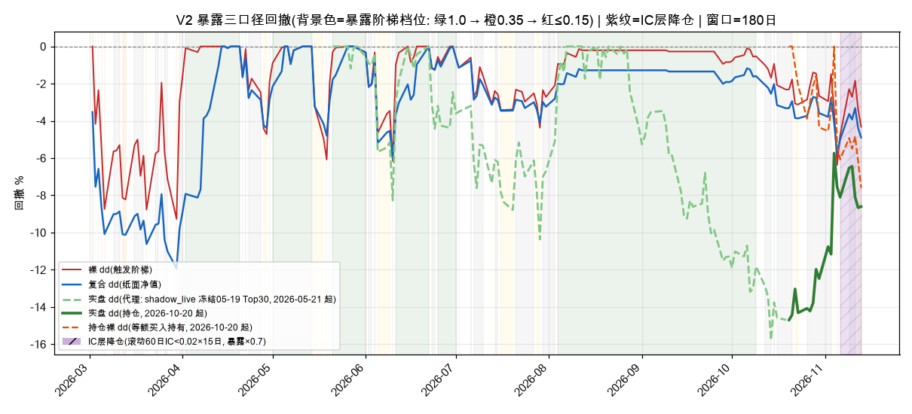
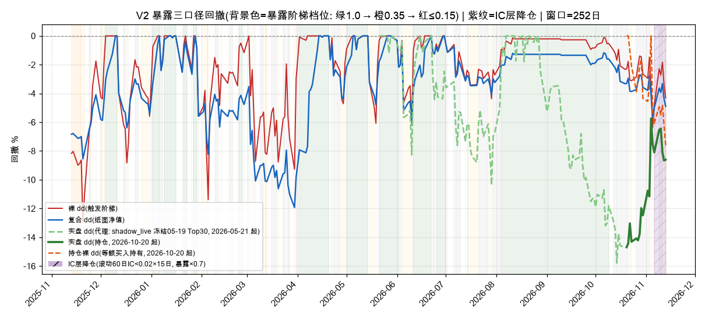
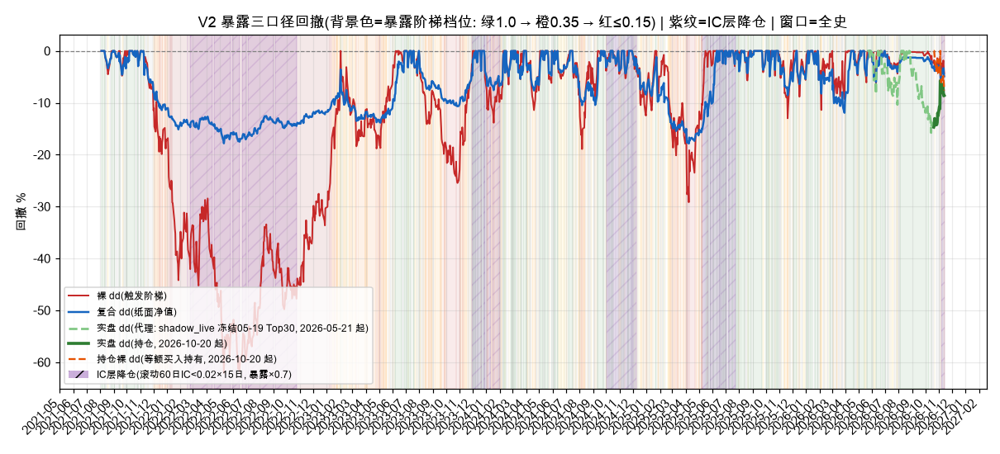
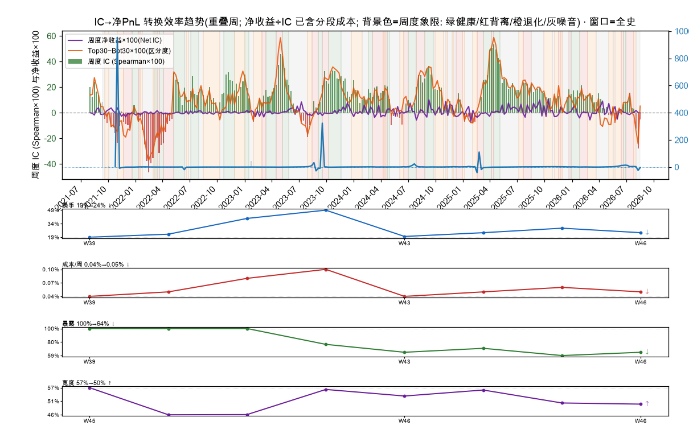
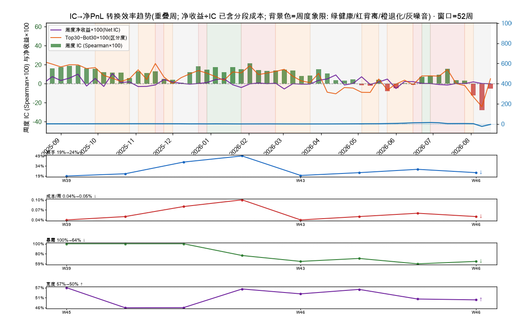
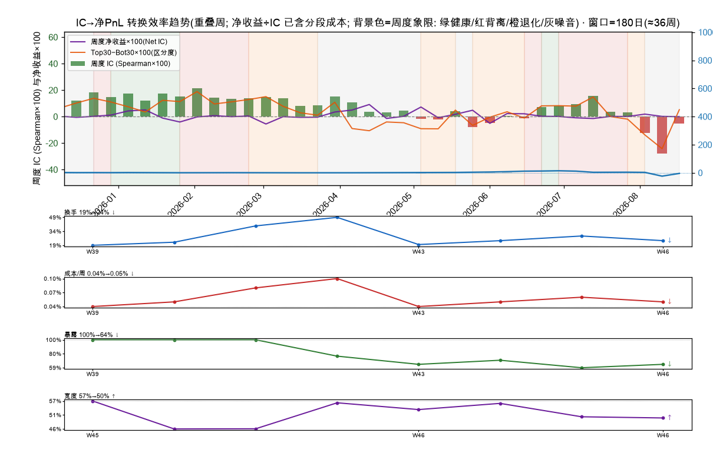

| 卡片 | 数据截至 | 年龄 | 刷新节奏 |
|---|---|---|---|
| 守门折 | 2026-09-10 | 64 天 | 标签全熟才跑 |
| 模型健康 | 2026-11-07 | 6 天 | 每周 |
| 生存性压力 | 2026-11-07 | 6 天 | 每周 |
| 前视审计 | 2026-11-07 | 6 天 | 每周 |
| 研究流水线 | 2026-11-08 | 5 天 | 手动触发 |
| 入场时机·burst 概率 | 2026-11-12 | 1 天 | 手动重跑 |
| 入场时机·弹簧 EV | 2026-11-12 | 1 天 | 手动重跑 |
| 入场时机·宽度价差 | 2026-11-12 | 1 天 | 手动重跑 |
| 入场时机·弹簧宽度豁免 | 2026-11-12 | 1 天 | 手动重跑 |
| 刻度护栏 | 2026-11-14 | 今日 | 每日 2 次 |
| 收盘价护栏 | 2026-11-14 | 今日 | 每日 2 次 |
| 指数新鲜度 | 2026-11-14 | 今日 | 每日 2 次 |
| 盘中观察 | 2026-11-14 | 今日 | 每日盘前 |
| 生产风控 | 2026-11-14 | 今日 | 每日盘后 |
| IC 阶梯 | 2026-11-14 | 今日 | 每日 2 次 |
| IC 效率 | 2026-11-14 | 今日 | 每日盘后 |
| 入场时机证据 | 2026-11-14 | 今日 | 每日 2 次 |
| 市场状态 | 2026-11-14 | 今日 | 每日 2 次 |
| V2 暴露 | 2026-11-13 | 今日 | 每日 2 次 |
| 分数桶校准 | 2026-11-14 | 今日 | 每日盘后 |
| 当日信号 ×5 | 2026-11-14 | 今日 | 每日 2 次 |
| 桶 | 样本 | 60D 均值 | 中位数 | 命中率 | 路径峰值 |
|---|---|---|---|---|---|
| B0 | 117,282 | +2.17% | +1.18% | 54.38% | +12.3% |
| B1 | 118,012 | +1.99% | +1.44% | 54.99% | +11.1% |
| B2 | 118,079 | +2.28% | +1.65% | 55.52% | +11.5% |
| B3 | 117,910 | +2.62% | +2.01% | 56.47% | +12.2% |
| B4 | 117,814 | +3.08% | +2.34% | 57.20% | +13.3% |
| B5 | 118,274 | +3.45% | +2.61% | 57.63% | +14.3% |
| B6 | 117,913 | +4.10% | +3.14% | 58.46% | +15.0% |
| B7 | 118,052 | +4.77% | +3.45% | 58.74% | +16.6% |
| B8 | 118,043 | +5.89% | +4.22% | 59.38% | +19.5% |
| B9 | 118,710 | +9.20% | +5.84% | 59.64% | +29.8% |
| 档位 | 滚动 IC | 截至 | 历史分位 |
|---|---|---|---|
| T-20 | +0.0353 | 2026-10-16 | 40% |
| T-40 | +0.0336 | 2026-09-18 | 30% |
| T-60 | -0.0348 | 2026-08-20 | 12% |
| CODE | PRICE | SCORE | 趋势 | ΔRANK | H20 | H40 | H60 | L60 | ⬆D | ⬇D | TGT | STOP* | TREND | REASON |
|---|---|---|---|---|---|---|---|---|---|---|---|---|---|---|
| DRAM×5⚠157根ATR 7.4%半导体 | 42.40 | +2.1 | ◆ 震荡 | — | +26.6% | +32.9% | +39.0% | -20.5% | 9 | 10 | 56 | — | ||
| DOCN×4ATR 10.7%软件 | 86.32 | +2.1 | ◆ 震荡 | ↑9 | +15.5% | +22.6% | +30.5% | -21.6% | 10 | 11 | 107 | — | ||
| AAOI×5ATR 16.0%综合行业 | 48.26 | +2.1 | ◆ 震荡 | ↓1 | +26.6% | +48.6% | +49.2% | -28.0% | 10 | 7 | 67 | — | ||
| SMTC×5ATR 11.9%半导体 | 108.86 | +2.1 | ◆ 震荡 | — | +17.9% | +21.6% | +31.1% | -18.2% | 11 | 8 | 136 | — | ||
| VICR×5ATR 12.4%元件 | 151.72 | +2.1 | ◆ 震荡 | — | +23.0% | +29.3% | +52.5% | -16.0% | 10 | 7 | 215 | — | ||
| FORM×3ATR 10.2%半导体 | 87.53 | +2.1 | ◆ 震荡 | — | +13.7% | +21.9% | +32.6% | -20.4% | 9 | 9 | 110 | — | ||
| SMRATR 10.6%核能 | 4.57 | +2.1 | ▲ 上升 | ↑28 | +31.1% | +47.9% | +66.8% | -18.4% | 12 | 6 | 7 | — | ||
| VSAT×3ATR 8.7%综合行业 | 66.81 | +2.1 | ◆ 震荡 | ↓5 | +20.5% | +29.7% | +42.0% | -14.5% | 11 | 9 | 89 | — | ||
| PAYP⚠172根软件 | 14.12 | +2.0 | ◆ 震荡 | ↑6 | +16.2% | +24.3% | +37.2% | -15.5% | 11 | 8 | 18 | — | ||
| SANMATR 8.7%元件 | 151.77 | +2.0 | ▲ 上升 | ↑3 | +16.9% | +27.0% | +37.0% | -20.5% | 12 | 11 | 197 | — | ||
| ALAB×2ATR 11.2%半导体 | 213.92 | +2.0 | ◆ 震荡 | ↓3 | +15.0% | +20.7% | +25.4% | -29.4% | 11 | 10 | 257 | — | ||
| DELLATR 10.4%综合行业 | 344.53 | +2.0 | ◆ 震荡 | ↑36 | +15.7% | +21.8% | +26.3% | -23.2% | 10 | 8 | 417 | — | ||
| VIAVATR 9.7%综合行业 | 30.21 | +2.0 | ▲ 上升 | ↓6 | +15.6% | +21.0% | +33.0% | -22.8% | 10 | 9 | 38 | — | ||
| MRNAATR 8.7%生物 | 226.74 | +2.0 | ◆ 震荡 | ↑16 | +27.3% | +44.4% | +55.8% | -26.3% | 14 | 8 | 328 | — | ||
| QNT×3⚠114根ATR 9.9%软件 | 35.28 | +2.0 | ◆ 震荡 | ↑39 | +18.3% | +22.4% | +31.5% | -22.4% | 11 | 7 | 44 | — | ||
| ONTOATR 9.2%半导体 | 196.86 | +2.0 | ▲ 上升 | ↓2 | +14.9% | +23.4% | +30.4% | -20.8% | 11 | 11 | 245 | — | ||
| ITATR 5.0%IT服务 | 192.15 | +2.0 | ◆ 震荡 | ↓5 | +14.5% | +23.2% | +30.1% | -12.0% | 10 | 9 | 238 | — | ||
| KORUATR 20.1%综合资产 | 7.68 | +2.0 | ◆ 震荡 | ↓1 | +27.3% | +28.5% | +41.6% | -20.7% | 9 | 9 | 10 | — | ||
| HUTATR 12.4%综合行业 | 57.57 | +2.0 | ▲ 上升 | ↑24 | +15.2% | +25.5% | +34.8% | -26.6% | 10 | 10 | 74 | — | ||
| SOXX×3ATR 5.9%半导体 | 145.18 | +2.0 | ◆ 震荡 | — | +18.2% | +27.3% | +29.8% | -15.6% | 11 | 8 | 180 | — | ||
| LITE×2ATR 12.9%综合行业 | 576.94 | +2.0 | ◆ 震荡 | ↑5 | +16.8% | +23.9% | +29.1% | -28.1% | 10 | 8 | 711 | — | ||
| TTMIATR 12.4%元件 | 71.59 | +2.0 | ◆ 震荡 | ↓3 | +14.9% | +25.1% | +36.2% | -24.6% | 10 | 9 | 92 | — | ||
| TSEMATR 10.6%半导体 | 143.00 | +2.0 | ▲ 上升 | ↑14 | +18.8% | +23.5% | +32.6% | -20.8% | 11 | 9 | 180 | — | ||
| SAILATR 5.7%软件 | 20.63 | +2.0 | ◆ 震荡 | ↑8 | +13.2% | +21.2% | +27.5% | -15.9% | 9 | 11 | 25 | — | ||
| AKAMATR 6.2%软件 | 84.29 | +2.0 | ◆ 震荡 | ↓16 | +15.7% | +22.7% | +30.5% | -12.8% | 11 | 9 | 105 | — | ||
| SNDK×2ATR 12.5%综合行业 | 851.35 | +2.0 | ◆ 震荡 | ↑16 | +15.2% | +20.4% | +27.4% | -28.8% | 10 | 7 | 1038 | — | ||
| CGNXATR 6.0%综合行业 | 50.01 | +2.0 | ◆ 震荡 | ↓4 | +13.1% | +22.5% | +27.5% | -15.0% | 10 | 10 | 61 | — | ||
| HBMATR 5.6%矿业/金属 | 21.38 | +2.0 | ▲ 上升 | ↓6 | +15.8% | +26.7% | +34.1% | -14.9% | 10 | 9 | 27 | — | ||
| GDXUATR 15.3%黄金/贵金属 | 71.31 | +2.0 | ◆ 震荡 | ↓8 | +29.2% | +30.6% | +44.0% | -20.7% | 9 | 8 | 96 | — | ||
| SITMATR 10.2%半导体 | 430.01 | +2.0 | ▲ 上升 | ↑1 | +15.8% | +23.3% | +31.9% | -23.4% | 11 | 8 | 540 | — | ||
| QCOMATR 5.4%半导体 | 168.20 | +1.9 | ▲ 上升 | ↑13 | +13.1% | +18.1% | +23.7% | -12.9% | 12 | 9 | 200 | — | ||
| BEATR 11.6%能源 | 186.93 | +1.9 | ▼ 下降 | ↓22 | +14.1% | +21.4% | +27.2% | -26.8% | 11 | 10 | 228 | — | ||
| FROGATR 7.3%软件 | 113.60 | +1.9 | ◆ 震荡 | ↑95 | +22.1% | +30.4% | +38.2% | -18.0% | 7 | 12 | 148 | — | ||
| SOXLATR 24.1%半导体 | 53.12 | +1.9 | ▼ 下降 | ↓16 | +26.7% | +28.2% | +41.1% | -21.5% | 12 | 8 | 71 | — | ||
| SNOWATR 5.7%软件 | 284.12 | +1.9 | ◆ 震荡 | ↑20 | +13.7% | +22.3% | +30.8% | -19.6% | 11 | 9 | 354 | — | ||
| FDXF⚠120根物流运输 | 133.93 | +1.9 | ◆ 震荡 | ↑3 | +16.1% | +23.6% | +30.8% | -10.8% | 7 | 14 | 167 | — | ||
| COHRATR 10.9%综合行业 | 218.15 | +1.9 | ▲ 上升 | ↑59 | +12.7% | +21.1% | +25.4% | -27.1% | 10 | 10 | 262 | — | ||
| KLAR信贷 | 13.44 | +1.9 | ◆ 震荡 | ↓5 | +15.8% | +26.3% | +34.3% | -15.7% | 10 | 14 | 17 | — | ||
| SKM综合行业 | 34.22 | +1.9 | ◆ 震荡 | ↓12 | +12.7% | +19.1% | +26.5% | -9.7% | 8 | 13 | 41 | — | ||
| MUATR 7.7%半导体 | 759.26 | +1.9 | ◆ 震荡 | ↑32 | +15.9% | +23.2% | +29.8% | -21.4% | 10 | 10 | 940 | — | ||
| IAGATR 5.5%黄金 | 17.32 | +1.9 | ◆ 震荡 | ↑6 | +15.6% | +23.7% | +32.6% | -16.0% | 11 | 8 | 22 | — | ||
| FPS⚠196根ATR 13.2%电力设备 | 22.12 | +1.9 | ▼ 下降 | ↓18 | +15.0% | +23.0% | +37.6% | -26.0% | 8 | 10 | 29 | — | ||
| XPEV汽车 | 9.24 | +1.9 | ◆ 震荡 | ↓5 | +12.0% | +17.8% | +23.5% | -12.3% | 14 | 6 | 11 | — | ||
| KEP公用事业 | 10.16 | +1.9 | ◆ 震荡 | ↑74 | +13.6% | +17.0% | +21.2% | -10.5% | 15 | 5 | 12 | — | ||
| HPEATR 7.7%综合行业 | 48.29 | +1.9 | ◆ 震荡 | ↑14 | +13.8% | +18.1% | +25.8% | -22.1% | 10 | 10 | 58 | — | ||
| ICLR综合行业 | 194.65 | +1.9 | ◆ 震荡 | — | +14.8% | +20.5% | +31.8% | -11.2% | 12 | 5 | 244 | — | ||
| FIGATR 6.4%软件 | 19.45 | +1.9 | ◆ 震荡 | ↑18 | +17.5% | +30.6% | +43.9% | -17.7% | 7 | 13 | 26 | — | ||
| FSLRATR 5.9%清洁能源 | 171.39 | +1.9 | ◆ 震荡 | ↓19 | +14.4% | +19.8% | +27.3% | -13.8% | 13 | 9 | 209 | — | ||
| MRVLATR 11.4%半导体 | 150.76 | +1.9 | ◆ 震荡 | ↑2 | +13.8% | +20.0% | +24.1% | -30.2% | 11 | 9 | 180 | — | ||
| ZSLATR 5.3%白银/贵金属 | 40.04 | +1.9 | ▲ 上升 | ↑47 | +22.0% | +32.6% | +37.2% | -18.1% | 9 | 12 | 52 | — |
| CODE | # | PHASE | P5 | P10 | BURST | 弹簧 | 放量 | 吸筹 | ⬆D | CLOSE | 空间 | TGT | STOP* | EV | 判定 |
|---|---|---|---|---|---|---|---|---|---|---|---|---|---|---|---|
| FORMFormFactor, Inc. FormFactor, Inc. Common Stock | 6 | Automatic Rally | 48% | 65% | 0.94 | — | — | ✓ | 9 | 87.53 | +26.1% | 110.38 | 83.15* | +2.7% | ★ burst∩吸筹/弹簧 |
| QCOMQUALCOMM Incorporated Common Stock | 31 | Automatic Rally | 48% | 65% | 0.94 | — | — | ✓ | 12 | 168.20 | +19.0% | 200.11 | 159.79* | +2.7% | ★ burst∩吸筹/弹簧 |
| COHRCoherent Corp. Common Stock | 37 | Automatic Rally | 48% | 65% | 0.94 | — | — | ✓ | 10 | 218.15 | +20.3% | 262.46 | 207.24* | +2.7% | ★ burst∩吸筹/弹簧 |
| KEPKorea Electric Power Corporation Common Stock | 44 | Secondary Test | 48% | 65% | 0.95 | — | — | ✓ | 15 | 10.16 | +17.0% | 11.88 | 9.65* | +2.7% | ★ burst∩吸筹/弹簧 |
| FSLRFirst Solar, Inc. Common Stock | 48 | Automatic Rally | 48% | 65% | 0.96 | — | — | ✓ | 13 | 171.39 | +21.8% | 208.81 | 162.82* | +2.7% | ★ burst∩吸筹/弹簧 |
| HUTHut 8 Corp. Common Stock | 19 | Secondary Test | 38% | 55% | 0.87 | — | — | ✓ | 10 | 57.57 | +27.8% | 73.58 | 54.69* | +2.7% | ★ burst∩吸筹/弹簧 |
| SITMSiTime Corporation Common Stock | 30 | Automatic Rally | 38% | 55% | 0.81 | — | — | ✓ | 11 | 430.01 | +25.5% | 539.88 | 408.51* | +2.7% | ★ burst∩吸筹/弹簧 |
| XPEVXPeng Inc. American depositary shares, each representing two Class A ordinary shares | 43 | Secondary Test | 38% | 55% | 0.89 | — | — | ✓ | 14 | 9.24 | +18.8% | 10.98 | 8.78* | +2.7% | ★ burst∩吸筹/弹簧 |
| QNTQuantinuum Inc. Class A Common Stock | 15 | Unknown | 48% | 65% | 0.99 | — | — | — | 11 | 35.28 | +25.2% | 44.18 | 33.52* | +2.7% | ○ 爆发 |
| HBMHudbay Minerals Inc. Ordinary Shares (Canada) | 28 | Markup | 48% | 65% | 0.95 | — | — | — | 10 | 21.38 | +27.3% | 27.21 | 20.31* | +2.7% | ○ 爆发 |
| FROGJFrog Ltd. Ordinary Shares | 33 | Markup | 48% | 65% | 0.94 | — | — | — | 7 | 113.60 | +30.6% | 148.31 | 107.92* | +2.7% | ○ 爆发 |
| SKMSK Telecom Co., Ltd. Common Stock | 39 | Markup | 48% | 65% | 0.98 | — | — | — | 8 | 34.22 | +21.2% | 41.48 | 32.51* | +2.7% | ○ 爆发 |
| IAGIamgold Corporation Ordinary Shares | 41 | Markup | 48% | 65% | 1.00 | — | — | — | 11 | 17.32 | +26.1% | 21.84 | 16.45* | +2.7% | ○ 爆发 |
| MRNAModerna, Inc. Common Stock | 14 | Markup | 38% | 55% | 0.85 | — | — | — | 14 | 226.74 | +44.6% | 327.94 | 215.40* | +2.7% | ○ 爆发 |
| FIGFigma, Inc. Class A Common Stock | 47 | Unknown | 28% | 42% | 0.77 | ✓ | — | — | 7 | 19.45 | +35.1% | 26.27 | 18.48* | +2.7% | ↻ 弹簧 |
| CODE | # | CLOSE | 买笔 | 买额 | 高管买 | 卖笔 | 卖额 | 净额 | 解禁 | 判定 |
|---|---|---|---|---|---|---|---|---|---|---|
| KLAR | 38 | 13.44 | 1 | $9.95M | 1笔 | 0 | $0.0M | $+9.95M | — | ★ 高管买入 |
| TTMI | 22 | 71.59 | 6 | $3.93M | 2笔 | 0 | $0.0M | $+3.93M | — | ★ 高管买入 |
| PAAS | 52 | 37.34 | 11 | $35.03M | 0笔 | 0 | $0.0M | $+35.03M | — | 内部人买入 |
| HONA | 67 | 165.01 | 1 | $1.00M | 0笔 | 0 | $0.0M | $+1.00M | — | 内部人买入 |
| GFS | 58 | 41.47 | 1 | $0.38M | 0笔 | 6 | $0.5M | $-0.13M | — | 内部人买入 |
| CODE | 量价 / 形态 / 资金流 | 持仓 | 条件式建议 |
|---|---|---|---|
| BMNR持有 | 价跌量缩, 缩量回调卖压有限; 上涨日均量为下跌日的 1.05 倍 空头排列(MA20<MA60)、波动扩张 BMNR: 近7个自然日内 1 条capital异动 —— 2026-11-06 11/06卖空数量日环比下降76%，为171.63万，比近一月均值低69%。 | 浮盈亏 -19.6% | 💡 形态已是空头排列; **17.19 是关键防线**, 有效跌破要考虑减仓 |
| BAC持有 | 价跌量缩, 缩量回调卖压有限; 上涨日均量为下跌日的 1.04 倍 空头排列(MA20<MA60)、波动平稳 BAC: 近7个自然日内 2 条capital异动 —— 2026-11-12 特大单净流出1846.04万且流入流出金额相差一倍以上，小单净流入422.12万，方向相反，代表大资 | 浮盈亏 -0.1% | 💡 形态已是空头排列; **50.21 是关键防线**, 有效跌破要考虑减仓 |
| MCD持有 | 价涨量缩, 上攻缩量、量价背离需警惕; 上涨日均量为下跌日的 0.96 倍 多头排列(MA20>MA60)、波动平稳 MCD: 近7个自然日内无异动(err_code=1, retMsg=资金面异动无异常) | 浮盈亏 +14.1% | 💡 持仓暂无触发条件 —— 盯住最近支撑/阻力位, 无需动作 |
| CODE | 量价 / 形态 / 资金流 | 持仓 | 条件式建议 |
|---|---|---|---|
| DRAM | 价跌量增, 放量下跌是抛压释放; 上涨日均量为下跌日的 0.83 倍 空头排列(MA20<MA60)、波动扩张 DRAM: 近7个自然日内无异动(err_code=1, retMsg=资金面异动无异常) | — | 💡 放量下跌中, **不接**; 等站上 41.90 再评估, 若跌破 41.01(最近支撑)则风险更大 |
| DOCN | 价跌量增, 放量下跌是抛压释放; 上涨日均量为下跌日的 1.23 倍 空头排列(MA20<MA60)、波动扩张 DOCN: 近7个自然日内无异动(err_code=1, retMsg=资金面异动无异常) | — | 💡 放量下跌中, **不接**; 等站上 85.72 再评估, 若跌破 85.46(最近支撑)则风险更大 |
| VICR | 价跌量增, 放量下跌是抛压释放; 上涨日均量为下跌日的 1.17 倍 空头排列(MA20<MA60)、波动扩张 VICR: 近7个自然日内 6 条capital异动 —— 2026-10-08 主力资金近7日持续净流出，当日净流出金额比前3日均值高137%，表明主力资金在加速离场。 / 20 | — | 💡 放量下跌中, **不接**; 等站上 153.38 再评估, 若跌破 150.00(最近支撑)则风险更大 |
| SMTC | 价跌量缩, 缩量回调卖压有限; 上涨日均量为下跌日的 0.91 倍 空头排列(MA20<MA60)、波动扩张 SMTC: 近7个自然日内 2 条capital异动 —— 2026-11-12 特大单净流出227.31万且流入流出金额相差一倍以上，小单净流入1032.56万，方向相反，代表大 | — | 💡 暂无明确触发条件 —— 等放量突破 110.00 或缩量企稳 |
| SMR | 价跌量缩, 缩量回调卖压有限; 上涨日均量为下跌日的 1.19 倍 空头排列(MA20<MA60)、波动扩张 SMR: 近7个自然日内 1 条capital异动 —— 2026-11-13 特大单净流入120.43万且流入流出金额相差一倍以上，小单净流出13.89万，方向相反，代表大资金和 | — | 💡 暂无明确触发条件 —— 等放量站上 4.50(最近支撑)并缩量企稳 |
| FORM | 价跌量增, 放量下跌是抛压释放; 上涨日均量为下跌日的 0.77 倍 空头排列(MA20<MA60)、波动扩张 FORM: 近7个自然日内 2 条capital异动 —— 2026-11-13 特大单净流出52.37万且流入流出金额相差一倍以上，小单净流入12.93万，方向相反，代表大资金和 | — | 💡 放量下跌中, **不接**; 等站上 86.97 再评估 |
| VSAT | 价涨量增, 资金同步进场; 上涨日均量为下跌日的 1.29 倍 空头排列(MA20<MA60)、波动扩张 VSAT: 近7个自然日内 1 条capital异动 —— 2026-11-11 特大单净流出49.56万且流入流出金额相差一倍以上，小单净流入120.72万，方向相反，代表大资金 | — | 💡 暂无明确触发条件 —— 等放量站上 66.75(最近支撑)并缩量企稳 |
| PAYP | 价跌量缩, 缩量回调卖压有限; 上涨日均量为下跌日的 1.12 倍 空头排列(MA20<MA60)、波动平稳 PAYP: 近7个自然日内 1 条capital异动 —— 2026-11-13 特大单净流出34.48万且流入流出金额相差一倍以上，小单净流入1524.59，方向相反，代表大资金 | — | 💡 暂无明确触发条件 —— 等放量突破 14.16 或缩量企稳 |
| SANM | 价跌量增, 放量下跌是抛压释放; 上涨日均量为下跌日的 1.06 倍 空头排列(MA20<MA60)、波动扩张 SANM: 近7个自然日内 1 条capital异动 —— 2026-11-10 11/10卖空数量日环比上升176%，为41.87万，比近一月均值高343%。 | — | 💡 放量下跌中, **不接**; 等站上 153.49 再评估, 若跌破 151.00(最近支撑)则风险更大 |
| ALAB | 价跌量增, 放量下跌是抛压释放; 上涨日均量为下跌日的 0.87 倍 空头排列(MA20<MA60)、波动扩张 ALAB: 近7个自然日内 3 条capital异动 —— 2026-11-13 特大单净流入99.4万且流入流出金额相差一倍以上，小单净流出636.91万，方向相反，代表大资金和 | — | 💡 放量下跌中, **不接**; 等站上 214.24 再评估, 若跌破 213.46(最近支撑)则风险更大 |
| QNT | 价跌量增, 放量下跌是抛压释放; 上涨日均量为下跌日的 0.98 倍 空头排列(MA20<MA60)、波动扩张 QNT: 近7个自然日内 1 条capital异动 —— 2026-11-11 特大单净流入40.92万且流入流出金额相差一倍以上，小单净流出290.37万，方向相反，代表大资金和 | — | 💡 放量下跌中, **不接**; 等站上 35.61 再评估, 若跌破 35.00(最近支撑)则风险更大 |
| DELL | 价跌量缩, 缩量回调卖压有限; 上涨日均量为下跌日的 0.86 倍 空头排列(MA20<MA60)、波动扩张 DELL: 近7个自然日内 2 条capital异动 —— 2026-11-11 特大单净流入1665.17万且流入流出金额相差一倍以上，小单净流出7581.39万，方向相反，代表 | — | 💡 暂无明确触发条件 —— 等放量突破 343.44 或缩量企稳 |
| VIAV | 价跌量增, 放量下跌是抛压释放; 上涨日均量为下跌日的 0.79 倍 空头排列(MA20<MA60)、波动扩张 VIAV: 近7个自然日内 2 条capital异动 —— 2026-10-09 特大单净流入78.14万且流入流出金额相差一倍以上，小单净流出5.92万，方向相反，代表大资金和小 | — | 💡 放量下跌中, **不接**; 等站上 30.44 再评估, 若跌破 30.00(最近支撑)则风险更大 |
| MRNA | 价涨量缩, 上攻缩量、量价背离需警惕; 上涨日均量为下跌日的 0.99 倍 多头排列(MA20>MA60)、波动平稳 MRNA: 近7个自然日内无异动(err_code=1, retMsg=资金面异动无异常) | — | 💡 若放量突破 227.71(最近阻力)可考虑小仓位介入; 未突破前**不追** |
| ONTO | 价跌量增, 放量下跌是抛压释放; 上涨日均量为下跌日的 1.08 倍 空头排列(MA20<MA60)、波动扩张 ONTO: 近7个自然日内 1 条capital异动 —— 2026-11-12 特大单净流入60.9万且流入流出金额相差一倍以上，小单净流出146.47万，方向相反，代表大资金和 | — | 💡 放量下跌中, **不接**; 等站上 197.13 再评估, 若跌破 195.19(最近支撑)则风险更大 |
| IT | 价跌量增, 放量下跌是抛压释放; 上涨日均量为下跌日的 0.86 倍 多头排列(MA20>MA60)、波动平稳 IT: 近7个自然日内 2 条capital异动 —— 2026-11-10 特大单净流入23.95万且流入流出金额相差一倍以上，小单净流出244.63万，方向相反，代表大资金和小 | — | 💡 若放量突破 193.12(最近阻力)可考虑小仓位介入; 未突破前**不追** |
| LITE | 价跌量增, 放量下跌是抛压释放; 上涨日均量为下跌日的 0.77 倍 空头排列(MA20<MA60)、波动扩张 LITE: 近7个自然日内无异动(err_code=1, retMsg=资金面异动无异常) | — | 💡 放量下跌中, **不接**; 等站上 580.00 再评估, 若跌破 573.73(最近支撑)则风险更大 |
| SOXX | 价跌量增, 放量下跌是抛压释放; 上涨日均量为下跌日的 0.81 倍 空头排列(MA20<MA60)、波动扩张 SOXX: 近7个自然日内 1 条capital异动 —— 2026-11-11 特大单净流入3亿且流入流出金额相差一倍以上，小单净流出8783.14万，方向相反，代表大资金和小资 | — | 💡 放量下跌中, **不接**; 等站上 145.81 再评估, 若跌破 143.85(最近支撑)则风险更大 |
| SNDK | 价跌量增, 放量下跌是抛压释放; 上涨日均量为下跌日的 0.86 倍 空头排列(MA20<MA60)、波动扩张 SNDK: 近7个自然日内无异动(err_code=1, retMsg=资金面异动无异常) | — | 💡 放量下跌中, **不接**; 等站上 860.00 再评估, 若跌破 850.00(最近支撑)则风险更大 |
| TTMI | 价跌量增, 放量下跌是抛压释放; 上涨日均量为下跌日的 0.84 倍 空头排列(MA20<MA60)、波动扩张 TTMI: 近7个自然日内 2 条capital异动 —— 2026-11-13 特大单净流入93.29万且流入流出金额相差一倍以上，小单净流出852.37万，方向相反，代表大资金 | — | 💡 放量下跌中, **不接** |
| 研究# | 模型交易# | 代码 / 名称 | 收盘 | ALPHA | 执行状态 | 技术信号 | H20 | H40 | H60 | L60 | ⬆D | ⬇D | 参考买点 | 参考止损* | 目标 | TREND |
|---|---|---|---|---|---|---|---|---|---|---|---|---|---|---|---|---|
| 1 | 1 | DRAMRoundhill Memory ETF · 半导体 | 42.40 | +2.1 | 可执行 | 未分类 | +26.6% | +32.9% | +39.0% | -20.5% | 9 | 10 | 42.40 | 36.08* | 55.64 | |
| 2 | 2 | DOCNDigitalOcean Holdings, Inc. Common Stock · 软件 | 86.32 | +2.1 | 可执行 | 自动反弹 | +15.5% | +22.6% | +30.5% | -21.6% | 10 | 11 | 86.32 | 67.88* | 107.38 | |
| 3 | — | AAOIApplied Optoelectronics, Inc. Common Stock · 综合行业 | 48.26 | +2.1 | 风险 | 自动反弹 | +26.6% | +48.6% | +49.2% | -28.0% | 10 | 7 | 48.26 | 32.84* | 67.27 | |
| 4 | 3 | SMTCSemtech Corporation Common Stock · 半导体 | 108.86 | +2.1 | 可执行 | 自动反弹 | +17.9% | +21.6% | +31.1% | -18.2% | 11 | 8 | 108.86 | 82.93* | 135.95 | |
| 5 | 4 | VICRVicor Corporation Common Stock · 元件 | 151.72 | +2.1 | 可执行 | 自动反弹 | +23.0% | +29.3% | +52.5% | -16.0% | 10 | 7 | 151.72 | 114.13* | 215.43 | |
| 6 | 5 | FORMFormFactor, Inc. FormFactor, Inc. Common Stock · 半导体 | 87.53 | +2.1 | 可执行 | 自动反弹 | +13.7% | +21.9% | +32.6% | -20.4% | 9 | 9 | 87.53 | 69.61* | 110.38 | |
| 7 | 6 | SMRNuScale Power Corporation · 核能 | 4.57 | +2.1 | 可执行 | 自动反弹 | +31.1% | +47.9% | +66.8% | -18.4% | 12 | 6 | 4.57 | 3.60* | 6.85 | |
| 8 | 7 | VSATViaSat, Inc. Common Stock · 综合行业 | 66.81 | +2.1 | 可执行 | 上涨 | +20.5% | +29.7% | +42.0% | -14.5% | 11 | 9 | 66.81 | 55.12* | 89.23 | |
| 9 | 8 | PAYPPayPay Corporation American Depository Shares · 软件 | 14.12 | +2.0 | 可执行 | 未分类 | +16.2% | +24.3% | +37.2% | -15.5% | 11 | 8 | 14.12 | 12.71* | 18.32 | |
| 10 | 9 | SANMSanmina Corporation Common Stock · 元件 | 151.77 | +2.0 | 可执行 | 自动反弹 | +16.9% | +27.0% | +37.0% | -20.5% | 12 | 11 | 151.77 | 125.26* | 196.75 | |
| 11 | 10 | ALABAstera Labs, Inc. Common Stock · 半导体 | 213.92 | +2.0 | 可执行 | 自动反弹 | +15.0% | +20.7% | +25.4% | -29.4% | 11 | 10 | 213.92 | 165.79* | 257.36 | |
| 12 | 11 | DELLDell Technologies Inc. Class C Common Stock · 综合行业 | 344.53 | +2.0 | 可执行 | 上涨 | +15.7% | +21.8% | +26.3% | -23.2% | 10 | 8 | 344.53 | 272.82* | 416.93 | |
| 13 | 12 | VIAVViavi Solutions Inc. Common Stock · 综合行业 | 30.21 | +2.0 | 可执行 | 自动反弹 | +15.6% | +21.0% | +33.0% | -22.8% | 10 | 9 | 30.21 | 24.35* | 38.18 | |
| 14 | 13 | MRNAModerna, Inc. Common Stock · 生物 | 226.74 | +2.0 | 可执行 | 上涨 | +27.3% | +44.4% | +55.8% | -26.3% | 14 | 8 | 226.74 | 187.07* | 327.94 | |
| 15 | 14 | QNTQuantinuum Inc. Class A Common Stock · 软件 | 35.28 | +2.0 | 可执行 | 未分类 | +18.3% | +22.4% | +31.5% | -22.4% | 11 | 7 | 35.28 | 28.31* | 44.18 | |
| 16 | 15 | ONTOOnto Innovation Inc. Common Stock · 半导体 | 196.86 | +2.0 | 可执行 | 自动反弹 | +14.9% | +23.4% | +30.4% | -20.8% | 11 | 11 | 196.86 | 160.81* | 244.74 | |
| 17 | 16 | ITGartner, Inc. Common Stock · IT服务 | 192.15 | +2.0 | 可执行 | 未分类 | +14.5% | +23.2% | +30.1% | -12.0% | 10 | 9 | 192.15 | 172.80* | 238.36 | |
| 18 | — | KORUDirexion Daily South Korea Bull 3X Shares · 综合资产 | 7.68 | +2.0 | 风险 | 不适用 | +27.3% | +28.5% | +41.6% | -20.7% | 9 | 9 | 7.68 | 4.59* | 10.23 | |
| 19 | 17 | HUTHut 8 Corp. Common Stock · 综合行业 | 57.57 | +2.0 | 可执行 | 二次测试 | +15.2% | +25.5% | +34.8% | -26.6% | 10 | 10 | 57.57 | 43.32* | 73.58 | |
| 20 | 18 | SOXXiShares Semiconductor ETF · 半导体 | 145.18 | +2.0 | 可执行 | 自动反弹 | +18.2% | +27.3% | +29.8% | -15.6% | 11 | 8 | 145.18 | 128.17* | 179.73 | |
| 21 | 19 | LITELumentum Holdings Inc. Common Stock · 综合行业 | 576.94 | +2.0 | 可执行 | 自动反弹 | +16.8% | +23.9% | +29.1% | -28.1% | 10 | 8 | 576.94 | 428.43* | 711.42 | |
| 22 | 20 | TTMITTM Technologies, Inc. Common Stock · 元件 | 71.59 | +2.0 | 可执行 | 自动反弹 | +14.9% | +25.1% | +36.2% | -24.6% | 10 | 9 | 71.59 | 53.86* | 92.30 | |
| 23 | 21 | TSEMTower Semiconductor Ltd. Ordinary Shares · 半导体 | 143.00 | +2.0 | 可执行 | 自动反弹 | +18.8% | +23.5% | +32.6% | -20.8% | 11 | 9 | 143.00 | 112.63* | 180.26 | |
| 24 | 22 | SAILSailPoint, Inc. Common Stock · 软件 | 20.63 | +2.0 | 可执行 | 未分类 | +13.2% | +21.2% | +27.5% | -15.9% | 9 | 11 | 20.63 | 18.27* | 25.17 | |
| 25 | 23 | AKAMAkamai Technologies, Inc. Common Stock · 软件 | 84.29 | +2.0 | 可执行 | 未分类 | +15.7% | +22.7% | +30.5% | -12.8% | 11 | 9 | 84.29 | 73.87* | 104.88 | |
| 26 | 24 | SNDKSandisk Corporation Common Stock · 综合行业 | 851.35 | +2.0 | 可执行 | 自动反弹 | +15.2% | +20.4% | +27.4% | -28.8% | 10 | 7 | 851.35 | 637.75* | 1037.87 | |
| 27 | 25 | CGNXCognex Corporation Common Stock · 综合行业 | 50.01 | +2.0 | 可执行 | 上涨 | +13.1% | +22.5% | +27.5% | -15.0% | 10 | 10 | 50.01 | 44.01* | 61.00 | |
| 28 | 26 | HBMHudbay Minerals Inc. Ordinary Shares (Canada) · 矿业/金属 | 21.38 | +2.0 | 可执行 | 上涨 | +15.8% | +26.7% | +34.1% | -14.9% | 10 | 9 | 21.38 | 19.00* | 27.21 | |
| 29 | — | GDXUMicroSectors Gold Miners 3X Leveraged ETNs · 黄金/贵金属 | 71.31 | +2.0 | 风险 | 不适用 | +29.2% | +30.6% | +44.0% | -20.7% | 9 | 8 | 71.31 | 49.44* | 96.39 | |
| 30 | 27 | SITMSiTime Corporation Common Stock · 半导体 | 430.01 | +2.0 | 可执行 | 自动反弹 | +15.8% | +23.3% | +31.9% | -23.4% | 11 | 8 | 430.01 | 342.03* | 539.88 | |
| 31 | 28 | QCOMQUALCOMM Incorporated Common Stock · 半导体 | 168.20 | +1.9 | 可执行 | 自动反弹 | +13.1% | +18.1% | +23.7% | -12.9% | 12 | 9 | 168.20 | 149.88* | 200.11 | |
| 32 | 29 | BEBloom Energy Corporation Class A Common Stock · 能源 | 186.93 | +1.9 | 可执行 | 自动反弹 | +14.1% | +21.4% | +27.2% | -26.8% | 11 | 10 | 186.93 | 143.63* | 227.60 | |
| 33 | 30 | FROGJFrog Ltd. Ordinary Shares · 软件 | 113.60 | +1.9 | 可执行 | 上涨 | +22.1% | +30.4% | +38.2% | -18.0% | 7 | 12 | 113.60 | 96.99* | 148.31 | |
| 34 | — | SOXLDirexion Daily Semiconductor Bull 3X Shares · 半导体 | 53.12 | +1.9 | 风险 | 不适用 | +26.7% | +28.2% | +41.1% | -21.5% | 12 | 8 | 53.12 | 27.52* | 70.58 | |
| 35 | 31 | SNOWSnowflake Inc. Common Stock · 软件 | 284.12 | +1.9 | 可执行 | 上涨 | +13.7% | +22.3% | +30.8% | -19.6% | 11 | 9 | 284.12 | 251.75* | 354.14 | |
| 36 | 32 | FDXFFedEx Freight Holding Company, Inc. Common Stock · 物流运输 | 133.93 | +1.9 | 可执行 | 未分类 | +16.1% | +23.6% | +30.8% | -10.8% | 7 | 14 | 133.93 | 123.37* | 166.93 | |
| 37 | 33 | COHRCoherent Corp. Common Stock · 综合行业 | 218.15 | +1.9 | 可执行 | 自动反弹 | +12.7% | +21.1% | +25.4% | -27.1% | 10 | 10 | 218.15 | 170.63* | 262.46 | |
| 38 | 34 | KLARKlarna Group plc Ordinary Shares · 信贷 | 13.44 | +1.9 | 可执行 | 未分类 | +15.8% | +26.3% | +34.3% | -15.7% | 10 | 14 | 13.44 | 12.23* | 17.14 | |
| 39 | 35 | SKMSK Telecom Co., Ltd. Common Stock · 综合行业 | 34.22 | +1.9 | 可执行 | 上涨 | +12.7% | +19.1% | +26.5% | -9.7% | 8 | 13 | 34.22 | 31.64* | 41.48 | |
| 40 | 36 | MUMicron Technology, Inc. Common Stock · 半导体 | 759.26 | +1.9 | 可执行 | 自动反弹 | +15.9% | +23.2% | +29.8% | -21.4% | 10 | 10 | 759.26 | 642.29* | 940.42 | |
| 41 | 37 | IAGIamgold Corporation Ordinary Shares · 黄金 | 17.32 | +1.9 | 可执行 | 上涨 | +15.6% | +23.7% | +32.6% | -16.0% | 11 | 8 | 17.32 | 15.42* | 21.84 | |
| 42 | 38 | FPSForgent Power Solutions, Inc. Class A Common Stock · 电力设备 | 22.12 | +1.9 | 可执行 | 未分类 | +15.0% | +23.0% | +37.6% | -26.0% | 8 | 10 | 22.12 | 16.29* | 28.78 | |
| 43 | 39 | XPEVXPeng Inc. American depositary shares, each representing two Class A ordinary shares · 汽车 | 9.24 | +1.9 | 可执行 | 二次测试 | +12.0% | +17.8% | +23.5% | -12.3% | 14 | 6 | 9.24 | 8.48* | 10.98 | |
| 44 | 40 | KEPKorea Electric Power Corporation Common Stock · 公用事业 | 10.16 | +1.9 | 可执行 | 二次测试突破 | +13.6% | +17.0% | +21.2% | -10.5% | 15 | 5 | 10.16 | 9.45* | 11.88 | |
| 45 | 41 | HPEHewlett Packard Enterprise Company Common Stock · 综合行业 | 48.29 | +1.9 | 可执行 | 上涨 | +13.8% | +18.1% | +25.8% | -22.1% | 10 | 10 | 48.29 | 40.87* | 58.26 | |
| 46 | 42 | ICLRICON plc Ordinary Shares · 综合行业 | 194.65 | +1.9 | 可执行 | 未分类 | +14.8% | +20.5% | +31.8% | -11.2% | 12 | 5 | 194.65 | 177.81* | 244.17 | |
| 47 | 43 | FIGFigma, Inc. Class A Common Stock · 软件 | 19.45 | +1.9 | 可执行 | 未分类突破 | +17.5% | +30.6% | +43.9% | -17.7% | 7 | 13 | 19.45 | 16.96* | 26.27 | |
| 48 | 44 | FSLRFirst Solar, Inc. Common Stock · 清洁能源 | 171.39 | +1.9 | 可执行 | 自动反弹 | +14.4% | +19.8% | +27.3% | -13.8% | 13 | 9 | 171.39 | 151.31* | 208.81 | |
| 49 | 45 | MRVLMarvell Technology, Inc. Common Stock · 半导体 | 150.76 | +1.9 | 可执行 | 自动反弹 | +13.8% | +20.0% | +24.1% | -30.2% | 11 | 9 | 150.76 | 116.41* | 179.80 | |
| 50 | — | ZSLProShares UltraShort Silver · 白银/贵金属 | 40.04 | +1.9 | 风险 | 不适用 | +22.0% | +32.6% | +37.2% | -18.1% | 9 | 12 | 40.04 | 35.81* | 51.96 | |
| 51 | 46 | ZBRAZebra Technologies Corporation Class A Common Stock · 综合行业 | 319.93 | +1.9 | 可执行 | 未分类 | +11.3% | +19.3% | +24.2% | -11.8% | 12 | 10 | 319.93 | 292.77* | 381.78 | |
| 52 | 47 | PAASPan American Silver Corp. Common Stock · 黄金 | 37.34 | +1.9 | 可执行 | 上涨突破 | +16.4% | +27.1% | +35.3% | -16.8% | 12 | 7 | 37.34 | 33.64* | 47.89 | |
| 53 | 48 | HMYHarmony Gold Mining Company Limited · 黄金 | 15.09 | +1.8 | 可执行 | 未分类 | +16.2% | +26.5% | +33.7% | -15.1% | 13 | 5 | 15.09 | 13.60* | 19.16 | |
| 54 | 49 | FCXFreeport-McMoRan, Inc. Common Stock · 矿业/金属 | 59.24 | +1.8 | 可执行 | 上涨 | +13.0% | +17.1% | +23.0% | -11.6% | 12 | 8 | 59.24 | 53.73* | 70.13 | |
| 55 | 50 | RMBSRambus Inc. Common Stock · 半导体 | 80.33 | +1.8 | 可执行 | 自动反弹 | +16.1% | +21.1% | +30.7% | -18.8% | 11 | 10 | 80.33 | 67.81* | 100.06 | |
| 56 | 51 | UMCUnited Microelectronics Corporation (NEW) Common Stock · 半导体 | 15.07 | +1.8 | 可执行 | 自动反弹 | +11.6% | +19.1% | +23.9% | -24.1% | 10 | 11 | 15.07 | 13.04* | 17.95 | |
| 57 | — | TWLOTwilio Inc. Class A Common Stock · 软件 | 205.87 | +1.8 | 观察 | 上涨 | +14.4% | +19.2% | +27.9% | -22.9% | 10 | 9 | 205.87 | 176.34* | 251.90 | |
| 58 | — | GFSGlobalFoundries Inc. Ordinary Shares · 半导体 | 41.47 | +1.8 | 观察 | 二次测试 | +14.3% | +20.9% | +28.9% | -13.0% | 10 | 11 | 41.47 | 36.25* | 51.07 | |
| 59 | — | ENTGEntegris, Inc. Common Stock · 半导体 | 147.41 | +1.8 | 观察 | 自动反弹 | +14.4% | +17.8% | +21.8% | -17.1% | 11 | 11 | 147.41 | 124.77* | 173.16 | |
| 60 | — | STMSTMicroelectronics N.V. Common Stock · 半导体 | 45.82 | +1.8 | 观察 | 二次测试 | +12.7% | +22.1% | +27.5% | -18.2% | 10 | 11 | 45.82 | 40.88* | 55.91 | |
| 61 | — | SWKSSkyworks Solutions, Inc. Common Stock · 半导体 | 87.32 | +1.8 | 观察 | 自动反弹 | +12.7% | +18.0% | +26.0% | -12.0% | 10 | 12 | 87.32 | 78.66* | 105.46 | |
| 62 | — | EWYiShares MSCI South Korea ETF · 综合资产 | 142.78 | +1.8 | 观察 | 自动反弹 | +15.5% | +25.9% | +27.2% | -14.4% | 9 | 9 | 142.78 | 128.13* | 173.89 | |
| 63 | — | GWREGuidewire Software, Inc. Common Stock · 软件 | 158.22 | +1.8 | 观察 | 未分类突破 | +13.1% | +19.8% | +24.6% | -13.8% | 11 | 9 | 158.22 | 143.50* | 189.33 | |
| 64 | — | CHYMChime Financial, Inc. Class A Common Stock · 软件 | 33.55 | +1.8 | 观察 | 派发 | +13.5% | +22.6% | +32.0% | -13.5% | 6 | 13 | 33.55 | 30.86* | 42.13 | |
| 65 | — | ASXASE Technology Holding Co., Ltd. American Depositary Shares (each representing Two Common Shares) · 半导体 | 34.84 | +1.8 | 观察 | 自动反弹 | +13.3% | +19.8% | +24.8% | -21.6% | 10 | 10 | 34.84 | 29.20* | 41.75 | |
| 66 | — | EGOEldorado Gold Corporation Ordinary Shares · 黄金 | 31.58 | +1.8 | 观察 | 上涨 | +19.1% | +29.1% | +39.2% | -12.1% | 12 | 6 | 31.58 | 27.71* | 41.48 | |
| 67 | — | HONAHoneywell Aerospace Inc. Common Stock · 军工 | 165.01 | +1.8 | 观察 | 未分类 | +16.1% | +24.4% | +32.0% | -19.0% | 8 | 13 | 165.01 | 150.45* | 207.23 | |
| 68 | — | NETCloudflare, Inc. Class A Common Stock · 软件 | 306.61 | +1.8 | 观察 | 上涨 | +11.6% | +16.6% | +24.7% | -26.3% | 10 | 12 | 306.61 | 264.20* | 367.12 | |
| 69 | — | NVMINova Ltd. Ordinary Shares · 半导体 | 313.28 | +1.8 | 观察 | 二次测试 | +12.6% | +21.6% | +27.5% | -16.1% | 11 | 8 | 313.28 | 277.74* | 382.12 | |
| 71 | — | SMCISuper Micro Computer, Inc. Common Stock · 综合行业 | 26.19 | +1.8 | 观察 | 自动反弹突破 | +13.4% | +22.1% | +30.4% | -23.4% | 10 | 8 | 26.19 | 20.97* | 32.56 | |
| 70 | — | OKTAOkta, Inc. Class A Common Stock · 软件 | 176.17 | +1.8 | 观察 | 上涨 | +15.0% | +25.7% | +31.0% | -17.4% | 10 | 9 | 176.17 | 149.96* | 219.86 | |
| 72 | — | WLKWestlake Corporation Common Stock · 化工 | 62.45 | +1.8 | 观察 | 未分类 | +12.5% | +17.9% | +21.4% | -11.7% | 12 | 10 | 62.45 | 57.79* | 73.15 | |
| 73 | — | MTSIMACOM Technology Solutions Holdings, Inc. Common Stock · 半导体 | 225.82 | +1.8 | 观察 | 自动反弹 | +12.5% | +17.0% | +23.4% | -21.6% | 11 | 9 | 225.82 | 183.95* | 268.15 | |
| 74 | — | MTArcelor Mittal NY Registry Shares NEW · 综合行业 | 62.79 | +1.8 | 观察 | 上涨 | +11.7% | +18.9% | +23.2% | -9.6% | 11 | 11 | 62.79 | 58.65* | 74.43 | |
| 75 | — | AAAlcoa Corporation Common Stock · 综合行业 | 39.48 | +1.8 | 观察 | 自动反弹 | +14.7% | +22.4% | +27.9% | -13.2% | 12 | 9 | 39.48 | 36.19* | 48.29 | |
| 76 | — | IESCIES Holdings, Inc. Common Stock · 建设 | 170.28 | +1.8 | 观察 | 自动反弹 | +15.2% | +23.5% | +37.7% | -23.1% | 10 | 11 | 170.28 | 137.82* | 221.60 | |
| 77 | — | CBRSCerebras Systems Inc. Class A Common Stock · 半导体 | 108.72 | +1.8 | 观察 | 未分类 | +15.5% | +25.9% | +37.5% | -21.5% | 5 | 14 | 108.72 | 85.68* | 141.34 | |
| 78 | — | MDBMongoDB, Inc. Class A Common Stock · 软件 | 328.67 | +1.8 | 观察 | 上涨 | +13.9% | +18.3% | +25.4% | -16.8% | 10 | 9 | 328.67 | 285.96* | 395.33 | |
| 79 | — | RBRKRubrik, Inc. Class A Common Stock · 软件 | 106.21 | +1.8 | 观察 | 未分类 | +15.9% | +23.6% | +37.0% | -17.8% | 11 | 8 | 106.21 | 91.05* | 137.68 | |
| 80 | — | ENLTEnlight Renewable Energy Ltd. Ordinary Shares · 清洁能源 | 66.07 | +1.8 | 观察 | 二次测试 | +12.7% | +19.1% | +25.7% | -14.8% | 12 | 7 | 66.07 | 60.46* | 79.66 | |
| 81 | — | GDDYGoDaddy Inc. Class A Common Stock · 软件 | 114.12 | +1.8 | 观察 | 未分类 | +11.2% | +17.3% | +23.1% | -12.7% | 9 | 11 | 114.12 | 105.24* | 135.22 | |
| 82 | — | BIDUBaidu, Inc. ADS · 互联网 | 76.90 | +1.7 | 观察 | 二次测试 | +8.6% | +16.2% | +21.1% | -11.0% | 13 | 8 | 76.90 | 72.11* | 89.91 | |
| 83 | — | PEverpure, Inc. Class A common stock · 综合行业 | 102.62 | +1.7 | 观察 | 未分类 | +12.9% | +17.8% | +22.4% | -25.7% | 11 | 10 | 102.62 | 84.42* | 120.99 | |
| 84 | — | DDOGDatadog, Inc. Class A Common Stock · 软件 | 184.16 | +1.7 | 观察 | 上涨 | +12.7% | +16.4% | +21.2% | -26.7% | 9 | 8 | 184.16 | 155.29* | 215.38 | |
| 85 | — | OSCROscar Health, Inc. Class A Common Stock · 医保 | 30.24 | +1.7 | 观察 | 上涨 | +15.4% | +24.4% | +29.7% | -16.2% | 12 | 8 | 30.24 | 26.17* | 37.42 | |
| 86 | — | CPNGCoupang, Inc. Class A Common Stock · 零售 | 15.19 | +1.7 | 观察 | 二次测试 | +12.2% | +17.5% | +21.6% | -10.6% | 12 | 8 | 15.19 | 13.92* | 17.81 | |
| 87 | — | TEAMAtlassian Corporation Class A Common Stock · 软件 | 151.14 | +1.7 | 观察 | 未分类突破 | +16.0% | +26.2% | +32.3% | -19.8% | 10 | 11 | 151.14 | 131.01* | 190.20 | |
| 88 | — | IONQIonQ, Inc. Common Stock · 综合行业 | 28.88 | +1.7 | 观察 | 自动反弹 | +18.9% | +24.0% | +29.4% | -22.4% | 12 | 5 | 28.88 | 23.31* | 35.68 | |
| 89 | — | LFUSLittelfuse, Inc. Common Stock · 元件 | 387.73 | +1.7 | 观察 | 上涨 | +11.0% | +15.2% | +20.8% | -14.5% | 11 | 12 | 387.73 | 345.11* | 452.35 | |
| 90 | — | APTVAptiv PLC Ordinary Shares · 综合行业 | 38.69 | +1.7 | 观察 | 自动反弹突破 | +12.5% | +18.7% | +23.1% | -10.9% | 11 | 10 | 38.69 | 35.74* | 45.83 | |
| 91 | — | OWLBlue Owl Capital Inc. Class A Common Stock · 资管 | 9.72 | +1.7 | 观察 | 未分类 | +12.5% | +19.3% | +24.5% | -12.2% | 11 | 10 | 9.72 | 8.84* | 11.63 | |
| 92 | — | ALBAlbemarle Corporation Common Stock · 化工 | 93.43 | +1.7 | 观察 | 自动反弹 | +16.2% | +22.8% | +28.4% | -12.8% | 12 | 7 | 93.43 | 85.94* | 114.66 | |
| 93 | — | HLHecla Mining Company Common Stock · 材料/矿业 | 13.10 | +1.7 | 观察 | 上涨突破 | +18.3% | +30.4% | +39.1% | -17.7% | 12 | 5 | 13.10 | 11.44* | 17.20 | |
| 94 | — | RIVNRivian Automotive, Inc. Class A Common Stock · 汽车 | 12.53 | +1.7 | 观察 | 上涨 | +13.5% | +20.3% | +27.9% | -15.9% | 12 | 7 | 12.53 | 11.25* | 15.34 | |
| 95 | — | AMDAdvanced Micro Devices, Inc. Common Stock · 半导体 | 533.15 | +1.7 | 观察 | 自动反弹 | +13.7% | +21.1% | +29.0% | -23.5% | 12 | 12 | 533.15 | 450.14* | 656.92 | |
| 96 | — | IRENIREN Limited Ordinary Shares · 综合行业 | 18.17 | +1.7 | 风险 | 自动反弹 | +30.9% | +36.0% | +59.2% | -18.1% | 11 | 5 | 18.17 | 12.70* | 26.78 | |
| 97 | — | NTAPNetApp, Inc. Common Stock · 软件 | 178.62 | +1.7 | 观察 | 上涨突破 | +11.4% | +15.6% | +21.1% | -17.6% | 11 | 12 | 178.62 | 157.40* | 208.77 | |
| 98 | — | PANWPalo Alto Networks, Inc. Common Stock · 软件 | 316.30 | +1.7 | 观察 | 上涨 | +11.1% | +16.4% | +19.8% | -19.8% | 11 | 8 | 316.30 | 277.78* | 366.44 | |
| 100 | — | IGViShares Expanded Tech-Software Sector ETF · 软件/云服务 | 101.19 | +1.7 | 观察 | 未分类 | +8.8% | +12.5% | +14.5% | -11.5% | 10 | 9 | 101.19 | 95.31* | 112.92 | |
| 101 | — | NOKNokia Corporation Sponsored American Depositary Shares · 综合行业 | 7.97 | +1.7 | 观察 | 自动反弹 | +13.3% | +20.0% | +29.8% | -12.7% | 11 | 10 | 7.97 | 7.03* | 9.86 | |
| 99 | — | BSPBending Spoons S.p.A. Ordinary Shares · 软件 | 39.98 | +1.7 | 观察 | 未分类突破 | +18.2% | +32.9% | +35.7% | -20.4% | 11 | 9 | 39.98 | 33.25* | 51.40 | |
| 102 | — | STRDStrategy Inc 10.00% Series A Perpetual Stride Preferred Stock · 软件 | 66.72 | +1.7 | 观察 | 未分类突破 | +7.2% | +12.2% | +16.1% | -8.4% | 14 | 6 | 66.72 | 63.38* | 75.32 | |
| 103 | — | HBANPHuntington Bancshares Incorporated Depositary Shares 4.500% Series H Non-Cumulative Perpetual Preferred Stock · 银行 | 14.49 | +1.7 | 观察 | 未分类 | +7.6% | +12.9% | +14.0% | -10.4% | 13 | 8 | 14.49 | 13.71* | 16.12 | |
| 104 | — | LULUlululemon athletica inc. Common Stock · 零售 | 105.52 | +1.7 | 观察 | 未分类 | +11.0% | +15.9% | +20.7% | -12.4% | 11 | 10 | 105.52 | 97.26* | 123.02 | |
| 105 | — | WWayfair Inc. Class A Common Stock · 零售 | 108.93 | +1.7 | 观察 | 上涨 | +13.8% | +21.8% | +25.9% | -14.9% | 12 | 8 | 108.93 | 96.92* | 131.50 | |
| 106 | — | ARMArm Holdings plc American Depositary Shares · 半导体 | 186.81 | +1.7 | 观察 | 自动反弹 | +15.4% | +21.9% | +23.6% | -24.6% | 11 | 9 | 186.81 | 155.08* | 222.07 | |
| 107 | — | DOCUDocuSign, Inc. Common Stock · 软件 | 80.76 | +1.7 | 观察 | 未分类 | +9.4% | +15.2% | +20.5% | -13.1% | 7 | 12 | 80.76 | 75.22* | 94.03 | |
| 108 | — | FUTUFutu Holdings Limited American Depositary Shares · 综合行业 | 95.75 | +1.7 | 观察 | 下跌 | +13.1% | +20.6% | +26.2% | -17.1% | 11 | 9 | 95.75 | 86.31* | 115.83 | |
| 109 | — | ZMZoom Communications, Inc. Class A Common Stock · 软件 | 97.86 | +1.7 | 观察 | 上涨 | +10.7% | +16.3% | +21.4% | -11.5% | 9 | 12 | 97.86 | 90.14* | 114.59 | |
| 110 | — | FLUTFlutter Entertainment plc Ordinary Shares · 综合行业 | 81.13 | +1.7 | 观察 | 未分类 | +14.4% | +20.5% | +25.1% | -11.8% | 11 | 10 | 81.13 | 72.42* | 97.39 | |
| 111 | — | GKOSGlaukos Corporation Common Stock · 医疗器械 | 245.72 | +1.7 | 观察 | 上涨 | +15.3% | +25.3% | +34.9% | -14.8% | 8 | 12 | 245.72 | 221.77* | 314.25 | |
| 112 | — | GNRCGenerac Holdlings Inc. Common Stock · 综合行业 | 190.77 | +1.6 | 观察 | 自动反弹 | +13.9% | +21.7% | +26.0% | -14.3% | 9 | 11 | 190.77 | 166.66* | 230.41 | |
| 113 | — | AMKRAmkor Technology, Inc. Common Stock · 半导体 | 35.47 | +1.6 | 观察 | 自动反弹 | +16.9% | +25.9% | +32.9% | -18.6% | 11 | 10 | 35.47 | 29.73* | 44.80 | |
| 114 | — | LSCCLattice Semiconductor Corporation Common Stock · 半导体 | 111.39 | +1.6 | 观察 | 二次测试 | +13.6% | +24.2% | +30.4% | -17.4% | 11 | 9 | 111.39 | 95.70* | 138.52 | |
| 115 | — | CRWDCrowdStrike Holdings, Inc. Class A Common Stock · 软件 | 226.61 | +1.6 | 观察 | 上涨 | +12.1% | +21.5% | +22.5% | -19.6% | 9 | 9 | 226.61 | 198.37* | 267.46 | |
| 116 | — | JBLJabil Inc. Common Stock · 元件 | 254.25 | +1.6 | 观察 | 自动反弹 | +14.5% | +17.8% | +23.3% | -12.0% | 10 | 10 | 254.25 | 225.99* | 301.74 | |
| 117 | — | HUBSHubSpot, Inc. Common Stock · 软件 | 217.25 | +1.6 | 观察 | 下跌 | +16.0% | +24.7% | +33.1% | -16.3% | 6 | 11 | 217.25 | 190.23* | 274.71 | |
| 118 | — | TYLTyler Technologies, Inc. Common Stock · 软件 | 426.38 | +1.6 | 观察 | 未分类 | +8.5% | +13.7% | +17.3% | -11.4% | 8 | 12 | 426.38 | 399.04* | 485.23 | |
| 119 | — | MPMP Materials Corp. Common Stock · 材料/矿业 | 38.66 | +1.6 | 观察 | 自动反弹 | +19.4% | +30.9% | +40.0% | -18.5% | 7 | 12 | 38.66 | 33.70* | 51.04 | |
| 120 | — | TERTeradyne, Inc. Common Stock · 半导体 | 243.09 | +1.6 | 观察 | 自动反弹 | +13.1% | +17.7% | +24.4% | -28.4% | 11 | 10 | 243.09 | 197.35* | 290.60 | |
| 121 | — | GENGen Digital Inc. Common Stock · 软件 | 30.40 | +1.6 | 观察 | 未分类 | +9.8% | +16.3% | +20.7% | -10.6% | 7 | 12 | 30.40 | 28.36* | 35.45 | |
| 122 | — | CDECoeur Mining, Inc. Common Stock · 黄金 | 13.98 | +1.6 | 观察 | 未分类 | +17.7% | +29.2% | +37.4% | -19.6% | 12 | 5 | 13.98 | 12.21* | 18.17 | |
| 123 | — | STXSeagate Technology Holdings PLC Ordinary Shares (Ireland) · 美国大盘 | 508.68 | +1.6 | 观察 | 自动反弹 | +15.2% | +20.0% | +23.5% | -30.9% | 11 | 9 | 508.68 | 405.48* | 604.15 | |
| 124 | — | CCJCameco Corporation Common Stock · 综合行业 | 70.73 | +1.6 | 观察 | 自动反弹 | +12.8% | +19.8% | +25.8% | -12.8% | 11 | 8 | 70.73 | 63.58* | 85.33 | |
| 125 | — | CLSCelestica, Inc. Common Stock · 元件 | 240.34 | +1.6 | 观察 | 未分类 | +13.2% | +18.0% | +21.1% | -25.4% | 10 | 11 | 240.34 | 191.47* | 280.96 | |
| 126 | — | CTSHCognizant Technology Solutions Corporation Class A Common Stock · IT服务 | 63.01 | +1.6 | 观察 | 未分类 | +10.7% | +16.0% | +20.9% | -9.5% | 12 | 9 | 63.01 | 58.04* | 73.54 | |
| 127 | — | IBMInternational Business Machines Corporation Common Stock · IT服务 | 247.13 | +1.6 | 观察 | 自动反弹 | +8.6% | +13.7% | +17.5% | -12.5% | 8 | 13 | 247.13 | 234.22* | 281.68 | |
| 128 | — | ETHAiShares Ethereum Trust ETF · 数字资产 | 44.02 | +1.6 | 风险 | 不适用突破 | +14.3% | +24.8% | +29.3% | -14.5% | 13 | 5 | 44.02 | 39.84* | 54.35 | |
| 129 | — | IFFInternational Flavors & Fragrances, Inc. Common Stock · 化工 | 81.16 | +1.6 | 观察 | 上涨突破 | +9.1% | +14.1% | +17.9% | -9.7% | 12 | 10 | 81.16 | 76.12* | 92.76 | |
| 130 | — | XPHState Street SPDR S&P Pharmaceuticals ETF · 医疗健康 | 66.33 | +1.6 | 风险 | 未分类 | +7.3% | +9.9% | +12.8% | -9.9% | 11 | 9 | 66.33 | 63.01* | 73.13 | |
| 131 | — | LIILennox International, Inc. Common Stock · 海外市场 | 357.07 | +1.6 | 观察 | 二次测试 | +12.4% | +16.1% | +20.6% | -10.3% | 8 | 15 | 357.07 | 330.59* | 415.93 | |
| 132 | — | IOTSamsara Inc. Class A Common Stock · 软件 | 41.36 | +1.6 | 观察 | 未分类 | +13.1% | +21.4% | +29.8% | -13.9% | 10 | 10 | 41.36 | 37.77* | 51.23 | |
| 133 | — | NTNXNutanix, Inc. Class A Common Stock · 软件 | 59.31 | +1.6 | 观察 | 未分类 | +10.9% | +16.9% | +22.0% | -12.9% | 12 | 9 | 59.31 | 54.37* | 69.73 | |
| 134 | — | AGIAlamos Gold Inc. Class A Common Shares · 黄金 | 28.75 | +1.6 | 观察 | 下跌 | +16.4% | +25.0% | +30.7% | -17.0% | 12 | 7 | 28.75 | 26.00* | 35.80 | |
| 135 | — | FICOFair Isaac Corporation Common Stock · 软件 | 720.19 | +1.6 | 观察 | 未分类 | +16.0% | +22.1% | +30.1% | -16.3% | 9 | 10 | 720.19 | 640.54* | 893.75 | |
| 136 | — | XRTState Street SPDR S&P Retail ETF · 消费 | 90.63 | +1.5 | 观察 | 未分类 | +6.0% | +8.0% | +9.8% | -9.7% | 10 | 11 | 90.63 | 86.10* | 97.75 | |
| 137 | — | KEYSKeysight Technologies Inc. Common Stock · 综合行业 | 297.68 | +1.5 | 观察 | 自动反弹 | +11.3% | +14.9% | +19.4% | -15.7% | 10 | 11 | 297.68 | 265.49* | 343.88 | |
| 138 | — | LRCXLam Research Corporation Common Stock · 半导体 | 222.84 | +1.5 | 观察 | 自动反弹 | +11.4% | +17.1% | +23.3% | -23.4% | 11 | 11 | 222.84 | 190.34* | 264.39 | |
| 139 | — | MTUMiShares MSCI USA Momentum Factor ETF · 综合资产 | 67.13 | +1.5 | 观察 | 二次测试 | +22.0% | +26.4% | +37.5% | -19.4% | 11 | 7 | 67.13 | 48.68* | 87.26 | |
| 141 | — | PSPershing Square Inc. Common Stock · 资管 | 44.47 | +1.5 | 观察 | 未分类 | +16.2% | +23.3% | +27.9% | -21.8% | 12 | 9 | 44.47 | 37.19* | 54.38 | |
| 140 | — | FFIVF5, Inc. Common Stock · 软件 | 309.14 | +1.5 | 观察 | 上涨突破 | +10.7% | +14.8% | +19.2% | -12.4% | 11 | 9 | 309.14 | 276.42* | 356.62 | |
| 142 | — | AIQGlobal X Artificial Intelligence & Technology ETF · 美国大盘 | 58.18 | +1.5 | 观察 | 上涨 | +8.6% | +12.2% | +14.0% | -10.4% | 11 | 9 | 58.18 | 54.98* | 64.71 | |
| 143 | — | NIONIO Inc. American depositary shares, each representing one Class A ordinary share · 汽车 | 2.95 | +1.5 | 观察 | 二次测试突破 | +13.9% | +20.8% | +26.1% | -16.9% | 14 | 6 | 2.95 | 2.66* | 3.57 | |
| 144 | — | SMHVanEck Semiconductor ETF · 半导体 | 475.57 | +1.5 | 观察 | 自动反弹 | +13.6% | +18.0% | +20.3% | -13.2% | 12 | 8 | 475.57 | 427.37* | 552.81 | |
| 145 | — | IPInternational Paper Company Common Stock · 海外市场 | 34.43 | +1.5 | 观察 | 未分类 | +11.2% | +15.0% | +19.2% | -10.5% | 10 | 10 | 34.43 | 31.91* | 39.72 | |
| 146 | — | JHXJames Hardie Industries plc. Ordinary Shares · 综合行业 | 27.80 | +1.5 | 观察 | 上涨 | +12.2% | +15.7% | +20.8% | -14.8% | 11 | 9 | 27.80 | 25.53* | 32.43 | |
| 147 | — | APAAPA Corporation Common Stock · 综合行业 | 47.85 | +1.5 | 观察 | 上涨 | +9.9% | +14.6% | +18.6% | -13.1% | 9 | 13 | 47.85 | 44.09* | 54.96 | |
| 148 | — | ASMLASML Holding N.V. New York Registry Shares · 半导体 | 1477.90 | +1.5 | 观察 | 上涨 | +11.3% | +15.7% | +19.8% | -13.9% | 10 | 10 | 1477.90 | 1348.10* | 1712.23 | |
| 149 | — | SMCIPSuper Micro Computer, Inc. Depositary Shares representing a 1/20th Interest in a Share of 7% Series A Mandatory Convertible Preferred Stock · 金融 | 45.58 | +1.5 | 风险 | 未分类突破 | +13.4% | +19.5% | +25.6% | -24.4% | 11 | 8 | 45.58 | 38.12* | 54.92 | |
| 150 | — | FTNTFortinet, Inc. Common Stock · 软件 | 127.22 | +1.5 | 观察 | 上涨 | +11.0% | +15.8% | +19.4% | -20.0% | 9 | 10 | 127.22 | 111.35* | 147.01 | |
| 151 | — | WDCWestern Digital Corporation Common Stock · 综合行业 | 288.10 | +1.5 | 观察 | 自动反弹 | +14.8% | +20.3% | +24.1% | -30.5% | 11 | 9 | 288.10 | 234.27* | 343.57 | |
| 152 | — | RIORio Tinto Plc Common Stock · 综合行业 | 83.29 | +1.5 | 观察 | 上涨 | +8.0% | +13.0% | +16.3% | -8.5% | 11 | 9 | 83.29 | 79.13* | 94.15 | |
| 153 | — | MSTRStrategy Inc Common Stock Class A · 软件 | 108.92 | +1.5 | 观察 | 下跌突破 | +17.1% | +22.0% | +28.4% | -17.9% | 13 | 7 | 108.92 | 91.32* | 133.63 | |
| 154 | — | ARXSArxis, Inc. Class A Common Stock · 军工 | 52.12 | +1.5 | 观察 | 未分类 | +13.0% | +19.5% | +27.4% | -16.4% | 11 | 11 | 52.12 | 46.06* | 63.55 | |
| 155 | — | BWABorgWarner Inc. Common Stock · 综合行业 | 50.89 | +1.5 | 观察 | 上涨 | +11.6% | +15.5% | +20.4% | -10.4% | 9 | 12 | 50.89 | 47.17* | 59.19 | |
| 156 | — | DVADaVita Inc. Common Stock · 综合行业 | 174.56 | +1.5 | 观察 | 未分类 | +10.5% | +15.9% | +21.5% | -12.0% | 13 | 8 | 174.56 | 160.30* | 204.59 | |
| 157 | — | MOHMolina Healthcare Inc Common Stock · 医保 | 206.90 | +1.5 | 观察 | 上涨 | +11.9% | +19.1% | +23.8% | -11.5% | 11 | 10 | 206.90 | 187.79* | 246.23 | |
| 158 | — | BNJBrookfield Finance Inc. 4.50% Perpetual Subordinated Notes · 债券 | 13.69 | +1.5 | 风险 | 上涨 | +5.9% | +13.1% | +14.0% | -7.7% | 12 | 9 | 13.69 | 13.01* | 15.22 | |
| 159 | — | DTDynatrace, Inc. Common Stock · 软件 | 44.80 | +1.5 | 观察 | 派发突破 | +11.2% | +15.0% | +20.2% | -14.7% | 10 | 12 | 44.80 | 39.88* | 52.03 | |
| 160 | — | SKHYSK hynix Inc. American Depositary Shares · 半导体 | 129.62 | +1.5 | 观察 | 未分类 | +14.6% | +19.4% | +23.9% | -25.0% | 11 | 9 | 129.62 | 109.46* | 154.41 | |
| 162 | — | MODModine Manufacturing Company Common Stock · 综合行业 | 135.51 | +1.5 | 观察 | 自动反弹 | +13.4% | +22.8% | +32.7% | -19.1% | 4 | 15 | 135.51 | 110.36* | 170.97 | |
| 161 | — | CHKPCheck Point Software Technologies Ltd. Ordinary Shares · 软件 | 147.18 | +1.5 | 观察 | 二次测试 | +10.0% | +15.4% | +18.5% | -10.0% | 9 | 11 | 147.18 | 136.52* | 169.00 | |
| 163 | — | KGCKinross Gold Corporation Common Stock · 黄金 | 20.76 | +1.5 | 观察 | 上涨 | +15.7% | +23.7% | +23.2% | -14.8% | 12 | 7 | 20.76 | 18.77* | 24.61 | |
| 164 | — | DINOHF Sinclair Corporation Common Stock · 综合行业 | 102.18 | +1.4 | 观察 | 上涨突破 | +11.3% | +16.7% | +24.2% | -14.5% | 9 | 13 | 102.18 | 91.83* | 121.97 | |
| 165 | — | SLViShares Silver Trust · 白银/贵金属 | 44.35 | +1.4 | 风险 | 不适用 | +12.2% | +17.5% | +24.4% | -12.1% | 11 | 6 | 44.35 | 41.34* | 53.01 | |
| 166 | — | TMETencent Music Entertainment Group American Depositary Shares, each representing two Class A Ordinary Shares · 互联网 | 8.94 | +1.4 | 观察 | 未分类 | +9.8% | +13.2% | +17.3% | -11.6% | 13 | 8 | 8.94 | 8.40* | 10.17 | |
| 167 | — | GSATGlobalstar, Inc. Common Stock · 海外市场 | 86.29 | +1.4 | 观察 | 上涨 | +5.7% | +9.6% | +14.2% | -8.2% | 7 | 10 | 86.29 | 81.98* | 96.07 | |
| 168 | — | WSEWise Group plc Class A Ordinary Shares · IT服务 | 11.82 | +1.4 | 观察 | 未分类 | +10.6% | +15.5% | +18.5% | -12.0% | 6 | 15 | 11.82 | 11.06* | 13.57 | |
| 169 | — | AUAngloGold Ashanti PLC Ordinary Shares · 黄金 | 86.62 | +1.4 | 观察 | 上涨 | +14.9% | +22.8% | +31.0% | -13.9% | 12 | 7 | 86.62 | 78.58* | 108.07 | |
| 170 | — | TPLTexas Pacific Land Corporation Common Stock · 综合行业 | 295.42 | +1.4 | 观察 | 未分类 | +11.7% | +16.7% | +20.4% | -14.1% | 7 | 14 | 295.42 | 265.46* | 343.70 | |
| 171 | — | AMRZAmrize Ltd Ordinary Shares · 综合行业 | 40.89 | +1.4 | 观察 | 未分类 | +9.6% | +13.6% | +15.3% | -10.8% | 12 | 10 | 40.89 | 38.34* | 45.90 | |
| 172 | — | LDOSLeidos Holdings, Inc. Common Stock · IT服务 | 130.53 | +1.4 | 观察 | 下跌 | +9.3% | +15.9% | +19.8% | -10.1% | 12 | 9 | 130.53 | 120.85* | 151.17 | |
| 173 | — | MANHManhattan Associates, Inc. Common Stock · 软件 | 257.76 | +1.4 | 观察 | 未分类 | +8.5% | +14.5% | +17.7% | -12.9% | 8 | 12 | 257.76 | 242.45* | 294.31 | |
| 174 | — | VGVenture Global, Inc. Class A common stock · 海外市场 | 13.05 | +1.4 | 观察 | 未分类突破 | +13.7% | +22.6% | +31.2% | -18.7% | 9 | 13 | 13.05 | 11.54* | 16.30 | |
| 175 | — | ECHOEchoStar Corporation Common Stock · 综合行业 | 100.00 | +1.4 | 观察 | 二次测试 | +13.7% | +19.2% | +27.4% | -12.2% | 8 | 11 | 100.00 | 90.18* | 121.94 | |
| 176 | — | AMATApplied Materials, Inc. Common Stock · 半导体 | 360.74 | +1.4 | 观察 | 自动反弹 | +11.4% | +19.8% | +26.0% | -24.4% | 11 | 10 | 360.74 | 311.18* | 435.89 | |
| 177 | — | GLLProShares UltraShort Gold · 黄金/贵金属 | 28.57 | +1.4 | 风险 | 不适用 | +10.5% | +15.8% | +18.4% | -12.5% | 9 | 10 | 28.57 | 26.61* | 32.78 | |
| 178 | — | SQMSociedad Quimica y Minera S.A. Common Stock · 化工 | 53.24 | +1.4 | 观察 | 上涨突破 | +13.5% | +18.4% | +21.5% | -12.7% | 13 | 7 | 53.24 | 49.29* | 62.42 | |
| 179 | — | SNXTD SYNNEX Corporation Common Stock · 综合行业 | 234.74 | +1.4 | 观察 | 二次测试 | +9.5% | +13.9% | +18.7% | -13.9% | 11 | 11 | 234.74 | 213.46* | 269.92 | |
| 180 | — | BKRBaker Hughes Company Class A Common Stock · 综合行业 | 48.74 | +1.4 | 观察 | 上涨 | +8.5% | +12.9% | +16.5% | -11.4% | 10 | 10 | 48.74 | 44.71* | 55.16 | |
| 181 | — | STRKStrategy Inc 8.00% Series A Perpetual Strike Preferred Stock · 软件 | 66.50 | +1.4 | 观察 | 未分类突破 | +8.7% | +14.8% | +18.4% | -10.3% | 12 | 8 | 66.50 | 62.52* | 76.29 | |
| 182 | — | ANETArista Networks, Inc. Common Stock · 综合行业 | 198.90 | +1.4 | 观察 | 上涨 | +10.8% | +17.4% | +18.7% | -21.5% | 11 | 13 | 198.90 | 175.14* | 228.66 | |
| 183 | — | CGThe Carlyle Group Inc. Common Stock · 资管 | 39.77 | +1.4 | 观察 | 未分类 | +10.3% | +14.9% | +19.1% | -11.5% | 10 | 10 | 39.77 | 36.79* | 45.84 | |
| 184 | — | MCHPPMicrochip Technology Incorporated Depositary Shares Each Representing a 1/20th Interest in a Share of 7.50% Series A Mandatory Convertible Preferred Stock · 半导体 | 53.05 | +1.4 | 风险 | 未分类 | +11.2% | +15.1% | +19.8% | -18.7% | 11 | 8 | 53.05 | 47.24* | 61.44 | |
| 185 | — | CORTCorcept Therapeutics Incorporated Common Stock · 生物 | 72.94 | +1.4 | 观察 | 上涨突破 | +15.3% | +22.0% | +31.7% | -18.1% | 10 | 10 | 72.94 | 62.38* | 91.44 | |
| 186 | — | DECKDeckers Outdoor Corporation Common Stock · 综合行业 | 86.82 | +1.4 | 观察 | 二次测试 | +11.0% | +15.0% | +18.6% | -11.7% | 9 | 13 | 86.82 | 80.32* | 99.72 | |
| 187 | — | AYIAcuity Inc. Common Stock · 综合行业 | 326.58 | +1.4 | 观察 | 未分类 | +8.4% | +12.7% | +17.1% | -9.6% | 10 | 12 | 326.58 | 305.00* | 371.36 | |
| 188 | — | ERXDirexion Daily Energy Bull 2X Shares · 能源 | 109.98 | +1.4 | 风险 | 不适用突破 | +12.2% | +16.8% | +21.2% | -13.7% | 8 | 12 | 109.98 | 99.37* | 128.62 | |
| 189 | — | ARWArrow Electronics, Inc. Common Stock · 综合行业 | 191.10 | +1.4 | 观察 | 上涨 | +10.9% | +14.4% | +18.2% | -16.8% | 11 | 10 | 191.10 | 171.16* | 218.95 | |
| 190 | — | UHALU-Haul Holding Company Common Stock · 综合行业 | 55.68 | +1.4 | 风险 | 上涨 | +8.7% | +12.3% | +16.4% | -9.6% | 12 | 11 | 55.68 | 52.40* | 62.99 | |
| 191 | — | BBDOBanco Bradesco Sa American Depositary Shares (each representing one Common Share) · 银行 | 2.37 | +1.3 | 风险 | 未分类 | +12.4% | +18.2% | +22.7% | -12.9% | 11 | 9 | 2.37 | 2.06* | 2.79 | |
| 194 | — | PINSPinterest, Inc. Class A Common Stock · 互联网 | 18.98 | +1.3 | 观察 | 未分类 | +11.5% | +17.1% | +21.6% | -13.8% | 12 | 10 | 18.98 | 17.25* | 22.26 | |
| 192 | — | BHPBHP Group Limited American Depositary Shares (Each representing two Ordinary Shares) · 综合行业 | 79.48 | +1.3 | 观察 | 上涨 | +9.0% | +13.1% | +17.2% | -8.7% | 12 | 8 | 79.48 | 75.05* | 90.39 | |
| 193 | — | NVTnVent Electric plc Ordinary Shares · 公用事业 | 111.76 | +1.3 | 观察 | 自动反弹 | +12.9% | +16.4% | +18.4% | -20.5% | 10 | 10 | 111.76 | 93.75* | 128.19 | |
| 195 | — | CACICACI International, Inc. Class A Common Stock · IT服务 | 630.46 | +1.3 | 观察 | 上涨 | +9.7% | +14.0% | +18.0% | -13.2% | 11 | 11 | 630.46 | 580.49* | 721.38 | |
| 196 | — | CFCF Industries Holdings, Inc. Common Stock · 综合行业 | 125.09 | +1.3 | 观察 | 上涨 | +10.9% | +14.4% | +19.4% | -12.5% | 8 | 12 | 125.09 | 115.95* | 144.51 | |
| 197 | — | XYZBlock, Inc. Class A Common Stock, · 软件 | 83.18 | +1.3 | 观察 | 上涨 | +9.8% | +14.6% | +17.8% | -12.8% | 12 | 10 | 83.18 | 76.67* | 95.03 | |
| 198 | — | CARRCarrier Global Corporation Common Stock · 海外市场 | 54.29 | +1.3 | 观察 | 二次测试 | +8.8% | +12.3% | +15.9% | -10.0% | 9 | 13 | 54.29 | 50.97* | 61.18 | |
| 199 | — | RYANRyan Specialty Holdings, Inc. Class A Common Stock · 保险 | 47.12 | +1.3 | 观察 | 未分类 | +10.1% | +14.8% | +19.8% | -10.4% | 10 | 12 | 47.12 | 43.96* | 54.59 | |
| 200 | — | FLEXFlex Ltd. Ordinary Shares · 元件 | 74.98 | +1.3 | 观察 | 自动反弹 | +16.9% | +25.0% | +26.8% | -21.3% | 10 | 9 | 74.98 | 60.60* | 91.03 | |
| 201 | — | BBDBanco Bradesco Sa American Depositary Shares · 银行 | 2.54 | +1.3 | 观察 | 未分类 | +14.4% | +17.0% | +21.5% | -12.3% | 10 | 9 | 2.54 | 2.25* | 2.97 | |
| 202 | — | APHAmphenol Corporation Common Stock · 元件 | 77.09 | +1.3 | 观察 | 上涨 | +10.6% | +14.8% | +19.0% | -19.1% | 11 | 11 | 77.09 | 68.64* | 88.83 | |
| 203 | — | CYTKCytokinetics, Incorporated Common Stock · 生物 | 56.13 | +1.3 | 观察 | 上涨 | +11.2% | +18.3% | +23.9% | -13.4% | 9 | 12 | 56.13 | 50.74* | 66.87 | |
| 204 | — | PTCPTC Inc. Common Stock · 软件 | 196.46 | +1.3 | 观察 | 未分类 | +5.3% | +10.4% | +16.0% | -7.9% | 6 | 7 | 196.46 | 186.64* | 221.55 | |
| 205 | — | DBBInvesco DB Base Metals Fund · 材料/矿业 | 24.06 | +1.3 | 观察 | 未分类突破 | +5.6% | +10.8% | +11.6% | -8.7% | 12 | 7 | 24.06 | 22.86* | 26.29 | |
| 206 | — | INTCIntel Corporation Common Stock · 半导体 | 59.66 | +1.3 | 观察 | 自动反弹 | +14.3% | +20.6% | +24.9% | -24.2% | 9 | 9 | 59.66 | 48.22* | 71.56 | |
| 207 | — | INSMInsmed Incorporated Common Stock · 生物 | 121.16 | +1.3 | 观察 | 下跌 | +13.0% | +17.4% | +25.5% | -19.9% | 6 | 13 | 121.16 | 111.39* | 145.92 | |
| 208 | — | TECLDirexion Daily Technology Bull 3X Shares · 美国大盘 | 135.57 | +1.3 | 风险 | 不适用 | +15.0% | +23.6% | +23.0% | -20.5% | 11 | 7 | 135.57 | 104.27* | 160.48 | |
| 209 | — | DKSDick's Sporting Goods Inc Common Stock · 零售 | 149.70 | +1.3 | 观察 | 二次测试 | +10.4% | +14.6% | +19.5% | -15.2% | 6 | 13 | 149.70 | 138.68* | 173.10 | |
| 210 | — | NTRNutrien Ltd. Common Shares · 综合行业 | 71.24 | +1.3 | 观察 | 上涨 | +8.3% | +12.3% | +15.8% | -9.0% | 11 | 11 | 71.24 | 67.23* | 80.25 | |
| 211 | — | TXNTexas Instruments Incorporated Common Stock · 半导体 | 296.64 | +1.2 | 观察 | 二次测试 | +9.7% | +14.5% | +18.9% | -14.4% | 13 | 12 | 296.64 | 270.43* | 341.56 | |
| 212 | — | FISFidelity National Information Services, Inc. Common Stock · IT服务 | 29.54 | +1.2 | 观察 | 未分类突破 | +11.4% | +18.1% | +22.3% | -16.3% | 7 | 12 | 29.54 | 26.11* | 34.81 | |
| 213 | — | STLAStellantis N.V. Common Shares · 汽车 | 3.89 | +1.2 | 观察 | 未分类突破 | +13.6% | +18.8% | +23.6% | -15.5% | 13 | 9 | 3.89 | 3.49* | 4.62 | |
| 214 | — | QQnity Electronics, Inc. Common Stock · 半导体 | 116.72 | +1.2 | 观察 | 未分类 | +13.4% | +19.5% | +23.8% | -14.8% | 13 | 8 | 116.72 | 104.33* | 138.94 | |
| 215 | — | WPMWheaton Precious Metals Corp Common Shares (Canada) · 黄金 | 131.24 | +1.2 | 观察 | 上涨 | +11.8% | +17.0% | +20.0% | -17.3% | 11 | 8 | 131.24 | 119.76* | 152.23 | |
| 216 | — | TXTernium S.A. Ternium S.A. American Depositary Shares (each representing ten shares, USD1.00 par value) · 红利/价值 | 49.28 | +1.2 | 观察 | 上涨 | +9.1% | +12.3% | +15.1% | -11.4% | 13 | 8 | 49.28 | 45.74* | 55.24 | |
| 217 | — | VLOValero Energy Corporation Common Stock · 能源 | 371.67 | +1.2 | 观察 | 上涨突破 | +10.2% | +15.7% | +20.3% | -14.0% | 9 | 13 | 371.67 | 336.19* | 432.12 | |
| 218 | — | TRGPTarga Resources, Inc. Common Stock · 综合行业 | 295.74 | +1.2 | 观察 | 上涨突破 | +7.9% | +11.6% | +15.8% | -9.8% | 9 | 14 | 295.74 | 275.29* | 333.16 | |
| 219 | — | LILi Auto Inc. American Depositary Shares · 汽车 | 11.64 | +1.2 | 观察 | 未分类 | +10.4% | +15.0% | +19.4% | -11.2% | 13 | 8 | 11.64 | 10.84* | 13.45 | |
| 220 | — | RPMRPM International Inc. Common Stock · 化工 | 103.28 | +1.2 | 观察 | 未分类 | +8.3% | +13.5% | +16.9% | -8.7% | 11 | 10 | 103.28 | 97.21* | 117.24 | |
| 221 | — | SOFISoFi Technologies, Inc. Common Stock · 信贷 | 15.23 | +1.2 | 观察 | 未分类 | +12.8% | +18.7% | +22.6% | -21.7% | 13 | 7 | 15.23 | 13.61* | 17.98 | |
| 222 | — | UPROProShares UltraPro S&P500 · 综合资产 | 136.10 | +1.2 | 风险 | 不适用 | +10.7% | +15.1% | +18.1% | -13.0% | 11 | 9 | 136.10 | 124.02* | 155.77 | |
| 223 | — | GILGildan Activewear, Inc. Class A Sub. Vot. Common Stock · 综合行业 | 34.66 | +1.2 | 观察 | 未分类 | +14.8% | +18.5% | +21.1% | -20.7% | 11 | 8 | 34.66 | 30.79* | 40.50 | |
| 224 | — | LTMLATAM Airlines Group S.A. American Depositary Shares (each representing two thousand (2,000) shares of Common Stock) · 航空航运 | 47.67 | +1.2 | 观察 | 二次测试 | +11.3% | +15.1% | +20.1% | -13.1% | 10 | 11 | 47.67 | 43.94* | 55.32 | |
| 225 | — | NCLDRoundhill Neocloud ETF · 软件/云服务 | 12.97 | +1.2 | 观察 | 未分类 | +19.2% | +26.3% | +29.8% | -21.2% | 11 | 6 | 12.97 | 9.77* | 16.06 | |
| 226 | — | TQQQProShares UltraPro QQQ · 综合资产 | 56.04 | +1.2 | 风险 | 不适用 | +16.7% | +20.8% | +23.1% | -18.2% | 10 | 8 | 56.04 | 47.23* | 66.39 | |
| 227 | — | ATIATI Inc. Common Stock · 综合行业 | 183.28 | +1.2 | 观察 | 上涨 | +11.2% | +16.3% | +20.0% | -14.4% | 11 | 11 | 183.28 | 160.32* | 212.66 | |
| 228 | — | WDSWoodside Energy Group Limited American Depositary Shares, each representing one Ordinary Share · 能源 | 21.13 | +1.2 | 观察 | 上涨突破 | +7.4% | +11.0% | +15.3% | -8.3% | 11 | 11 | 21.13 | 20.07* | 23.71 | |
| 229 | — | SPXLDirexion Daily S&P500 Bull 3X Shares · 综合资产 | 260.22 | +1.2 | 风险 | 不适用 | +10.7% | +15.3% | +18.1% | -13.0% | 11 | 9 | 260.22 | 237.20* | 297.84 | |
| 230 | — | QLDProShares Ultra QQQ · 综合资产 | 77.84 | +1.2 | 风险 | 不适用 | +12.1% | +16.4% | +20.1% | -13.3% | 11 | 9 | 77.84 | 70.07* | 90.34 | |
| 231 | — | ASTSAST SpaceMobile, Inc. Class A Common Stock · 综合行业 | 31.59 | +1.2 | 观察 | 自动反弹 | +25.9% | +31.5% | +36.5% | -23.5% | 11 | 7 | 31.59 | 23.47* | 40.81 | |
| 232 | — | WCCWESCO International, Inc. Common Stock · 海外市场 | 318.25 | +1.2 | 观察 | 上涨 | +12.2% | +15.4% | +21.1% | -14.5% | 11 | 11 | 318.25 | 281.11* | 372.08 | |
| 233 | — | TRMBTrimble Inc. Common Stock · 综合行业 | 55.73 | +1.2 | 观察 | 未分类 | +8.9% | +13.2% | +16.8% | -11.3% | 9 | 10 | 55.73 | 51.42* | 63.24 | |
| 234 | — | HIIHuntington Ingalls Industries, Inc. Common Stock · 军工 | 306.24 | +1.2 | 观察 | 未分类 | +9.6% | +13.2% | +17.8% | -12.3% | 9 | 12 | 306.24 | 284.29* | 349.86 | |
| 235 | — | HALHalliburton Company Common Stock · 综合行业 | 33.78 | +1.1 | 观察 | 上涨突破 | +8.1% | +12.1% | +15.5% | -9.2% | 7 | 14 | 33.78 | 31.65* | 37.96 | |
| 236 | — | TLKPT Telekomunikasi Indonesia, Tbk · 综合行业 | 11.58 | +1.1 | 观察 | 未分类 | +10.3% | +14.4% | +19.0% | -11.8% | 7 | 11 | 11.58 | 10.81* | 13.34 | |
| 237 | — | STRCStrategy Inc Variable Rate Series A Perpetual Stretch Preferred Stock · 软件 | 99.80 | +1.1 | 观察 | 未分类 | +4.6% | +7.3% | +9.7% | -8.1% | 10 | 9 | 99.80 | 94.81* | 107.52 | |
| 238 | — | XAG-USDSilver Spot USD · 白银/贵金属 | 49.01 | +1.1 | 风险 | 不适用 | +10.4% | +16.6% | +22.3% | -12.4% | 5 | 5 | 49.01 | 46.05* | 57.76 | |
| 239 | — | VRSNVeriSign, Inc. Common Stock · 软件 | 313.77 | +1.1 | 观察 | 上涨 | +7.4% | +10.7% | +13.7% | -8.8% | 10 | 14 | 313.77 | 296.72* | 348.22 | |
| 240 | — | WITWipro Limited Common Stock · IT服务 | 2.14 | +1.1 | 观察 | 自动反弹 | +8.2% | +13.5% | +16.9% | -12.0% | 10 | 11 | 2.14 | 2.02* | 2.43 | |
| 241 | — | SLBSLB Limited Common Shares · 综合行业 | 51.18 | +1.1 | 观察 | 上涨 | +8.4% | +12.5% | +15.8% | -9.0% | 9 | 13 | 51.18 | 47.99* | 57.66 | |
| 242 | — | COPXGlobal X Copper Miners ETF · 材料/矿业 | 69.23 | +1.1 | 观察 | 上涨突破 | +11.5% | +16.4% | +19.2% | -11.7% | 12 | 9 | 69.23 | 63.76* | 79.84 | |
| 243 | — | CRMSalesforce, Inc. Common Stock · 软件 | 217.84 | +1.1 | 观察 | 未分类突破 | +9.4% | +15.0% | +18.6% | -11.9% | 9 | 11 | 217.84 | 201.73* | 250.23 | |
| 244 | — | SGISomnigroup International Inc. Common Stock · 海外市场 | 61.17 | +1.1 | 观察 | 二次测试突破 | +12.3% | +17.4% | +21.6% | -11.9% | 11 | 11 | 61.17 | 55.58* | 71.76 | |
| 245 | — | TSMTaiwan Semiconductor Manufacturing Company Ltd. · 半导体 | 393.30 | +1.1 | 观察 | 上涨 | +8.7% | +12.3% | +15.5% | -13.6% | 11 | 10 | 393.30 | 359.17* | 442.20 | |
| 246 | — | CDWCDW Corporation Common Stock · IT服务 | 171.65 | +1.1 | 观察 | 未分类 | +10.8% | +15.6% | +20.5% | -14.0% | 8 | 12 | 171.65 | 156.56* | 199.81 | |
| 247 | — | AGNCAGNC Investment Corp. Common Stock · 综合行业 | 8.08 | +1.1 | 观察 | 上涨突破 | +7.4% | +10.9% | +14.2% | -10.4% | 13 | 7 | 8.08 | 7.59* | 9.00 | |
| 248 | — | MPCMarathon Petroleum Corporation Common Stock · 综合行业 | 406.95 | +1.1 | 观察 | 上涨 | +9.9% | +15.9% | +19.4% | -14.5% | 10 | 12 | 406.95 | 369.05* | 470.18 | |
| 249 | — | TIGOMillicom International Cellular S.A. Common Stock · 海外市场 | 78.72 | +1.1 | 观察 | 上涨 | +11.2% | +15.4% | +19.7% | -14.8% | 13 | 6 | 78.72 | 71.62* | 91.09 | |
| 250 | — | MCHPMicrochip Technology Incorporated Common Stock · 半导体 | 59.52 | +1.1 | 观察 | 未分类 | +12.6% | +15.3% | +18.1% | -26.0% | 11 | 8 | 59.52 | 51.15* | 68.12 | |
| 251 | — | UNMUnum Group Common Stock · 保险 | 79.66 | +1.1 | 观察 | 上涨 | +7.8% | +11.0% | +13.9% | -10.9% | 9 | 12 | 79.66 | 73.61* | 88.49 | |
| 253 | — | XMEState Street SPDR S&P Metals & Mining ETF · 材料/矿业 | 93.25 | +1.1 | 观察 | 未分类 | +10.1% | +16.2% | +17.8% | -12.7% | 12 | 8 | 93.25 | 86.31* | 106.53 | |
| 252 | — | CNHCNH Industrial N.V. Common Shares · 工业制造 | 11.91 | +1.1 | 观察 | 未分类 | +11.0% | +15.8% | +21.2% | -11.0% | 9 | 11 | 11.91 | 10.77* | 13.93 | |
| 254 | — | TOSTToast, Inc. Class A Common Stock · 软件 | 34.68 | +1.1 | 观察 | 未分类 | +10.1% | +14.7% | +18.4% | -12.8% | 9 | 14 | 34.68 | 32.06* | 39.78 | |
| 255 | — | CVECenovus Energy Inc Common Stock · 能源 | 29.08 | +1.1 | 观察 | 上涨突破 | +8.5% | +13.4% | +16.8% | -12.4% | 8 | 13 | 29.08 | 26.99* | 33.00 | |
| 256 | — | SYMSymbotic Inc. Class A Common Stock · 综合行业 | 34.26 | +1.1 | 观察 | 未分类 | +17.9% | +27.0% | +36.2% | -17.7% | 13 | 8 | 34.26 | 30.02* | 44.17 | |
| 257 | — | PLTRPalantir Technologies Inc. Class A Common Stock · 软件 | 165.15 | +1.0 | 观察 | 未分类 | +11.1% | +17.8% | +20.9% | -17.5% | 12 | 9 | 165.15 | 147.48* | 192.76 | |
| 258 | — | ADIAnalog Devices, Inc. Common Stock · 半导体 | 394.11 | +1.0 | 观察 | 自动反弹 | +9.5% | +14.2% | +17.6% | -14.6% | 12 | 12 | 394.11 | 357.17* | 449.55 | |
| 259 | — | BTSGBrightSpring Health Services, Inc. Common Stock · 医疗 | 71.21 | +1.0 | 观察 | 上涨 | +9.8% | +14.1% | +19.1% | -13.2% | 8 | 11 | 71.21 | 65.59* | 82.11 | |
| 260 | — | MGMMGM Resorts International Common Stock · 海外市场 | 33.48 | +1.0 | 观察 | 二次测试 | +10.6% | +15.3% | +19.2% | -10.4% | 8 | 12 | 33.48 | 31.31* | 38.63 | |
| 261 | — | EIXEdison International Common Stock · 海外市场 | 60.18 | +1.0 | 观察 | 上涨 | +7.5% | +11.7% | +14.1% | -10.0% | 8 | 12 | 60.18 | 57.17* | 66.99 | |
| 262 | — | AGNCPAGNC Investment Corp. Depositary Shares Each Representing a 1/1,000th Interest in a Share of 6.125% Series F Fixed-to-Floating Rate Cumulative Redeemable Preferred Stock · 金融 | 24.13 | +1.0 | 风险 | 上涨突破 | +3.9% | +6.6% | +8.3% | -8.2% | 7 | 5 | 24.13 | 22.92* | 25.73 | |
| 263 | — | PAYXPaychex, Inc. Common Stock · 软件 | 116.56 | +1.0 | 观察 | 未分类 | +7.8% | +11.7% | +15.9% | -8.2% | 10 | 12 | 116.56 | 110.32* | 131.37 | |
| 264 | — | AGNCMAGNC Investment Corp. Depositary Shares rep 6.875% Series D Fixed-to-Floating Cumulative Redeemable Preferred Stock · 金融 | 24.00 | +1.0 | 风险 | 上涨 | +4.1% | +6.7% | +8.1% | -8.3% | 8 | 9 | 24.00 | 22.80* | 25.56 | |
| 265 | — | CSCOCisco Systems, Inc. Common Stock (DE) · 综合行业 | 95.64 | +1.0 | 观察 | 上涨 | +8.6% | +11.7% | +14.8% | -13.0% | 14 | 8 | 95.64 | 87.88* | 106.93 | |
| 266 | — | KTOSKratos Defense & Security Solutions, Inc. Common Stock · 军工 | 33.72 | +1.0 | 观察 | 下跌 | +20.5% | +27.2% | +38.2% | -18.7% | 12 | 8 | 33.72 | 29.04* | 44.02 | |
| 267 | — | BTC-USDBitcoin USD · 数字资产 | 68275.06 | +1.0 | 风险 | 不适用突破 | +10.8% | +15.3% | +19.7% | -12.1% | 14 | 5 | 68275.06 | 62913.25* | 79014.90 | |
| 268 | — | ERICEricsson American Depositary Shares · 综合行业 | 10.56 | +1.0 | 观察 | 自动反弹 | +7.2% | +11.1% | +14.9% | -8.9% | 8 | 11 | 10.56 | 10.03* | 11.82 | |
| 269 | — | ESLTElbit Systems Ltd. Ordinary Shares · 军工 | 706.62 | +1.0 | 观察 | 二次测试 | +10.4% | +14.6% | +18.8% | -13.5% | 10 | 10 | 706.62 | 650.62* | 812.90 | |
| 270 | — | URNMSprott Uranium Miners ETF · 清洁能源 | 39.06 | +1.0 | 观察 | 未分类突破 | +14.7% | +22.4% | +22.2% | -14.2% | 13 | 7 | 39.06 | 35.27* | 46.01 | |
| 271 | — | FFord Motor Company Common Stock · 汽车 | 11.91 | +1.0 | 观察 | 二次测试 | +8.6% | +12.5% | +16.0% | -10.1% | 12 | 9 | 11.91 | 11.26* | 13.44 | |
| 272 | — | ECEcopetrol S.A. American Depositary Shares · 综合行业 | 15.43 | +1.0 | 观察 | 上涨突破 | +8.4% | +13.3% | +18.2% | -11.8% | 11 | 12 | 15.43 | 14.32* | 17.68 | |
| 273 | — | PNRPentair plc. Ordinary Share · 综合行业 | 68.40 | +1.0 | 观察 | 二次测试 | +8.5% | +12.7% | +16.0% | -11.6% | 9 | 12 | 68.40 | 64.22* | 77.14 | |
| 274 | — | NKENike, Inc. Common Stock · 综合行业 | 38.04 | +1.0 | 观察 | 二次测试 | +8.8% | +12.4% | +16.3% | -11.3% | 11 | 12 | 38.04 | 35.66* | 43.01 | |
| 275 | — | AGNCNAGNC Investment Corp. Depositary Shares Each Representing a 1/1,000th Interest in a Share of 7.00% Series C Fixed-To-Floating Rate Cumulative Redeemable Preferred Stock · 金融 | 25.02 | +1.0 | 风险 | 上涨突破 | +4.0% | +6.6% | +8.1% | -8.2% | 9 | 7 | 25.02 | 23.77* | 26.64 | |
| 276 | — | GDXVanEck Gold Miners ETF · 黄金/贵金属 | 81.64 | +1.0 | 观察 | 上涨 | +12.2% | +18.1% | +20.3% | -12.9% | 12 | 9 | 81.64 | 74.81* | 94.89 | |
| 277 | — | PCARPACCAR Inc. Common Stock · 综合行业 | 106.39 | +1.0 | 观察 | 上涨 | +7.4% | +9.8% | +12.3% | -9.9% | 10 | 14 | 106.39 | 100.54* | 116.88 | |
| 278 | — | ZSZscaler, Inc. Common Stock · 软件 | 188.27 | +1.0 | 观察 | 下跌突破 | +11.9% | +17.7% | +25.9% | -20.5% | 11 | 8 | 188.27 | 164.15* | 227.32 | |
| 279 | — | QUALiShares MSCI USA Quality Factor ETF · 综合资产 | 55.81 | +1.0 | 观察 | 上涨 | +29.2% | +36.2% | +39.6% | -16.4% | 9 | 6 | 55.81 | 45.19* | 73.47 | |
| 280 | — | AMAntero Midstream Corporation Common Stock · 综合行业 | 20.38 | +1.0 | 观察 | 上涨突破 | +5.9% | +8.6% | +10.9% | -10.0% | 9 | 14 | 20.38 | 19.15* | 22.15 | |
| 281 | — | AGNCOAGNC Investment Corp. Depositary Shares, each representing a 1/1,000th interest in a share of 6.50% Series E Fixed-to-Floating Cumulative Redeemable Preferred Stock · 金融 | 24.72 | +1.0 | 风险 | 上涨突破 | +3.9% | +6.6% | +7.9% | -8.1% | 8 | 5 | 24.72 | 23.48* | 26.29 | |
| 282 | — | SPCXSpace Exploration Technologies Corp. Class A Common Stock · 军工 | 136.97 | +1.0 | 观察 | 未分类 | +11.7% | +18.5% | +29.7% | -18.4% | 10 | 10 | 136.97 | 120.83* | 169.52 | |
| 283 | — | CIENCiena Corporation Common Stock · 综合行业 | 280.54 | +1.0 | 观察 | 自动反弹 | +12.6% | +17.8% | +21.0% | -28.6% | 10 | 10 | 280.54 | 225.88* | 327.69 | |
| 284 | — | MGAMagna International, Inc. Common Stock · 海外市场 | 62.49 | +0.9 | 观察 | 上涨突破 | +8.0% | +12.5% | +16.6% | -9.2% | 10 | 11 | 62.49 | 58.71* | 70.78 | |
| 285 | — | GHGuardant Health, Inc. Common Stock · 医疗健康 | 151.70 | +0.9 | 观察 | 上涨 | +13.8% | +16.7% | +21.4% | -18.9% | 11 | 7 | 151.70 | 132.23* | 177.62 | |
| 286 | — | LOGILogitech International S.A. Ordinary Shares · 海外市场 | 100.71 | +0.9 | 观察 | 未分类 | +9.0% | +14.6% | +18.7% | -10.8% | 8 | 11 | 100.71 | 94.16* | 115.75 | |
| 287 | — | LYBLyondellBasell Industries NV Ordinary Shares Class A (Netherlands) · 化工 | 63.83 | +0.9 | 观察 | 上涨突破 | +10.9% | +15.1% | +18.8% | -11.9% | 9 | 12 | 63.83 | 59.35* | 73.44 | |
| 288 | — | FTVFortive Corporation Common Stock · 综合行业 | 67.92 | +0.9 | 观察 | 二次测试 | +6.4% | +10.5% | +14.2% | -8.9% | 7 | 13 | 67.92 | 64.52* | 75.65 | |
| 289 | — | MICCThe Magnum Ice Cream Company N.V. Ordinary Shares · 食品 | 19.90 | +0.9 | 观察 | 未分类 | +7.4% | +11.0% | +14.4% | -8.7% | 8 | 12 | 19.90 | 18.90* | 22.19 | |
| 290 | — | SWSmurfit WestRock plc Ordinary Shares · 综合行业 | 42.76 | +0.9 | 观察 | 上涨 | +9.8% | +14.1% | +18.9% | -9.5% | 12 | 9 | 42.76 | 39.89* | 49.24 | |
| 291 | — | CETCentral Securities Corporation Common Stock · 资管 | 56.45 | +0.9 | 观察 | 上涨 | +4.9% | +7.3% | +9.9% | -8.3% | 9 | 12 | 56.45 | 53.63* | 60.90 | |
| 292 | — | PTGXProtagonist Therapeutics, Inc. Common Stock · 生物 | 133.23 | +0.9 | 观察 | 上涨 | +10.4% | +15.0% | +18.9% | -14.9% | 12 | 8 | 133.23 | 121.54* | 153.36 | |
| 293 | — | EWTiShares MSCI Taiwan ETF · 综合资产 | 97.38 | +0.9 | 观察 | 上涨 | +10.0% | +13.2% | +16.6% | -12.4% | 7 | 10 | 97.38 | 89.64* | 110.28 | |
| 294 | — | GRABGrab Holdings Limited Class A Ordinary Shares · 软件 | 3.24 | +0.9 | 观察 | 未分类 | +10.7% | +14.6% | +17.9% | -16.7% | 11 | 9 | 3.24 | 2.95* | 3.70 | |
| 295 | — | OVVOvintiv Inc. (DE) · 综合行业 | 64.97 | +0.9 | 观察 | 上涨突破 | +8.1% | +12.8% | +16.8% | -11.5% | 9 | 13 | 64.97 | 60.57* | 73.73 | |
| 296 | — | SLMBPSLM Corporation Floating Rate Non-Cumulative Preferred Stock, Series B · 信贷 | 67.00 | +0.9 | 风险 | 未分类突破 | +5.6% | +8.6% | +10.8% | -9.1% | 12 | 8 | 67.00 | 63.65* | 72.80 | |
| 297 | — | SESea Limited American Depositary Shares, each representing one Class A Ordinary Share · 零售 | 74.74 | +0.9 | 观察 | 未分类突破 | +12.2% | +17.3% | +18.5% | -22.8% | 11 | 10 | 74.74 | 66.86* | 85.80 | |
| 298 | — | FLSFlowserve Corporation Common Stock · 综合行业 | 83.10 | +0.9 | 观察 | 上涨 | +9.7% | +13.4% | +18.3% | -10.7% | 10 | 11 | 83.10 | 77.10* | 95.28 | |
| 299 | — | EQNREquinor ASA · 综合行业 | 42.95 | +0.9 | 观察 | 上涨突破 | +8.2% | +13.1% | +16.8% | -11.4% | 9 | 12 | 42.95 | 40.08* | 48.74 | |
| 300 | — | PSXPhillips 66 Common Stock · 综合行业 | 260.20 | +0.9 | 观察 | 上涨突破 | +8.1% | +12.8% | +16.4% | -13.2% | 10 | 13 | 260.20 | 239.60* | 294.35 | |
| 301 | — | SHGShinhan Financial Group Co Ltd American Depositary Shares · 银行 | 66.75 | +0.9 | 观察 | 上涨 | +7.5% | +10.5% | +13.2% | -10.6% | 7 | 15 | 66.75 | 63.00* | 73.82 | |
| 302 | — | BABoeing Company (The) Common Stock · 军工 | 170.38 | +0.9 | 观察 | 二次测试 | +9.9% | +13.1% | +16.9% | -8.7% | 11 | 10 | 170.38 | 159.89* | 193.46 | |
| 303 | — | IBITiShares Bitcoin Trust ETF · 数字资产 | 38.94 | +0.8 | 风险 | 不适用突破 | +9.3% | +14.4% | +18.3% | -11.8% | 13 | 5 | 38.94 | 36.28* | 44.65 | |
| 304 | — | UUnity Software Inc. Common Stock · 软件 | 50.31 | +0.8 | 观察 | 未分类 | +16.9% | +25.0% | +33.5% | -15.1% | 11 | 11 | 50.31 | 45.00* | 63.81 | |
| 305 | — | TFIITFI International Inc. Common Shares · 海外市场 | 96.15 | +0.8 | 观察 | 二次测试 | +10.7% | +14.2% | +17.3% | -14.2% | 10 | 11 | 96.15 | 88.59* | 109.44 | |
| 306 | — | WDAYWorkday, Inc. Class A Common Stock · 软件 | 193.52 | +0.8 | 观察 | 未分类 | +9.7% | +15.9% | +19.3% | -13.8% | 10 | 13 | 193.52 | 179.79* | 223.35 | |
| 307 | — | BRKRPBruker Corporation 6.375% Mandatory Convertible Preferred Stock, Series A · 医疗器械 | 446.66 | +0.8 | 观察 | 未分类 | +12.0% | +16.5% | +22.4% | -14.2% | 9 | 9 | 446.66 | 402.10* | 526.53 | |
| 308 | — | TCOMTrip.com Group Limited American Depositary Shares · 综合行业 | 43.50 | +0.8 | 观察 | 未分类 | +7.5% | +11.1% | +14.3% | -11.8% | 10 | 10 | 43.50 | 41.32* | 48.49 | |
| 309 | — | GRMNGarmin Ltd. Common Stock (Switzerland) · 综合行业 | 283.03 | +0.8 | 观察 | 上涨 | +7.6% | +11.4% | +13.8% | -10.7% | 11 | 10 | 283.03 | 264.18* | 314.25 | |
| 310 | — | FBTCFidelity Wise Origin Bitcoin Fund · 数字资产 | 59.86 | +0.8 | 风险 | 不适用突破 | +9.4% | +14.3% | +18.1% | -11.8% | 13 | 5 | 59.86 | 55.82* | 68.52 | |
| 311 | — | JDJD.com, Inc. American Depositary Shares · 零售 | 27.91 | +0.8 | 观察 | 未分类 | +7.0% | +9.6% | +12.6% | -9.8% | 12 | 10 | 27.91 | 26.51* | 30.72 | |
| 312 | — | DPZDomino's Pizza Inc Common Stock · 餐饮 | 341.72 | +0.8 | 观察 | 未分类 | +7.1% | +10.8% | +14.1% | -10.0% | 6 | 13 | 341.72 | 322.47* | 380.35 | |
| 313 | — | GIBCGI Inc. Common Stock · IT服务 | 81.79 | +0.8 | 观察 | 未分类 | +6.9% | +10.6% | +14.3% | -8.8% | 11 | 10 | 81.79 | 77.70* | 91.16 | |
| 314 | — | WWDWoodward, Inc. Common Stock · 军工 | 327.42 | +0.8 | 观察 | 二次测试 | +9.5% | +12.7% | +16.8% | -13.4% | 11 | 11 | 327.42 | 301.30* | 371.44 | |
| 315 | — | HPQHP Inc. Common Stock · 综合行业 | 29.36 | +0.8 | 观察 | 未分类 | +10.7% | +14.3% | +18.6% | -14.8% | 8 | 11 | 29.36 | 26.62* | 33.74 | |
| 316 | — | CMICummins Inc. Common Stock · 综合行业 | 452.18 | +0.8 | 观察 | 二次测试 | +9.0% | +12.8% | +16.2% | -11.6% | 11 | 9 | 452.18 | 420.29* | 510.91 | |
| 317 | — | SHOPShopify Inc. Class A Subordinate Voting Shares · 软件 | 146.37 | +0.8 | 观察 | 未分类 | +11.2% | +17.4% | +21.1% | -18.6% | 12 | 9 | 146.37 | 130.35* | 171.10 | |
| 318 | — | CPAYCorpay, Inc. Common Stock · 软件 | 462.22 | +0.8 | 观察 | 上涨 | +7.7% | +11.4% | +14.8% | -10.8% | 8 | 13 | 462.22 | 435.83* | 517.13 | |
| 319 | — | DBDeutsche Bank AG Common Stock · 银行 | 36.62 | +0.8 | 观察 | 上涨 | +7.3% | +10.3% | +12.7% | -10.3% | 8 | 13 | 36.62 | 34.53* | 40.34 | |
| 320 | — | ILMNIllumina, Inc. Common Stock · 综合行业 | 207.01 | +0.8 | 观察 | 上涨突破 | +13.5% | +18.5% | +20.4% | -16.6% | 10 | 9 | 207.01 | 176.87* | 240.71 | |
| 321 | — | SCCOSouthern Copper Corporation Common Stock · 矿业/金属 | 162.99 | +0.8 | 观察 | 上涨 | +12.2% | +16.5% | +19.7% | -15.7% | 13 | 7 | 162.99 | 147.18* | 188.71 | |
| 322 | — | SUZSuzano S.A. American Depositary Shares (each representing One Ordinary Share) · 综合行业 | 9.77 | +0.8 | 观察 | 未分类 | +6.9% | +10.7% | +14.7% | -8.9% | 10 | 11 | 9.77 | 9.29* | 10.93 | |
| 323 | — | ULSUL Solutions Inc. Class A Common Stock · 综合行业 | 81.40 | +0.8 | 观察 | 未分类 | +9.6% | +13.2% | +17.9% | -9.9% | 9 | 13 | 81.40 | 75.93* | 93.07 | |
| 324 | — | UBERUber Technologies, Inc. Common Stock · 软件 | 69.35 | +0.8 | 观察 | 未分类 | +8.1% | +11.3% | +14.9% | -10.2% | 10 | 12 | 69.35 | 65.25* | 77.63 | |
| 325 | — | GFIGold Fields Limited American Depositary Shares · 黄金 | 35.76 | +0.8 | 观察 | 未分类 | +15.5% | +21.9% | +27.2% | -17.5% | 12 | 7 | 35.76 | 32.38* | 43.55 | |
| 326 | — | YPFYPF Sociedad Anonima American Depositary Shares · 综合行业 | 37.21 | +0.8 | 观察 | 上涨突破 | +10.4% | +14.7% | +19.0% | -14.9% | 13 | 11 | 37.21 | 33.30* | 42.88 | |
| 327 | — | VALEVALE S.A. American Depositary Shares Each Representing one common share · 综合行业 | 11.20 | +0.8 | 观察 | 上涨 | +10.6% | +14.5% | +17.7% | -11.5% | 13 | 7 | 11.20 | 10.47* | 12.78 | |
| 328 | — | ROIVRoivant Sciences Ltd. Common Shares · 生物 | 39.69 | +0.8 | 观察 | 上涨 | +10.0% | +15.1% | +18.8% | -11.3% | 10 | 10 | 39.69 | 36.62* | 45.66 | |
| 329 | — | AGNCZAGNC Investment Corp. Depositary Shares Each Representing a 1/1,000th Interest in a Share of 8.75% Series H Fixed-Rate Cumulative Redeemable Preferred Stock · 金融 | 23.05 | +0.8 | 风险 | 未分类突破 | +4.0% | +6.5% | +8.7% | -9.1% | 7 | 5 | 23.05 | 21.90* | 24.65 | |
| 330 | — | IBKRInteractive Brokers Group, Inc. Class A Common Stock · 综合行业 | 81.79 | +0.8 | 观察 | 上涨 | +9.1% | +12.7% | +17.1% | -13.6% | 8 | 13 | 81.79 | 75.17* | 92.96 | |
| 331 | — | AEISAdvanced Energy Industries, Inc. Common Stock · 能源 | 215.96 | +0.7 | 观察 | 自动反弹 | +14.5% | +20.9% | +28.3% | -17.2% | 11 | 11 | 215.96 | 180.83* | 264.82 | |
| 332 | — | ARAntero Resources Corporation Common Stock · 综合行业 | 38.84 | +0.7 | 观察 | 上涨突破 | +7.7% | +11.9% | +14.6% | -11.4% | 8 | 14 | 38.84 | 36.10* | 43.38 | |
| 333 | — | AGNCLAGNC Investment Corp. Depositary Shares Each Representing a 1/1,000th Interest in a Share of 7.75% Series G Fixed-Rate Reset Cumulative Redeemable Preferred Stock · 金融 | 24.02 | +0.7 | 风险 | 上涨 | +4.4% | +7.0% | +8.6% | -8.3% | 10 | 9 | 24.02 | 22.82* | 25.68 | |
| 334 | — | SONYSony Group Corporation American Depositary Shares · 综合行业 | 27.28 | +0.7 | 观察 | 未分类 | +5.8% | +8.9% | +10.8% | -9.3% | 8 | 14 | 27.28 | 25.92* | 29.63 | |
| 335 | — | FTITechnipFMC plc Ordinary Share · 综合行业 | 66.26 | +0.7 | 观察 | 上涨 | +7.2% | +11.2% | +12.8% | -12.9% | 8 | 12 | 66.26 | 61.39* | 73.03 | |
| 336 | — | MSIMotorola Solutions, Inc. Common Stock · 综合行业 | 530.73 | +0.7 | 观察 | 未分类 | +5.8% | +8.6% | +10.9% | -8.3% | 8 | 13 | 530.73 | 504.20* | 576.82 | |
| 337 | — | HACKAmplify Cybersecurity ETF · 软件/云服务 | 115.82 | +0.7 | 观察 | 未分类 | +9.0% | +11.9% | +14.8% | -12.7% | 9 | 8 | 115.82 | 107.01* | 129.49 | |
| 338 | — | INFYInfosys Limited American Depositary Shares · IT服务 | 12.29 | +0.7 | 观察 | 未分类 | +9.4% | +15.7% | +18.7% | -11.5% | 11 | 10 | 12.29 | 11.50* | 14.13 | |
| 339 | — | PRPermian Resources Corporation Class A Common Stock · 综合行业 | 22.90 | +0.7 | 观察 | 上涨突破 | +8.1% | +12.2% | +16.3% | -13.1% | 9 | 13 | 22.90 | 21.23* | 25.89 | |
| 340 | — | NVDANVIDIA Corporation Common Stock · 半导体 | 159.57 | +0.7 | 观察 | 上涨突破 | +10.6% | +13.9% | +17.1% | -19.0% | 13 | 8 | 159.57 | 139.73* | 181.41 | |
| 341 | — | HUMHumana Inc. Common Stock · 医保 | 450.00 | +0.7 | 观察 | 上涨 | +9.8% | +14.3% | +18.1% | -13.0% | 7 | 11 | 450.00 | 415.24* | 515.01 | |
| 342 | — | IXNiShares Global Tech ETF · 海外市场 | 128.11 | +0.7 | 观察 | 上涨 | +8.9% | +11.7% | +14.4% | -12.3% | 10 | 10 | 128.11 | 119.62* | 142.83 | |
| 343 | — | CQPCheniere Energy Partners, LP Common Units · 能源 | 61.81 | +0.7 | 观察 | 上涨 | +7.7% | +12.3% | +14.8% | -9.4% | 7 | 12 | 61.81 | 57.50* | 69.12 | |
| 344 | — | RELXRELX PLC PLC American Depositary Shares (Each representing One Ordinary Share) · 综合行业 | 40.69 | +0.7 | 观察 | 未分类 | +6.6% | +10.2% | +12.3% | -9.2% | 8 | 13 | 40.69 | 38.66* | 44.70 | |
| 345 | — | SSBSouthState Bank Corporation Common Stock · 银行 | 104.04 | +0.7 | 观察 | 上涨 | +5.6% | +8.1% | +10.5% | -9.8% | 12 | 11 | 104.04 | 98.84* | 112.74 | |
| 346 | — | PAGPenske Automotive Group, Inc. Common Stock · 综合行业 | 212.51 | +0.7 | 观察 | 上涨 | +5.1% | +8.9% | +10.8% | -8.3% | 9 | 8 | 212.51 | 201.88* | 230.86 | |
| 347 | — | HSBCHSBC Holdings, plc. Common Stock · 银行 | 89.62 | +0.7 | 观察 | 上涨 | +6.0% | +8.7% | +10.8% | -8.8% | 9 | 13 | 89.62 | 85.14* | 97.38 | |
| 348 | — | ARWRArrowhead Pharmaceuticals, Inc. Common Stock · 生物 | 46.84 | +0.7 | 观察 | 上涨突破 | +14.4% | +22.5% | +28.4% | -21.7% | 14 | 9 | 46.84 | 40.70* | 57.47 | |
| 349 | — | ELANElanco Animal Health Incorporated Common Stock · 医疗健康 | 26.78 | +0.7 | 观察 | 上涨 | +7.5% | +11.7% | +14.7% | -12.7% | 7 | 12 | 26.78 | 24.93* | 29.93 | |
| 350 | — | DCIDonaldson Company, Inc. Common Stock · 综合行业 | 86.70 | +0.7 | 观察 | 上涨 | +6.8% | +9.4% | +11.9% | -9.2% | 10 | 12 | 86.70 | 82.36* | 94.98 | |
| 351 | — | CRHCRH PLC Ordinary Shares · 综合行业 | 93.16 | +0.7 | 观察 | 二次测试 | +9.0% | +12.8% | +16.5% | -10.5% | 12 | 9 | 93.16 | 87.15* | 105.47 | |
| 352 | — | ONON Semiconductor Corporation Common Stock · 半导体 | 69.57 | +0.6 | 观察 | 二次测试 | +13.4% | +18.9% | +26.6% | -15.4% | 12 | 11 | 69.57 | 60.92* | 84.39 | |
| 353 | — | BRBroadridge Financial Solutions, Inc. Common Stock · IT服务 | 191.71 | +0.6 | 观察 | 未分类 | +6.6% | +10.7% | +14.3% | -8.5% | 10 | 12 | 191.71 | 182.12* | 213.66 | |
| 355 | — | TECHBio-Techne Corp Common Stock · 生物 | 72.76 | +0.6 | 观察 | 上涨 | +5.3% | +9.1% | +13.2% | -8.0% | 8 | 8 | 72.76 | 69.12* | 80.46 | |
| 354 | — | PDDPDD Holdings Inc. American Depositary Shares · 零售 | 78.07 | +0.6 | 观察 | 未分类突破 | +7.2% | +10.9% | +13.8% | -11.8% | 13 | 11 | 78.07 | 73.35* | 86.68 | |
| 356 | — | BSBRBanco Santander Brasil SA American Depositary Shares, each representing one unit · 银行 | 5.05 | +0.6 | 风险 | 上涨 | +8.7% | +12.7% | +16.3% | -10.0% | 8 | 13 | 5.05 | 4.71* | 5.70 | |
| 357 | — | NEMNewmont Corporation · 黄金 | 112.73 | +0.6 | 观察 | 上涨 | +11.6% | +15.1% | +18.5% | -17.3% | 12 | 8 | 112.73 | 103.58* | 129.45 | |
| 358 | — | TSTenaris S.A. American Depositary Shares · 综合行业 | 61.13 | +0.6 | 观察 | 上涨 | +7.6% | +10.9% | +15.2% | -9.3% | 10 | 13 | 61.13 | 57.67* | 68.55 | |
| 359 | — | NTRANatera, Inc. Common Stock · 综合行业 | 314.88 | +0.6 | 观察 | 上涨 | +11.4% | +14.8% | +17.4% | -24.8% | 11 | 8 | 314.88 | 271.92* | 358.69 | |
| 360 | — | BTSGUBrightSpring Health Services, Inc. Tangible Equity Unit · 医疗 | 233.51 | +0.6 | 观察 | 二次测试 | +7.9% | +12.4% | +17.5% | -11.9% | 10 | 12 | 233.51 | 220.08* | 266.28 | |
| 361 | — | SAPSAP SE ADS · 软件 | 235.55 | +0.6 | 观察 | 未分类 | +6.3% | +9.3% | +12.1% | -9.6% | 9 | 12 | 235.55 | 223.77* | 258.26 | |
| 362 | — | ACNAccenture plc Class A Ordinary Shares (Ireland) · IT服务 | 253.40 | +0.6 | 观察 | 下跌 | +11.0% | +16.8% | +22.4% | -12.1% | 10 | 12 | 253.40 | 234.14* | 298.83 | |
| 363 | — | STRFStrategy Inc 10.00% Series A Perpetual Strife Preferred Stock · 软件 | 101.37 | +0.6 | 观察 | 未分类 | +4.3% | +7.1% | +8.8% | -8.1% | 11 | 8 | 101.37 | 96.30* | 108.51 | |
| 364 | — | TPGTPG Inc. Class A Common Stock · 资管 | 47.71 | +0.6 | 观察 | 未分类 | +10.9% | +15.6% | +19.8% | -14.5% | 10 | 12 | 47.71 | 43.84* | 55.27 | |
| 365 | — | TGTTarget Corporation Common Stock · 综合行业 | 160.09 | +0.6 | 观察 | 上涨 | +7.7% | +12.2% | +17.0% | -9.0% | 10 | 11 | 160.09 | 150.01* | 181.81 | |
| 366 | — | TECKTeck Resources Ltd Ordinary Shares · 矿业/金属 | 60.21 | +0.6 | 观察 | 上涨 | +12.9% | +17.0% | +21.9% | -14.5% | 12 | 9 | 60.21 | 55.39* | 70.76 | |
| 367 | — | KLACKLA Corporation Common Stock · 半导体 | 152.32 | +0.6 | 观察 | 自动反弹 | +11.3% | +17.1% | +23.3% | -27.3% | 10 | 11 | 152.32 | 133.24* | 180.68 | |
| 368 | — | FIXComfort Systems USA, Inc. Common Stock · 建设 | 1112.50 | +0.6 | 观察 | 自动反弹 | +12.0% | +14.2% | +15.8% | -29.8% | 9 | 11 | 1112.50 | 933.50* | 1253.00 | |
| 369 | — | CNQCanadian Natural Resources Limited Common Stock · 综合行业 | 49.75 | +0.6 | 观察 | 上涨突破 | +7.3% | +11.3% | +14.8% | -10.4% | 8 | 13 | 49.75 | 47.04* | 55.63 | |
| 370 | — | SSNCSS&C Technologies Holdings, Inc. Common Stock · 软件 | 79.65 | +0.6 | 观察 | 未分类 | +6.0% | +9.2% | +11.6% | -9.3% | 9 | 11 | 79.65 | 75.67* | 87.04 | |
| 371 | — | PSOPearson, Plc Common Stock · 综合行业 | 17.48 | +0.5 | 风险 | 二次测试 | +5.1% | +8.1% | +10.7% | -9.7% | 9 | 12 | 17.48 | 16.61* | 18.98 | |
| 372 | — | OXYOccidental Petroleum Corporation Common Stock · 综合行业 | 58.54 | +0.5 | 观察 | 上涨突破 | +7.5% | +11.7% | +14.7% | -11.0% | 9 | 13 | 58.54 | 55.05* | 65.41 | |
| 373 | — | CHRWC.H. Robinson Worldwide, Inc. Common Stock · 海外市场 | 134.46 | +0.5 | 观察 | 二次测试 | +10.8% | +15.3% | +20.1% | -13.1% | 8 | 13 | 134.46 | 124.06* | 156.06 | |
| 376 | — | VIKViking Holdings Ltd Ordinary Shares · 综合行业 | 89.02 | +0.5 | 观察 | 上涨 | +8.0% | +11.3% | +15.3% | -12.2% | 10 | 12 | 89.02 | 82.91* | 99.89 | |
| 374 | — | CSGPCoStar Group, Inc. Common Stock · 地产 | 30.96 | +0.5 | 观察 | 未分类 | +12.1% | +17.0% | +20.3% | -14.9% | 7 | 13 | 30.96 | 27.97* | 35.99 | |
| 375 | — | ETNEaton Corporation, PLC Ordinary Shares · 综合行业 | 352.97 | +0.5 | 观察 | 上涨 | +10.6% | +14.6% | +17.3% | -14.4% | 10 | 10 | 352.97 | 315.94* | 401.94 | |
| 377 | — | CIBRFirst Trust NASDAQ Cybersecurity ETF · 软件/云服务 | 95.04 | +0.5 | 观察 | 上涨 | +7.6% | +10.9% | +12.9% | -12.4% | 10 | 8 | 95.04 | 87.98* | 104.87 | |
| 378 | — | BEKEKE Holdings Inc American Depositary Shares (each representing three Class A Ordinary Shares) · 地产 | 17.72 | +0.5 | 观察 | 未分类 | +7.5% | +11.4% | +14.6% | -9.6% | 13 | 8 | 17.72 | 16.80* | 19.78 | |
| 379 | — | DVNDevon Energy Corporation Common Stock · 能源 | 46.58 | +0.5 | 观察 | 上涨 | +7.8% | +11.8% | +14.2% | -13.1% | 7 | 14 | 46.58 | 43.25* | 51.88 | |
| 380 | — | AGQProShares Ultra Silver · 白银/贵金属 | 43.10 | +0.5 | 风险 | 不适用 | +26.3% | +30.0% | +43.1% | -22.5% | 10 | 7 | 43.10 | 36.48* | 57.97 | |
| 381 | — | RRyder System, Inc. Common Stock · 综合行业 | 281.11 | +0.5 | 观察 | 二次测试 | +8.1% | +13.3% | +17.1% | -9.7% | 8 | 13 | 281.11 | 264.99* | 319.68 | |
| 382 | — | EWZiShares MSCI Brazil ETF · 综合资产 | 32.22 | +0.5 | 观察 | 未分类 | +8.5% | +12.4% | +14.3% | -11.4% | 8 | 9 | 32.22 | 30.06* | 35.90 | |
| 383 | — | ARCCAres Capital Corporation Common Stock · 资管 | 19.02 | +0.5 | 观察 | 未分类 | +4.7% | +7.3% | +9.3% | -8.3% | 12 | 11 | 19.02 | 18.07* | 20.44 | |
| 384 | — | FRTFederal Realty Investment Trust Common Stock · 零售 | 112.92 | +0.5 | 观察 | 上涨 | +4.5% | +7.1% | +8.8% | -7.4% | 10 | 12 | 112.92 | 107.27* | 120.91 | |
| 385 | — | SNASnap-On Incorporated Common Stock · 综合行业 | 367.60 | +0.5 | 观察 | 二次测试 | +5.5% | +8.0% | +10.1% | -8.5% | 12 | 12 | 367.60 | 349.22* | 397.41 | |
| 386 | — | VDEVanguard Energy Index Fund ETF Shares · 能源 | 179.29 | +0.5 | 观察 | 上涨突破 | +6.1% | +8.8% | +10.9% | -9.5% | 10 | 13 | 179.29 | 170.33* | 194.98 | |
| 387 | — | BSYBentley Systems, Incorporated Class B Common Stock · 软件 | 44.33 | +0.5 | 观察 | 未分类 | +8.8% | +13.5% | +16.8% | -13.6% | 9 | 11 | 44.33 | 41.45* | 50.27 | |
| 388 | — | SUNSunoco LP Common Units representing limited partner interests · 综合行业 | 64.68 | +0.5 | 观察 | 上涨 | +7.4% | +10.6% | +12.9% | -12.4% | 9 | 11 | 64.68 | 60.05* | 71.36 | |
| 389 | — | GGGGraco Inc. Common Stock · 综合行业 | 72.42 | +0.5 | 观察 | 未分类 | +7.6% | +10.3% | +13.0% | -8.6% | 8 | 14 | 72.42 | 68.50* | 79.95 | |
| 390 | — | CRSCarpenter Technology Corporation Common Stock · 美国大盘 | 291.57 | +0.5 | 观察 | 未分类 | +12.6% | +16.7% | +20.9% | -19.1% | 11 | 10 | 291.57 | 253.53* | 340.43 | |
| 391 | — | APDAir Products and Chemicals, Inc. Common Stock · 化工 | 313.94 | +0.5 | 观察 | 上涨 | +5.6% | +8.1% | +10.3% | -6.8% | 11 | 12 | 313.94 | 298.24* | 339.69 | |
| 392 | — | CFRCullen/Frost Bankers, Inc. Common Stock · 银行 | 158.17 | +0.5 | 观察 | 上涨 | +6.0% | +8.6% | +11.2% | -7.4% | 8 | 12 | 158.17 | 150.26* | 172.34 | |
| 393 | — | SUSuncor Energy Inc. Common Stock · 能源 | 69.38 | +0.5 | 观察 | 上涨突破 | +6.9% | +10.7% | +13.4% | -11.0% | 11 | 12 | 69.38 | 65.07* | 76.81 | |
| 394 | — | SANBanco Santander, S.A. Sponsored ADR (Spain) · 银行 | 12.19 | +0.5 | 观察 | 上涨 | +7.1% | +10.4% | +13.1% | -10.9% | 9 | 13 | 12.19 | 11.47* | 13.46 | |
| 395 | — | JEFJefferies Financial Group Inc. Common Stock · 金融 | 45.69 | +0.5 | 观察 | 二次测试 | +10.4% | +14.9% | +20.3% | -12.4% | 12 | 8 | 45.69 | 41.76* | 53.12 | |
| 396 | — | QTUMDefiance Quantum ETF · 综合资产 | 128.05 | +0.5 | 观察 | 上涨 | +8.2% | +11.4% | +13.9% | -12.1% | 12 | 9 | 128.05 | 118.60* | 142.33 | |
| 397 | — | AFGAmerican Financial Group, Inc. Common Stock · 保险 | 161.19 | +0.5 | 观察 | 上涨 | +4.6% | +6.9% | +8.8% | -8.6% | 9 | 13 | 161.19 | 153.13* | 172.59 | |
| 398 | — | FHNFirst Horizon Corporation Common Stock · 银行 | 23.53 | +0.5 | 观察 | 上涨 | +5.3% | +8.1% | +10.7% | -9.0% | 8 | 13 | 23.53 | 22.35* | 25.55 | |
| 399 | — | BNTXBioNTech SE American Depositary Share · 生物 | 84.98 | +0.5 | 观察 | 派发突破 | +9.2% | +13.6% | +17.1% | -11.3% | 11 | 10 | 84.98 | 79.49* | 96.62 | |
| 400 | — | CNCCentene Corporation Common Stock · 医保 | 71.27 | +0.4 | 观察 | 上涨 | +10.0% | +14.7% | +18.2% | -13.5% | 8 | 11 | 71.27 | 65.07* | 81.62 | |
| 401 | — | IYWiShares U.S. Technology ETF · 美国大盘 | 232.18 | +0.4 | 观察 | 二次测试 | +7.4% | +10.0% | +11.8% | -10.6% | 11 | 9 | 232.18 | 218.79* | 254.17 | |
| 402 | — | SNSharkNinja, Inc. Ordinary Shares · 综合行业 | 221.56 | +0.4 | 观察 | 上涨 | +8.7% | +12.9% | +17.3% | -12.4% | 11 | 10 | 221.56 | 206.40* | 252.15 | |
| 403 | — | EQTEQT Corporation Common Stock · 综合行业 | 52.81 | +0.4 | 观察 | 未分类突破 | +7.7% | +10.6% | +14.1% | -9.9% | 8 | 14 | 52.81 | 49.43* | 58.75 | |
| 404 | — | MFCManulife Financial Corporation Common Stock · 保险 | 44.08 | +0.4 | 观察 | 上涨 | +4.9% | +7.5% | +9.4% | -8.4% | 9 | 12 | 44.08 | 41.88* | 47.41 | |
| 405 | — | FNFabrinet Ordinary Shares · 元件 | 327.98 | +0.4 | 观察 | 未分类 | +17.1% | +19.7% | +29.1% | -21.4% | 11 | 8 | 327.98 | 264.03* | 404.27 | |
| 406 | — | ADPAutomatic Data Processing, Inc. Common Stock · 软件 | 309.26 | +0.4 | 观察 | 未分类 | +6.2% | +9.7% | +12.8% | -8.8% | 10 | 12 | 309.26 | 293.80* | 340.81 | |
| 407 | — | PRAXPraxis Precision Medicines, Inc. Common Stock · 生物 | 319.00 | +0.4 | 观察 | 上涨 | +17.1% | +21.9% | +26.8% | -15.6% | 10 | 12 | 319.00 | 283.27* | 387.40 | |
| 408 | — | FANGDiamondback Energy, Inc. Common Stock · 能源 | 184.93 | +0.4 | 观察 | 上涨突破 | +7.3% | +11.9% | +14.2% | -11.4% | 8 | 13 | 184.93 | 172.83* | 205.99 | |
| 409 | — | DEDeere & Company Common Stock · 综合行业 | 673.54 | +0.4 | 观察 | 上涨 | +7.1% | +9.7% | +13.2% | -20.5% | 11 | 9 | 673.54 | 634.93* | 744.64 | |
| 410 | — | MKSIMKS Inc. Common Stock · 综合行业 | 209.26 | +0.4 | 观察 | 自动反弹 | +14.0% | +20.3% | +27.4% | -19.5% | 11 | 11 | 209.26 | 180.77* | 255.10 | |
| 411 | — | WSOWatsco, Inc. Common Stock · 综合行业 | 309.39 | +0.4 | 观察 | 二次测试 | +9.7% | +12.7% | +16.8% | -11.0% | 10 | 12 | 309.39 | 285.25* | 350.90 | |
| 412 | — | SKYYFirst Trust Cloud Computing ETF · 软件/云服务 | 150.21 | +0.4 | 观察 | 未分类 | +7.3% | +10.8% | +13.0% | -11.5% | 11 | 8 | 150.21 | 140.12* | 165.78 | |
| 413 | — | EFViShares MSCI EAFE Value ETF · 红利/价值 | 40.37 | +0.4 | 观察 | 上涨 | +13.1% | +18.2% | +18.2% | -11.6% | 6 | 5 | 40.37 | 37.17* | 46.26 | |
| 414 | — | BPBP p.l.c. Common Stock · 综合行业 | 45.60 | +0.4 | 观察 | 上涨突破 | +6.8% | +10.3% | +12.7% | -10.2% | 10 | 12 | 45.60 | 43.25* | 50.23 | |
| 415 | — | CRDOCredo Technology Group Holding Ltd Ordinary Shares · 半导体 | 131.51 | +0.4 | 观察 | 自动反弹 | +12.5% | +20.4% | +25.8% | -30.1% | 10 | 9 | 131.51 | 100.29* | 158.68 | |
| 416 | — | EFXEquifax, Inc. Common Stock · 综合行业 | 188.12 | +0.4 | 观察 | 未分类 | +7.3% | +10.7% | +14.1% | -12.4% | 9 | 11 | 188.12 | 176.63* | 209.29 | |
| 417 | — | PKXPOSCO HOLDINGS INC. American Depositary Shares (Each representing 1/4th of a share of Common Stock) · 综合行业 | 49.85 | +0.4 | 观察 | 自动反弹 | +12.5% | +17.6% | +20.3% | -11.4% | 11 | 11 | 49.85 | 46.43* | 57.94 | |
| 418 | — | BEPBrookfield Renewable Partners L.P. Limited Partnership Units · 清洁能源 | 29.73 | +0.4 | 观察 | 上涨 | +7.5% | +10.2% | +13.0% | -10.0% | 13 | 11 | 29.73 | 28.07* | 32.81 | |
| 419 | — | CPRTCopart, Inc. (DE) Common Stock · 综合行业 | 31.83 | +0.4 | 观察 | 未分类 | +7.5% | +10.9% | +14.2% | -10.1% | 10 | 10 | 31.83 | 30.00* | 35.44 | |
| 420 | — | XLEState Street Energy Select Sector SPDR ETF · 能源 | 64.53 | +0.4 | 观察 | 上涨突破 | +5.6% | +8.3% | +10.2% | -9.7% | 10 | 13 | 64.53 | 61.30* | 69.79 | |
| 421 | — | TRPTC Energy Corporation Common Stock · 能源 | 64.99 | +0.4 | 观察 | 上涨 | +5.5% | +7.9% | +10.3% | -7.1% | 8 | 14 | 64.99 | 61.74* | 70.35 | |
| 422 | — | PYPLPayPal Holdings, Inc. Common Stock · 信贷 | 59.13 | +0.4 | 观察 | 未分类 | +7.9% | +11.9% | +15.8% | -11.2% | 9 | 11 | 59.13 | 56.06* | 66.59 | |
| 423 | — | WYWeyerhaeuser Company Common Stock · 综合行业 | 20.53 | +0.4 | 观察 | 二次测试 | +7.7% | +10.5% | +13.1% | -10.0% | 11 | 11 | 20.53 | 19.37* | 22.68 | |
| 424 | — | NOWServiceNow, Inc. Common Stock · 软件 | 100.38 | +0.4 | 观察 | 未分类突破 | +11.1% | +18.6% | +23.6% | -20.1% | 10 | 11 | 100.38 | 88.01* | 119.32 | |
| 425 | — | DKNGDraftKings Inc. Class A Common Stock · 综合行业 | 18.89 | +0.4 | 风险 | 未分类 | +16.3% | +23.1% | +31.2% | -13.1% | 11 | 9 | 18.89 | 16.24* | 23.60 | |
| 426 | — | RYAAYRyanair Holdings plc American Depositary Shares · 综合行业 | 58.14 | +0.4 | 观察 | 二次测试 | +8.2% | +12.2% | +15.0% | -10.2% | 12 | 10 | 58.14 | 54.76* | 65.11 | |
| 427 | — | TSCOTractor Supply Company Common Stock · 零售 | 36.35 | +0.4 | 观察 | 未分类 | +8.7% | +12.2% | +15.8% | -10.3% | 11 | 11 | 36.35 | 33.69* | 40.95 | |
| 428 | — | ONONOn Holding AG Class A Ordinary Shares · 综合行业 | 33.92 | +0.4 | 观察 | 未分类 | +10.7% | +14.5% | +17.3% | -15.7% | 13 | 11 | 33.92 | 30.78* | 38.62 | |
| 429 | — | GPCGenuine Parts Company Common Stock · 综合行业 | 123.34 | +0.3 | 观察 | 未分类 | +7.9% | +11.6% | +15.3% | -9.2% | 10 | 11 | 123.34 | 116.38* | 138.46 | |
| 430 | — | FDSFactSet Research Systems Inc. Common Stock · 金融 | 332.69 | +0.3 | 观察 | 未分类 | +10.3% | +14.7% | +20.9% | -12.4% | 9 | 11 | 332.69 | 308.60* | 388.38 | |
| 431 | — | GBTCGrayscale Bitcoin Trust ETF · 数字资产 | 53.07 | +0.3 | 风险 | 不适用突破 | +9.3% | +14.3% | +18.0% | -11.8% | 13 | 5 | 53.07 | 49.51* | 60.70 | |
| 432 | — | EATBrinker International, Inc. Common Stock · 餐饮 | 198.33 | +0.3 | 观察 | 上涨 | +13.5% | +19.6% | +24.8% | -13.2% | 11 | 9 | 198.33 | 177.59* | 237.66 | |
| 433 | — | ARKXARK Space & Defense Innovation ETF · 航空航运 | 29.08 | +0.3 | 观察 | 未分类 | +8.0% | +11.5% | +13.9% | -11.2% | 11 | 9 | 29.08 | 27.22* | 32.30 | |
| 434 | — | VODVodafone Group Plc American Depositary Shares · 综合行业 | 15.38 | +0.3 | 观察 | 上涨突破 | +5.8% | +9.0% | +11.3% | -9.8% | 12 | 9 | 15.38 | 14.61* | 16.77 | |
| 435 | — | CARTMaplebear Inc. Common Stock · 零售 | 58.65 | +0.3 | 观察 | 上涨 | +7.6% | +11.6% | +13.3% | -13.4% | 9 | 10 | 58.65 | 55.54* | 64.90 | |
| 436 | — | EENI S.p.A. Common Stock · 综合行业 | 57.58 | +0.3 | 观察 | 上涨突破 | +5.6% | +9.0% | +11.9% | -9.0% | 7 | 14 | 57.58 | 54.70* | 63.08 | |
| 437 | — | NWSANews Corporation Class A Common Stock · 综合行业 | 26.58 | +0.3 | 观察 | 未分类突破 | +6.7% | +9.2% | +11.3% | -11.9% | 10 | 13 | 26.58 | 24.95* | 28.97 | |
| 438 | — | XLUState Street Utilities Select Sector SPDR ETF · 公用事业 | 44.06 | +0.3 | 观察 | 未分类 | +4.3% | +6.4% | +8.3% | -8.0% | 9 | 11 | 44.06 | 41.86* | 47.00 | |
| 439 | — | DYDycom Industries, Inc. Common Stock · 建设 | 221.54 | +0.3 | 观察 | 二次测试 | +15.1% | +23.9% | +29.5% | -22.9% | 10 | 12 | 221.54 | 196.09* | 273.82 | |
| 440 | — | VPUVanguard Utilities Index Fund ETF Shares · 公用事业 | 190.39 | +0.3 | 观察 | 未分类 | +4.2% | +6.4% | +8.2% | -7.9% | 9 | 11 | 190.39 | 180.87* | 202.93 | |
| 441 | — | PBRPetroleo Brasileiro S.A. Petrobras ADS · 综合行业 | 18.36 | +0.3 | 观察 | 上涨突破 | +8.6% | +13.6% | +17.4% | -14.1% | 11 | 11 | 18.36 | 16.77* | 20.91 | |
| 442 | — | OIHVanEck Oil Services ETF · 能源 | 370.33 | +0.3 | 观察 | 未分类 | +7.2% | +10.7% | +12.6% | -11.6% | 10 | 12 | 370.33 | 346.00* | 407.72 | |
| 443 | — | LAMRLamar Advertising Company Class A Common Stock · 综合行业 | 161.76 | +0.3 | 观察 | 上涨 | +6.0% | +8.5% | +9.8% | -8.5% | 9 | 13 | 161.76 | 153.67* | 174.50 | |
| 444 | — | ARKKARK Innovation ETF · 综合资产 | 74.26 | +0.3 | 观察 | 未分类 | +9.7% | +13.2% | +16.3% | -12.9% | 12 | 7 | 74.26 | 67.85* | 83.92 | |
| 445 | — | CPTCamden Property Trust Common Stock · 房地产 | 99.15 | +0.3 | 观察 | 上涨 | +5.6% | +8.4% | +10.5% | -9.1% | 11 | 11 | 99.15 | 94.19* | 107.47 | |
| 446 | — | BCHBanco De Chile ADS · 银行 | 38.81 | +0.3 | 风险 | 上涨 | +6.9% | +10.0% | +13.6% | -10.0% | 10 | 12 | 38.81 | 36.87* | 43.05 | |
| 447 | — | JAZZJazz Pharmaceuticals plc Common Stock (Ireland) · 生物 | 241.55 | +0.3 | 观察 | 上涨 | +7.3% | +10.6% | +13.8% | -11.8% | 9 | 11 | 241.55 | 226.15* | 268.24 | |
| 448 | — | RVMDRevolution Medicines, Inc. Common Stock · 生物 | 171.34 | +0.3 | 观察 | 上涨突破 | +12.7% | +19.2% | +23.8% | -15.7% | 12 | 8 | 171.34 | 151.20* | 203.96 | |
| 449 | — | LVSLas Vegas Sands Corp. Common Stock · 能源 | 40.37 | +0.3 | 观察 | 二次测试 | +8.5% | +11.9% | +15.3% | -10.8% | 11 | 13 | 40.37 | 38.09* | 45.32 | |
| 450 | — | TDToronto Dominion Bank (The) Common Stock · 银行 | 123.70 | +0.3 | 观察 | 上涨 | +4.5% | +7.1% | +8.9% | -7.3% | 11 | 12 | 123.70 | 117.51* | 132.51 | |
| 451 | — | ITAiShares U.S. Aerospace & Defense ETF · 航空航运 | 71.51 | +0.3 | 观察 | 二次测试 | +25.5% | +27.8% | +34.5% | -18.7% | 9 | 7 | 71.51 | 59.40* | 91.24 | |
| 452 | — | OKEONEOK, Inc. Common Stock · 综合行业 | 89.83 | +0.3 | 观察 | 上涨突破 | +6.8% | +10.1% | +12.4% | -9.7% | 9 | 15 | 89.83 | 85.04* | 98.71 | |
| 453 | — | URTHiShares MSCI World ETF · 海外市场 | 203.70 | +0.3 | 观察 | 上涨 | +4.7% | +6.5% | +8.3% | -7.6% | 10 | 9 | 203.70 | 193.51* | 217.30 | |
| 454 | — | MASMasco Corporation Common Stock · 综合行业 | 84.53 | +0.3 | 观察 | 二次测试 | +7.6% | +11.9% | +15.0% | -10.0% | 9 | 12 | 84.53 | 79.28* | 94.69 | |
| 455 | — | CLHClean Harbors, Inc. Common Stock · 综合行业 | 293.81 | +0.3 | 观察 | 上涨 | +6.4% | +9.1% | +11.6% | -10.8% | 10 | 12 | 293.81 | 277.45* | 320.97 | |
| 456 | — | NVSNovartis AG Common Stock · 制药 | 160.65 | +0.3 | 观察 | 上涨 | +4.9% | +7.8% | +9.6% | -8.7% | 11 | 10 | 160.65 | 152.62* | 172.96 | |
| 457 | — | SPXCSPX Technologies, Inc. Common Stock · 综合行业 | 152.81 | +0.3 | 观察 | 自动反弹 | +11.3% | +16.2% | +20.9% | -13.9% | 8 | 13 | 152.81 | 138.63* | 178.39 | |
| 458 | — | CRWVCoreWeave, Inc. Class A Common Stock · 软件 | 53.13 | +0.3 | 观察 | 自动反弹 | +15.7% | +19.8% | +27.7% | -28.4% | 10 | 10 | 53.13 | 40.02* | 64.89 | |
| 459 | — | EQHEquitable Holdings, Inc. Common Stock · 资管 | 56.10 | +0.3 | 观察 | 未分类 | +7.9% | +11.5% | +14.8% | -9.9% | 7 | 13 | 56.10 | 52.69* | 62.73 | |
| 460 | — | HOODRobinhood Markets, Inc. Class A Common Stock · 综合行业 | 77.86 | +0.2 | 观察 | 未分类 | +10.6% | +15.6% | +19.8% | -23.5% | 13 | 6 | 77.86 | 67.52* | 90.21 | |
| 461 | — | AEMAgnico Eagle Mines Limited Common Stock · 黄金 | 178.21 | +0.2 | 观察 | 未分类 | +12.2% | +15.9% | +21.0% | -16.0% | 12 | 8 | 178.21 | 162.44* | 208.19 | |
| 462 | — | PAAPlains All American Pipeline, L.P. Common Units representing Limited Partner Interests · 能源 | 24.44 | +0.2 | 观察 | 上涨突破 | +5.5% | +8.8% | +11.2% | -9.4% | 10 | 13 | 24.44 | 23.22* | 26.63 | |
| 463 | — | VPLVanguard FTSE Pacific Index Fund ETF Shares · 综合资产 | 105.52 | +0.2 | 观察 | 二次测试 | +5.7% | +8.6% | +10.6% | -8.5% | 9 | 9 | 105.52 | 100.24* | 114.50 | |
| 466 | — | HASHasbro, Inc. Common Stock · 综合行业 | 120.55 | +0.2 | 观察 | 上涨 | +7.1% | +9.9% | +12.5% | -11.6% | 11 | 9 | 120.55 | 114.06* | 132.61 | |
| 464 | — | AFRMAffirm Holdings, Inc. Class A Common Stock · 信贷 | 65.49 | +0.2 | 观察 | 未分类突破 | +12.9% | +19.1% | +26.8% | -15.4% | 12 | 9 | 65.49 | 57.91* | 79.51 | |
| 465 | — | BXPBXP, Inc. Common Stock · 综合行业 | 62.91 | +0.2 | 观察 | 未分类 | +7.4% | +10.1% | +13.0% | -9.9% | 12 | 10 | 62.91 | 59.48* | 69.46 | |
| 467 | — | AITApplied Industrial Technologies, Inc. Common Stock · 工业制造 | 296.37 | +0.2 | 观察 | 上涨 | +6.9% | +9.2% | +11.5% | -12.1% | 10 | 13 | 296.37 | 276.73* | 323.54 | |
| 468 | — | JKHYJack Henry & Associates, Inc. Common Stock · IT服务 | 177.67 | +0.2 | 观察 | 未分类 | +7.5% | +11.6% | +14.6% | -11.0% | 7 | 12 | 177.67 | 167.08* | 198.46 | |
| 469 | — | WESWestern Midstream Partners, LP Common Units Representing Limited Partner Interests · 综合行业 | 42.22 | +0.2 | 观察 | 上涨 | +5.6% | +8.9% | +10.7% | -9.4% | 7 | 13 | 42.22 | 40.10* | 45.82 | |
| 470 | — | HONHoneywell International Inc. Common Stock · 海外市场 | 222.46 | +0.2 | 观察 | 二次测试 | +6.7% | +9.1% | +11.5% | -9.3% | 10 | 12 | 222.46 | 210.70* | 242.92 | |
| 471 | — | WRBW.R. Berkley Corporation Common Stock · 保险 | 78.02 | +0.2 | 观察 | 二次测试 | +5.1% | +7.5% | +9.4% | -9.4% | 8 | 14 | 78.02 | 74.12* | 83.88 | |
| 472 | — | NWSNews Corporation Class B Common Stock · 综合行业 | 29.51 | +0.2 | 观察 | 未分类突破 | +6.9% | +9.4% | +11.8% | -11.8% | 9 | 13 | 29.51 | 27.68* | 32.30 | |
| 473 | — | WMBWilliams Companies, Inc. (The) Common Stock · 综合行业 | 68.93 | +0.2 | 观察 | 上涨突破 | +6.6% | +9.4% | +12.1% | -11.8% | 10 | 14 | 68.93 | 63.87* | 75.58 | |
| 474 | — | SPEMState Street SPDR Portfolio Emerging Markets ETF · 海外市场 | 48.77 | +0.2 | 观察 | 上涨 | +4.8% | +7.1% | +9.1% | -8.5% | 11 | 9 | 48.77 | 46.33* | 52.31 | |
| 476 | — | MLIMueller Industries, Inc. Common Stock · 综合行业 | 54.60 | +0.2 | 观察 | 上涨 | +8.1% | +11.6% | +15.7% | -11.3% | 10 | 11 | 54.60 | 51.53* | 61.45 | |
| 475 | — | DOWDow Inc. Common Stock · 综合行业 | 33.04 | +0.2 | 观察 | 上涨 | +10.0% | +14.1% | +17.6% | -11.6% | 8 | 12 | 33.04 | 30.84* | 37.70 | |
| 477 | — | UDRUDR, Inc. Common Stock · 综合行业 | 36.42 | +0.2 | 观察 | 二次测试 | +5.0% | +7.7% | +9.7% | -8.7% | 11 | 12 | 36.42 | 34.60* | 39.25 | |
| 478 | — | AMHAmerican Homes 4 Rent Common Shares of Beneficial Interest · 综合行业 | 32.40 | +0.2 | 观察 | 上涨 | +5.0% | +7.7% | +9.6% | -9.2% | 12 | 11 | 32.40 | 30.78* | 34.87 | |
| 479 | — | MPLXMPLX LP Common Units Representing Limited Partner Interests · 综合行业 | 57.18 | +0.2 | 观察 | 上涨 | +5.1% | +7.5% | +9.2% | -8.4% | 9 | 14 | 57.18 | 54.32* | 61.40 | |
| 480 | — | STRLSterling Infrastructure, Inc. Common Stock · 建设 | 284.87 | +0.2 | 观察 | 二次测试 | +19.0% | +23.1% | +37.2% | -24.1% | 11 | 12 | 284.87 | 220.12* | 369.63 | |
| 481 | — | PPAInvesco Aerospace & Defense ETF · 航空航运 | 158.08 | +0.2 | 观察 | 上涨 | +6.2% | +8.6% | +10.7% | -9.4% | 11 | 11 | 158.08 | 150.18* | 171.64 | |
| 482 | — | XYLXylem Inc. Common Stock New · 综合行业 | 94.87 | +0.2 | 观察 | 未分类 | +9.0% | +12.3% | +15.1% | -10.1% | 11 | 11 | 94.87 | 88.41* | 106.36 | |
| 483 | — | RTORentokil Initial plc American Depositary Shares (each representing five (5) Ordinary Shares) · 综合行业 | 24.02 | +0.1 | 观察 | 二次测试 | +6.8% | +9.8% | +12.3% | -9.3% | 8 | 13 | 24.02 | 22.82* | 26.38 | |
| 484 | — | FIVEFive Below, Inc. Common Stock · 零售 | 246.68 | +0.1 | 观察 | 上涨 | +8.3% | +11.9% | +16.4% | -13.1% | 8 | 11 | 246.68 | 228.47* | 279.13 | |
| 485 | — | VISVanguard Industrials Index Fund ETF Shares · 工业制造 | 323.02 | +0.1 | 观察 | 上涨 | +4.9% | +7.4% | +9.4% | -9.0% | 9 | 10 | 323.02 | 306.86* | 347.42 | |
| 486 | — | SHELShell PLC American Depositary Shares (each representing two (2) Ordinary Shares) · 综合行业 | 98.92 | +0.1 | 观察 | 上涨突破 | +5.2% | +8.3% | +10.6% | -8.8% | 9 | 13 | 98.92 | 93.97* | 107.30 | |
| 487 | — | NUNu Holdings Ltd. Class A Ordinary Shares · 银行 | 12.74 | +0.1 | 观察 | 未分类 | +10.2% | +15.8% | +18.2% | -17.5% | 7 | 15 | 12.74 | 11.48* | 14.59 | |
| 488 | — | IWPiShares Russell Mid-Cap Growth ETF · 综合资产 | 129.23 | +0.1 | 观察 | 未分类 | +5.5% | +7.9% | +9.8% | -9.7% | 9 | 11 | 129.23 | 122.77* | 139.40 | |
| 489 | — | XLKState Street Technology Select Sector SPDR ETF · 美国大盘 | 168.00 | +0.1 | 观察 | 上涨 | +6.9% | +9.8% | +12.0% | -11.6% | 12 | 8 | 168.00 | 156.97* | 184.18 | |
| 490 | — | XLBState Street Materials Select Sector SPDR ETF · 材料/矿业 | 52.20 | +0.1 | 观察 | 上涨 | +4.9% | +7.3% | +9.3% | -8.4% | 11 | 11 | 52.20 | 49.59* | 56.10 | |
| 491 | — | GLGlobe Life Inc. Common Stock · 保险 | 160.74 | +0.1 | 观察 | 上涨 | +5.5% | +8.0% | +9.8% | -8.9% | 9 | 12 | 160.74 | 152.70* | 173.38 | |
| 492 | — | MDGLMadrigal Pharmaceuticals, Inc. Common Stock · 生物 | 419.38 | +0.1 | 观察 | 上涨 | +10.9% | +15.5% | +19.8% | -15.8% | 11 | 13 | 419.38 | 376.40* | 485.83 | |
| 493 | — | VLYPNValley National Bancorp 8.250% Fixed-Rate Reset Non-Cumulative Perpetual Preferred Stock, Series C · 银行 | 24.99 | +0.1 | 风险 | 上涨 | +3.9% | +6.4% | +8.1% | -8.1% | 10 | 8 | 24.99 | 23.74* | 26.61 | |
| 494 | — | NDSNNordson Corporation Common Stock · 综合行业 | 324.81 | +0.1 | 观察 | 上涨 | +5.6% | +8.1% | +10.2% | -10.5% | 10 | 13 | 324.81 | 308.50* | 351.29 | |
| 495 | — | DTMDT Midstream, Inc. Common Stock · 综合行业 | 119.73 | +0.1 | 观察 | 未分类 | +6.4% | +9.1% | +11.9% | -10.8% | 9 | 12 | 119.73 | 111.89* | 131.16 | |
| 496 | — | SPTMState Street SPDR Portfolio S&P 1500 Composite Stock Market ETF · 综合资产 | 90.88 | +0.1 | 观察 | 上涨 | +4.3% | +6.5% | +8.2% | -7.5% | 11 | 9 | 90.88 | 86.34* | 96.81 | |
| 497 | — | MAAMid-America Apartment Communities, Inc. Common Stock · 综合行业 | 117.48 | +0.1 | 观察 | 上涨 | +5.7% | +8.4% | +10.3% | -9.0% | 12 | 12 | 117.48 | 111.61* | 127.15 | |
| 498 | — | WFWoori Financial Group Inc. American Depositary Shares (each representing three (3) shares of Common Stock) · 银行 | 71.90 | +0.1 | 观察 | 上涨 | +7.9% | +12.3% | +16.0% | -10.0% | 7 | 14 | 71.90 | 67.86* | 81.09 | |
| 499 | — | DARDarling Ingredients Inc. Common Stock · 食品 | 55.99 | +0.1 | 观察 | 上涨突破 | +8.4% | +11.8% | +15.9% | -13.1% | 8 | 14 | 55.99 | 51.55* | 63.13 | |
| 500 | — | TTETotalEnergies SE Ordinary Shares · 综合行业 | 90.45 | +0.1 | 观察 | 上涨突破 | +5.1% | +8.5% | +10.7% | -8.5% | 9 | 14 | 90.45 | 85.93* | 98.20 | |
| 501 | — | EMBJEmbraer S.A. Common Stock · 军工 | 78.73 | +0.1 | 观察 | 上涨 | +9.8% | +13.0% | +17.2% | -13.7% | 9 | 12 | 78.73 | 72.91* | 89.53 | |
| 502 | — | JBHTJ.B. Hunt Transport Services, Inc. Common Stock · 物流运输 | 232.85 | +0.1 | 观察 | 上涨突破 | +7.9% | +10.4% | +13.5% | -11.6% | 6 | 14 | 232.85 | 219.79* | 258.02 | |
| 503 | — | BABAAlibaba Group Holding Limited American Depositary Shares each representing eight Ordinary share · 零售 | 93.83 | +0.1 | 观察 | 未分类突破 | +9.2% | +12.7% | +15.4% | -11.7% | 14 | 7 | 93.83 | 86.79* | 105.43 | |
| 504 | — | DRSLeonardo DRS, Inc. Common Stock · 军工 | 35.18 | +0.1 | 观察 | 二次测试 | +10.6% | +14.7% | +18.9% | -13.4% | 10 | 10 | 35.18 | 31.93* | 40.50 | |
| 505 | — | SSOProShares Ultra S&P500 · 综合资产 | 66.24 | +0.1 | 风险 | 不适用 | +6.6% | +9.6% | +11.2% | -10.9% | 12 | 10 | 66.24 | 62.39* | 72.18 | |
| 506 | — | EMAEmera Incorporated Common Shares · 综合行业 | 51.13 | +0.1 | 观察 | 上涨 | +4.8% | +7.1% | +9.1% | -8.3% | 9 | 13 | 51.13 | 48.57* | 54.83 | |
| 507 | — | WTFCWintrust Financial Corporation Common Stock · 银行 | 153.91 | +0.1 | 观察 | 上涨 | +5.4% | +7.9% | +9.8% | -10.0% | 10 | 12 | 153.91 | 146.21* | 165.92 | |
| 508 | — | IJKiShares S&P Mid-Cap 400 Growth ETF · 综合资产 | 108.59 | +0.1 | 观察 | 上涨 | +5.1% | +7.4% | +9.5% | -8.5% | 10 | 11 | 108.59 | 103.16* | 116.83 | |
| 509 | — | NTESNetEase, Inc. American Depositary Shares · 综合行业 | 122.25 | +0.0 | 观察 | 未分类 | +7.2% | +10.6% | +13.2% | -8.6% | 12 | 8 | 122.25 | 116.12* | 135.19 | |
| 510 | — | BBVABanco Bilbao Vizcaya Argentaria S.A. Common Stock · 银行 | 25.92 | +0.0 | 观察 | 上涨 | +6.4% | +9.1% | +12.3% | -10.6% | 9 | 12 | 25.92 | 24.63* | 28.47 | |
| 511 | — | HALOHalozyme Therapeutics, Inc. Common Stock · 生物 | 100.27 | +0.0 | 观察 | 上涨突破 | +10.5% | +15.0% | +19.5% | -14.2% | 13 | 8 | 100.27 | 91.50* | 115.90 | |
| 512 | — | COFCapital One Financial Corporation Common Stock · 信贷 | 195.08 | +0.0 | 观察 | 未分类突破 | +7.0% | +10.1% | +11.8% | -11.0% | 12 | 11 | 195.08 | 183.01* | 213.49 | |
| 513 | — | CRCLCircle Internet Group, Inc. Class A Common Stock · 互联网 | 62.20 | +0.0 | 风险 | 自动反弹突破 | +20.1% | +33.5% | +42.4% | -19.8% | 11 | 7 | 62.20 | 51.97* | 83.28 | |
| 514 | — | SWKStanley Black & Decker, Inc. Common Stock · 综合行业 | 112.86 | +0.0 | 风险 | 上涨 | +8.8% | +13.0% | +17.2% | -10.3% | 11 | 10 | 112.86 | 104.82* | 128.38 | |
| 515 | 52 | BMNRBitMine Immersion Technologies, Inc. Common Stock · 综合行业 | 17.35 | +0.0 | 风险 | 未分类突破 | +15.4% | +26.9% | +33.0% | -22.4% | 12 | 7 | 17.35 | 14.36* | 21.92 | |
| 516 | — | CNACNA Financial Corporation Common Stock · 保险 | 48.55 | +0.0 | 观察 | 上涨 | +5.6% | +8.0% | +10.0% | -9.1% | 8 | 13 | 48.55 | 46.12* | 52.42 | |
| 517 | — | DALDelta Air Lines, Inc. Common Stock · 综合行业 | 86.25 | +0.0 | 观察 | 二次测试 | +8.1% | +11.1% | +13.6% | -13.1% | 12 | 9 | 86.25 | 79.96* | 95.62 | |
| 518 | — | IOOiShares Global 100 ETF · 海外市场 | 140.08 | +0.0 | 观察 | 上涨 | +4.3% | +6.6% | +8.5% | -7.7% | 10 | 9 | 140.08 | 133.08* | 149.59 | |
| 519 | — | RACEFerrari N.V. Common Shares · 汽车 | 411.57 | +0.0 | 观察 | 未分类 | +5.8% | +8.8% | +10.5% | -8.8% | 11 | 11 | 411.57 | 390.99* | 446.02 | |
| 520 | — | CATCaterpillar, Inc. Common Stock · 综合行业 | 600.20 | +0.0 | 观察 | 二次测试 | +10.6% | +14.7% | +17.8% | -14.1% | 9 | 12 | 600.20 | 542.07* | 685.90 | |
| 521 | — | CWCurtiss-Wright Corporation Common Stock · 军工 | 472.06 | +0.0 | 观察 | 未分类 | +10.7% | +15.1% | +20.3% | -11.2% | 10 | 11 | 472.06 | 433.79* | 548.72 | |
| 522 | — | AURAurora Innovation, Inc. Class A Common Stock · 综合行业 | 4.18 | +0.0 | 风险 | 上涨 | +14.6% | +22.0% | +28.9% | -21.3% | 12 | 6 | 4.18 | 3.55* | 5.15 | |
| 523 | — | PNWPinnacle West Capital Corporation Common Stock · 综合行业 | 107.60 | +0.0 | 观察 | 上涨 | +4.8% | +7.0% | +8.5% | -7.4% | 9 | 13 | 107.60 | 102.22* | 114.88 | |
| 524 | — | ALGNAlign Technology, Inc. Common Stock · 美国大盘 | 169.71 | +0.0 | 观察 | 二次测试 | +8.2% | +12.1% | +16.6% | -10.1% | 10 | 12 | 169.71 | 157.83* | 192.19 | |
| 525 | — | PBAPembina Pipeline Corp. Ordinary Shares (Canada) · 能源 | 50.38 | +0.0 | 观察 | 上涨 | +5.2% | +8.1% | +10.0% | -9.1% | 9 | 13 | 50.38 | 47.86* | 54.43 | |
| 526 | — | RFRegions Financial Corporation Common Stock · 银行 | 28.60 | +0.0 | 观察 | 上涨 | +5.6% | +8.1% | +10.2% | -10.0% | 10 | 12 | 28.60 | 27.17* | 30.93 | |
| 527 | — | FVDFirst Trust Value Line Dividend Index Fund · 红利/价值 | 51.78 | +0.0 | 观察 | 上涨 | +4.0% | +6.4% | +7.9% | -7.4% | 8 | 11 | 51.78 | 49.19* | 55.05 | |
| 528 | — | MTBM&T Bank Corporation Common Stock · 银行 | 220.04 | +0.0 | 观察 | 上涨 | +5.4% | +8.0% | +9.9% | -8.7% | 11 | 12 | 220.04 | 209.04* | 237.39 | |
| 529 | — | WTRGEssential Utilities, Inc. Common Stock · 公用事业 | 45.37 | +0.0 | 观察 | 上涨 | +5.4% | +7.7% | +9.7% | -9.5% | 10 | 13 | 45.37 | 43.10* | 48.88 | |
| 530 | — | EPDEnterprise Products Partners L.P. Common Stock · 综合行业 | 38.28 | +0.0 | 观察 | 上涨 | +5.0% | +7.7% | +9.6% | -9.1% | 7 | 14 | 38.28 | 36.37* | 41.21 | |
| 531 | — | FNVFranco-Nevada Corporation · 黄金 | 247.01 | +0.0 | 观察 | 上涨 | +8.8% | +12.7% | +15.1% | -13.2% | 12 | 8 | 247.01 | 229.40* | 276.76 | |
| 532 | — | NXTNextpower Inc. Class A Common Stock · 综合行业 | 92.28 | +0.0 | 风险 | 二次测试 | +17.4% | +24.3% | +33.2% | -14.9% | 13 | 8 | 92.28 | 79.14* | 116.76 | |
| 533 | — | ESSEssex Property Trust, Inc. Common Stock · 房地产 | 273.32 | -0.0 | 观察 | 上涨 | +5.4% | +8.0% | +9.8% | -8.3% | 10 | 12 | 273.32 | 259.65* | 294.78 | |
| 534 | — | OEFiShares S&P 100 ETF · 综合资产 | 369.52 | -0.0 | 观察 | 上涨 | +4.4% | +6.6% | +8.3% | -7.6% | 12 | 9 | 369.52 | 351.04* | 394.00 | |
| 535 | — | ETEnergy Transfer LP Common Units · 能源 | 19.40 | -0.0 | 观察 | 上涨突破 | +5.4% | +8.2% | +10.3% | -9.6% | 10 | 12 | 19.40 | 18.43* | 21.00 | |
| 536 | — | SUNBSunbelt Rentals Holdings, Inc. Common Stock · 综合行业 | 81.69 | -0.0 | 观察 | 未分类 | +8.8% | +12.6% | +17.2% | -12.1% | 8 | 13 | 81.69 | 75.89* | 92.91 | |
| 537 | — | XLYState Street Consumer Discretionary Select Sector SPDR ETF · 消费 | 119.73 | -0.0 | 观察 | 二次测试 | +4.8% | +7.1% | +8.6% | -8.9% | 10 | 11 | 119.73 | 113.74* | 128.00 | |
| 538 | — | QQQInvesco QQQ Trust · 综合资产 | 673.81 | -0.0 | 观察 | 二次测试 | +5.4% | +7.9% | +9.4% | -9.8% | 12 | 10 | 673.81 | 640.12* | 724.58 | |
| 539 | — | IJJiShares S&P Mid-Cap 400 Value ETF · 红利/价值 | 146.31 | -0.0 | 观察 | 上涨 | +4.3% | +6.5% | +8.4% | -7.6% | 9 | 12 | 146.31 | 138.99* | 156.12 | |
| 540 | — | ABVXAbivax SA American Depositary Shares · 生物 | 87.47 | -0.0 | 风险 | 未分类 | +15.7% | +25.3% | +32.2% | -15.8% | 11 | 10 | 87.47 | 79.82* | 110.03 | |
| 541 | — | EXEExpand Energy Corporation Common Stock · 能源 | 88.53 | -0.0 | 观察 | 未分类突破 | +7.9% | +10.8% | +14.6% | -9.6% | 7 | 14 | 88.53 | 83.68* | 98.90 | |
| 542 | — | COINCoinbase Global, Inc. Class A Common Stock · 金融 | 127.64 | -0.0 | 风险 | 未分类突破 | +13.4% | +22.3% | +25.1% | -16.0% | 11 | 8 | 127.64 | 108.54* | 153.28 | |
| 543 | — | BBYBest Buy Co., Inc. Common Stock · 零售 | 102.50 | -0.0 | 风险 | 上涨 | +8.6% | +12.9% | +17.9% | -9.8% | 10 | 10 | 102.50 | 95.10* | 117.17 | |
| 545 | — | VNOMViper Energy, Inc. Class A Common Stock · 能源 | 41.92 | -0.0 | 观察 | 上涨突破 | +7.4% | +11.8% | +14.2% | -11.0% | 8 | 14 | 41.92 | 39.31* | 46.67 | |
| 544 | — | HRLHormel Foods Corporation Common Stock · 食品 | 22.09 | -0.0 | 观察 | 二次测试 | +6.3% | +9.6% | +12.3% | -10.0% | 8 | 12 | 22.09 | 20.99* | 24.26 | |
| 546 | — | COOThe Cooper Companies, Inc. Common Stock · 综合行业 | 62.65 | -0.1 | 观察 | 上涨 | +7.4% | +11.2% | +14.3% | -10.5% | 9 | 12 | 62.65 | 59.27* | 69.84 | |
| 547 | — | DXJWisdomTree Japan Hedged Equity Fund · 海外市场 | 59.44 | -0.1 | 观察 | 上涨 | +4.5% | +6.9% | +8.7% | -8.3% | 8 | 12 | 59.44 | 56.47* | 63.59 | |
| 548 | — | ARMKAramark Common Stock · 综合行业 | 53.91 | -0.1 | 观察 | 上涨 | +6.5% | +9.1% | +11.1% | -13.0% | 10 | 12 | 53.91 | 50.69* | 58.69 | |
| 549 | — | OCOwens Corning Inc Common Stock New · 综合行业 | 116.21 | -0.1 | 风险 | 未分类 | +11.5% | +16.7% | +21.8% | -11.3% | 12 | 9 | 116.21 | 105.25* | 136.52 | |
| 550 | — | XELXcel Energy Inc. Common Stock · 能源 | 81.78 | -0.1 | 观察 | 未分类 | +4.6% | +7.0% | +8.8% | -8.1% | 9 | 12 | 81.78 | 77.69* | 87.55 | |
| 551 | — | WYNNWynn Resorts, Limited Common stock · 综合行业 | 84.65 | -0.1 | 观察 | 未分类 | +9.3% | +13.1% | +16.9% | -10.9% | 10 | 13 | 84.65 | 78.43* | 96.07 | |
| 552 | — | VSTVistra Corp. Common Stock · 综合行业 | 131.71 | -0.1 | 风险 | 二次测试 | +13.0% | +17.3% | +24.3% | -13.5% | 11 | 11 | 131.71 | 115.99* | 157.35 | |
| 553 | — | LLoews Corporation Common Stock · 保险 | 112.13 | -0.1 | 观察 | 上涨 | +4.7% | +7.1% | +8.9% | -8.1% | 9 | 13 | 112.13 | 106.52* | 120.13 | |
| 554 | — | RRXRegal Rexnord Corporation Common Stock · 综合行业 | 175.25 | -0.1 | 风险 | 二次测试 | +13.8% | +19.3% | +25.8% | -13.1% | 11 | 11 | 175.25 | 156.97* | 211.45 | |
| 555 | — | ERIEErie Indemnity Company Class A Common Stock · 保险 | 274.73 | -0.1 | 观察 | 未分类 | +7.9% | +12.1% | +15.7% | -9.4% | 8 | 12 | 274.73 | 256.76* | 309.17 | |
| 556 | — | ELSEquity Lifestyle Properties, Inc. Common Stock · 综合行业 | 62.12 | -0.1 | 观察 | 二次测试 | +5.5% | +7.8% | +9.9% | -8.5% | 11 | 11 | 62.12 | 59.01* | 67.05 | |
| 557 | — | ZIONZions Bancorporation N.A. Common Stock · 银行 | 65.81 | -0.1 | 观察 | 上涨 | +5.7% | +8.3% | +10.6% | -9.8% | 10 | 12 | 65.81 | 62.52* | 71.38 | |
| 558 | — | BNSBank Nova Scotia Halifax Pfd 3 Ordinary Shares · 银行 | 92.26 | -0.1 | 观察 | 上涨 | +4.6% | +7.3% | +9.2% | -9.1% | 10 | 11 | 92.26 | 87.65* | 99.08 | |
| 559 | — | SPYGState Street SPDR Portfolio S&P 500 Growth ETF · 美国大盘 | 113.81 | -0.1 | 观察 | 上涨 | +5.0% | +7.5% | +9.0% | -9.6% | 12 | 8 | 113.81 | 108.11* | 122.02 | |
| 560 | — | SPYVState Street SPDR Portfolio S&P 500 Value ETF · 红利/价值 | 64.71 | -0.1 | 观察 | 上涨 | +3.9% | +6.3% | +7.8% | -7.3% | 8 | 10 | 64.71 | 61.47* | 68.76 | |
| 561 | — | TAT&T Inc. · 综合行业 | 22.22 | -0.1 | 观察 | 未分类 | +7.4% | +10.5% | +13.0% | -9.6% | 10 | 13 | 22.22 | 21.07* | 24.53 | |
| 562 | — | NVRNVR, Inc. Common Stock · 综合行业 | 5847.00 | -0.1 | 观察 | 二次测试 | +8.0% | +11.3% | +14.1% | -11.6% | 13 | 11 | 5847.00 | 5413.31* | 6505.70 | |
| 563 | — | SCIService Corporation International Common Stock · 海外市场 | 75.86 | -0.1 | 观察 | 未分类 | +6.9% | +9.7% | +12.3% | -10.2% | 9 | 14 | 75.86 | 71.26* | 83.34 | |
| 565 | — | PDBCInvesco Optimum Yield Diversified Commodity Strategy No K-1 ETF · 综合资产 | 18.41 | -0.1 | 观察 | 上涨突破 | +4.5% | +7.3% | +9.3% | -8.4% | 11 | 10 | 18.41 | 17.48* | 19.78 | |
| 564 | — | FXIiShares China Large-Cap ETF · 海外市场 | 33.48 | -0.1 | 观察 | 未分类 | +4.7% | +6.8% | +8.8% | -8.7% | 12 | 8 | 33.48 | 31.81* | 35.83 | |
| 566 | — | DDDuPont de Nemours, Inc. Common Stock · 化工 | 153.78 | -0.1 | 风险 | 上涨 | +7.4% | +11.3% | +14.9% | -9.1% | 9 | 12 | 153.78 | 145.52* | 172.12 | |
| 567 | — | ABEVAmbev S.A. American Depositary Shares (Each representing 1 Common Share) · 综合行业 | 2.76 | -0.1 | 观察 | 二次测试 | +7.4% | +11.0% | +14.3% | -10.3% | 10 | 10 | 2.76 | 2.59* | 3.08 | |
| 568 | — | WABWestinghouse Air Brake Technologies Corporation Common Stock · 综合行业 | 298.37 | -0.1 | 观察 | 上涨 | +5.9% | +8.8% | +11.1% | -10.5% | 10 | 12 | 298.37 | 281.54* | 324.83 | |
| 569 | — | VGTVanguard Information Technology Index Fund ETF Shares · 美国大盘 | 109.85 | -0.1 | 观察 | 二次测试 | +6.6% | +9.5% | +11.1% | -10.8% | 12 | 8 | 109.85 | 103.20* | 119.63 | |
| 570 | — | WPCW. P. Carey Inc. REIT · REIT | 65.07 | -0.1 | 观察 | 上涨 | +4.8% | +7.3% | +8.8% | -7.8% | 12 | 12 | 65.07 | 61.82* | 69.64 | |
| 571 | — | EGPEastGroup Properties, Inc. Common Stock · 综合行业 | 197.62 | -0.1 | 观察 | 二次测试 | +5.1% | +7.6% | +9.5% | -9.5% | 10 | 12 | 197.62 | 187.74* | 212.60 | |
| 572 | — | CSLCarlisle Companies Incorporated Common Stock · 综合行业 | 396.13 | -0.1 | 风险 | 上涨 | +7.3% | +10.9% | +13.9% | -11.4% | 7 | 13 | 396.13 | 369.54* | 440.32 | |
| 573 | — | REGRegency Centers Corporation Common Stock · 零售 | 76.15 | -0.1 | 观察 | 上涨 | +4.4% | +6.8% | +8.2% | -6.6% | 10 | 13 | 76.15 | 72.34* | 81.15 | |
| 574 | — | ROLRollins, Inc. Common Stock · 综合行业 | 38.44 | -0.1 | 观察 | 二次测试 | +7.9% | +10.9% | +14.8% | -9.4% | 9 | 13 | 38.44 | 36.18* | 43.00 | |
| 575 | — | VLUEiShares MSCI USA Value Factor ETF · 红利/价值 | 187.48 | -0.1 | 观察 | 上涨 | +4.8% | +7.7% | +9.9% | -8.7% | 10 | 9 | 187.48 | 178.11* | 202.35 | |
| 576 | — | CHTRCharter Communications, Inc. Class A Common Stock New · 综合行业 | 138.39 | -0.1 | 风险 | 未分类 | +15.3% | +20.2% | +26.0% | -12.5% | 6 | 14 | 138.39 | 124.52* | 167.20 | |
| 577 | — | GPIQGoldman Sachs Nasdaq-100 Premium Income ETF · 黄金/贵金属 | 53.02 | -0.1 | 观察 | 二次测试 | +5.2% | +7.5% | +9.1% | -9.6% | 11 | 10 | 53.02 | 50.37* | 56.86 | |
| 578 | — | CCLCarnival Corporation Ltd. Common Shares · 综合行业 | 29.23 | -0.1 | 风险 | 二次测试 | +9.9% | +13.9% | +19.4% | -9.8% | 11 | 9 | 29.23 | 27.06* | 33.77 | |
| 579 | — | INTUIntuit Inc. Common Stock · 软件 | 341.70 | -0.1 | 观察 | 下跌 | +10.2% | +15.6% | +16.3% | -15.9% | 9 | 11 | 341.70 | 316.66* | 386.16 | |
| 580 | — | PCGPacific Gas & Electric Co. Common Stock · 能源 | 13.10 | -0.1 | 观察 | 上涨 | +8.9% | +12.5% | +15.6% | -10.2% | 9 | 13 | 13.10 | 12.38* | 14.73 | |
| 581 | — | AEGAegon Ltd. New York Registry Shares · 保险 | 8.60 | -0.1 | 观察 | 上涨 | +4.8% | +7.4% | +9.1% | -9.4% | 9 | 12 | 8.60 | 8.17* | 9.23 | |
| 582 | — | CBChubb Limited Common Stock · 保险 | 375.74 | -0.1 | 观察 | 上涨 | +4.5% | +6.9% | +8.4% | -7.4% | 7 | 13 | 375.74 | 356.95* | 400.89 | |
| 583 | — | FITEState Street SPDR S&P Kensho Future Security ETF · 综合资产 | 104.60 | -0.1 | 风险 | 未分类 | +6.8% | +9.7% | +11.9% | -10.6% | 10 | 9 | 104.60 | 98.95* | 114.56 | |
| 584 | — | VWOVanguard Emerging Markets Stock Index Fund · 海外市场 | 55.96 | -0.1 | 观察 | 上涨 | +4.5% | +6.6% | +8.3% | -8.4% | 11 | 9 | 55.96 | 53.16* | 59.70 | |
| 585 | — | IUSViShares Core S&P U.S. Value ETF · 红利/价值 | 117.05 | -0.1 | 观察 | 上涨 | +3.8% | +6.3% | +7.8% | -7.3% | 8 | 12 | 117.05 | 111.20* | 124.36 | |
| 586 | — | SAIASaia, Inc. Common Stock · 综合行业 | 339.44 | -0.1 | 风险 | 二次测试 | +11.2% | +15.6% | +20.3% | -13.4% | 9 | 13 | 339.44 | 311.20* | 394.61 | |
| 587 | — | FDNFirst Trust Dow Jones Internet Index Fund · 互联网 | 269.38 | -0.1 | 观察 | 未分类 | +5.4% | +7.9% | +9.3% | -9.5% | 10 | 10 | 269.38 | 255.91* | 289.42 | |
| 588 | — | .IXIC纳斯达克综合指数 · 综合行业 | 24962.63 | -0.1 | 风险 | 不适用 | +5.0% | +7.4% | +9.1% | -9.2% | 12 | 9 | 24962.63 | 23714.50* | 26770.73 | |
| 589 | — | REMXVanEck Rare Earth and Strategic Metals ETF · 材料/矿业 | 49.91 | -0.1 | 观察 | 未分类 | +12.8% | +17.8% | +20.3% | -11.1% | 11 | 8 | 49.91 | 46.01* | 58.01 | |
| 590 | — | QQQINEOS NASDAQ-100(R) High Income ETF · 红利/价值 | 50.69 | -0.1 | 观察 | 二次测试 | +5.0% | +7.4% | +9.0% | -9.2% | 12 | 9 | 50.69 | 48.16* | 54.35 | |
| 591 | — | ARESAres Management Corporation Class A Common Stock · 资管 | 132.74 | -0.1 | 风险 | 未分类 | +9.6% | +14.2% | +19.1% | -11.2% | 12 | 10 | 132.74 | 123.31* | 152.98 | |
| 592 | — | LITGlobal X Lithium & Battery Tech ETF · 材料/矿业 | 58.72 | -0.1 | 观察 | 未分类突破 | +7.4% | +10.6% | +13.6% | -9.9% | 11 | 7 | 58.72 | 55.79* | 65.12 | |
| 593 | — | MUSAMurphy USA Inc. Common Stock · 零售 | 533.27 | -0.2 | 观察 | 上涨 | +8.0% | +11.6% | +15.9% | -11.5% | 10 | 11 | 533.27 | 499.78* | 601.23 | |
| 594 | — | WMSAdvanced Drainage Systems, Inc. Common Stock · 综合行业 | 125.32 | -0.2 | 风险 | 未分类 | +10.2% | +14.2% | +18.3% | -13.9% | 11 | 11 | 125.32 | 113.92* | 143.71 | |
| 595 | — | SOJESouthern Company (The) Series 2020C 4.20% Junior Subordinated Notes due October 15, 2060 · 债券 | 14.89 | -0.2 | 风险 | 未分类突破 | +6.4% | +7.7% | +10.1% | -6.8% | 13 | 9 | 14.89 | 14.14* | 16.08 | |
| 596 | — | TWTradeweb Markets Inc. Class A Common Stock · 综合行业 | 133.24 | -0.2 | 观察 | 未分类 | +5.3% | +8.1% | +10.0% | -11.3% | 8 | 13 | 133.24 | 126.58* | 143.94 | |
| 597 | — | PPGPPG Industries, Inc. Common Stock · 化工 | 123.36 | -0.2 | 风险 | 二次测试 | +7.5% | +12.5% | +16.0% | -8.9% | 9 | 12 | 123.36 | 116.57* | 139.19 | |
| 598 | — | SREDBA Sempra Common Stock · 综合行业 | 79.61 | -0.2 | 观察 | 未分类突破 | +5.3% | +8.1% | +10.7% | -8.5% | 9 | 14 | 79.61 | 75.63* | 86.44 | |
| 599 | — | KSPIJoint Stock Company Kaspi.kz American Depository Shares · 软件 | 89.21 | -0.2 | 观察 | 上涨突破 | +8.2% | +11.7% | +13.6% | -11.7% | 11 | 11 | 89.21 | 83.59* | 98.94 | |
| 600 | — | EGEverest Group, Ltd. Common Stock · 保险 | 427.19 | -0.2 | 观察 | 上涨 | +5.6% | +8.3% | +9.9% | -10.0% | 7 | 13 | 427.19 | 405.83* | 460.91 | |
| 601 | — | SCHDSchwab U.S. Dividend Equity ETF · 红利/价值 | 35.94 | -0.2 | 观察 | 上涨 | +3.9% | +6.3% | +7.6% | -7.4% | 9 | 11 | 35.94 | 34.14* | 38.14 | |
| 602 | — | SBACSBA Communications Corporation Class A Common Stock · 综合行业 | 187.51 | -0.2 | 观察 | 未分类 | +7.9% | +11.7% | +15.2% | -10.0% | 10 | 11 | 187.51 | 176.11* | 210.25 | |
| 603 | — | LENLennar Corporation Class A Common Stock · 综合行业 | 83.36 | -0.2 | 风险 | 未分类 | +10.4% | +15.5% | +20.4% | -11.8% | 12 | 9 | 83.36 | 76.30* | 96.97 | |
| 604 | — | DISWalt Disney Company (The) Common Stock · 综合行业 | 118.97 | -0.2 | 观察 | 未分类 | +5.1% | +7.4% | +9.7% | -8.7% | 7 | 12 | 118.97 | 113.02* | 128.20 | |
| 606 | — | EWAiShares MSCI Australia ETF · 综合资产 | 29.09 | -0.2 | 观察 | 未分类 | +4.5% | +6.7% | +8.6% | -7.9% | 11 | 9 | 29.09 | 27.64* | 31.09 | |
| 605 | — | ECLEcolab Inc. Common Stock · 化工 | 309.27 | -0.2 | 观察 | 上涨 | +5.6% | +8.1% | +10.1% | -9.8% | 7 | 13 | 309.27 | 293.81* | 334.29 | |
| 607 | — | BAXBaxter International Inc. Common Stock · 海外市场 | 25.73 | -0.2 | 风险 | 未分类 | +10.0% | +14.4% | +18.5% | -10.6% | 10 | 11 | 25.73 | 23.76* | 29.53 | |
| 608 | — | CXCemex, S.A.B. de C.V. Sponsored ADR · 综合行业 | 10.55 | -0.2 | 观察 | 二次测试 | +7.8% | +11.5% | +14.4% | -11.9% | 12 | 9 | 10.55 | 9.90* | 11.77 | |
| 609 | — | EVRGEvergy, Inc. Common Stock · 综合行业 | 88.78 | -0.2 | 观察 | 上涨 | +4.4% | +6.8% | +8.5% | -6.7% | 8 | 13 | 88.78 | 84.34* | 94.80 | |
| 610 | — | PUKPrudential Public Limited Company Common Stock · 保险 | 25.59 | -0.2 | 观察 | 未分类 | +6.2% | +8.8% | +11.0% | -10.6% | 8 | 14 | 25.59 | 24.32* | 27.85 | |
| 611 | — | CRLCharles River Laboratories International, Inc. Common Stock · 海外市场 | 337.97 | -0.2 | 风险 | 上涨 | +13.3% | +17.9% | +27.3% | -12.0% | 10 | 8 | 337.97 | 305.06* | 411.88 | |
| 612 | — | DRIVGlobal X Autonomous & Electric Vehicles ETF · 公用事业 | 28.45 | -0.2 | 风险 | 未分类 | +8.0% | +11.6% | +13.7% | -10.2% | 11 | 8 | 28.45 | 26.88* | 31.56 | |
| 613 | — | EWCiShares MSCI Canada ETF · 综合资产 | 60.11 | -0.2 | 观察 | 上涨 | +4.3% | +6.5% | +8.3% | -7.6% | 10 | 11 | 60.11 | 57.10* | 64.12 | |
| 614 | — | CHTChunghwa Telecom Co., Ltd. · 综合行业 | 49.87 | -0.2 | 观察 | 上涨 | +4.1% | +6.3% | +7.6% | -6.9% | 9 | 12 | 49.87 | 47.38* | 52.91 | |
| 615 | — | HSICHenry Schein, Inc. Common Stock · 综合行业 | 86.22 | -0.2 | 观察 | 上涨 | +6.3% | +8.5% | +12.0% | -9.5% | 9 | 10 | 86.22 | 81.13* | 94.48 | |
| 616 | — | QQQMInvesco NASDAQ 100 ETF · 美国大盘 | 277.42 | -0.2 | 观察 | 二次测试 | +5.4% | +7.9% | +9.3% | -9.7% | 12 | 9 | 277.42 | 263.54* | 298.05 | |
| 617 | — | HTHTH World Group Limited American Depositary Shares · 海外市场 | 50.39 | -0.2 | 观察 | 上涨 | +5.7% | +8.4% | +11.2% | -10.2% | 11 | 9 | 50.39 | 47.87* | 54.89 | |
| 618 | — | IRIngersoll Rand Inc. Common Stock · 综合行业 | 85.06 | -0.2 | 观察 | 未分类 | +6.9% | +10.1% | +12.3% | -10.7% | 9 | 11 | 85.06 | 79.99* | 93.40 | |
| 619 | — | INIOINNIO N.V. Ordinary Shares · 综合行业 | 14.57 | -0.2 | 风险 | 未分类 | +17.1% | +25.2% | +34.5% | -19.5% | 10 | 10 | 14.57 | 11.43* | 18.59 | |
| 620 | — | .FTMIB意大利MIB指数 · 综合行业 | 51851.05 | -0.2 | 风险 | 不适用 | +4.3% | +6.4% | +8.2% | -7.8% | 10 | 12 | 51851.05 | 49258.50* | 55234.22 | |
| 621 | — | .GDAXI德国DAX指数 · 综合行业 | 26760.63 | -0.2 | 风险 | 不适用 | +4.1% | +6.3% | +7.9% | -7.8% | 10 | 11 | 26760.63 | 25422.60* | 28447.35 | |
| 622 | — | FNFFidelity National Financial, Inc. Common Stock · 保险 | 43.41 | -0.2 | 观察 | 未分类 | +7.0% | +9.4% | +11.7% | -11.5% | 10 | 11 | 43.41 | 40.60* | 47.46 | |
| 623 | — | IVViShares Core S&P 500 ETF · 美国大盘 | 757.65 | -0.2 | 观察 | 上涨 | +4.2% | +6.4% | +7.9% | -7.6% | 10 | 12 | 757.65 | 719.77* | 805.48 | |
| 624 | — | SPYState Street SPDR S&P 500 ETF Trust · 美国大盘 | 749.62 | -0.2 | 观察 | 上涨 | +4.2% | +6.4% | +7.9% | -7.6% | 11 | 11 | 749.62 | 712.14* | 797.28 | |
| 625 | — | NVONovo Nordisk A/S Common Stock · 制药 | 40.98 | -0.2 | 风险 | 未分类 | +8.2% | +12.9% | +15.5% | -9.4% | 8 | 12 | 40.98 | 38.93* | 46.07 | |
| 626 | — | ESEversource Energy (D/B/A) Common Stock · 能源 | 71.73 | -0.2 | 观察 | 上涨 | +5.3% | +7.6% | +9.7% | -9.5% | 7 | 14 | 71.73 | 68.14* | 77.29 | |
| 627 | — | GEGE Aerospace Common Stock · 军工 | 331.81 | -0.2 | 观察 | 上涨 | +7.0% | +9.7% | +12.5% | -11.7% | 10 | 12 | 331.81 | 310.74* | 364.89 | |
| 628 | — | SHLDGlobal X Defense Tech ETF · 航空航运 | 59.30 | -0.2 | 观察 | 未分类 | +6.0% | +8.8% | +11.1% | -9.5% | 10 | 8 | 59.30 | 56.33* | 64.59 | |
| 629 | — | VTIVanguard Morningstar Total Stock Market ETF · 美国大盘 | 369.00 | -0.2 | 观察 | 上涨 | +4.2% | +6.4% | +8.1% | -7.6% | 11 | 10 | 369.00 | 350.55* | 392.97 | |
| 630 | — | ITWIllinois Tool Works Inc. Common Stock · 综合行业 | 287.52 | -0.2 | 观察 | 上涨 | +5.9% | +8.4% | +10.8% | -7.9% | 9 | 14 | 287.52 | 273.14* | 312.34 | |
| 631 | — | ELEstee Lauder Companies, Inc. (The) Common Stock · 综合行业 | 111.75 | -0.2 | 风险 | 未分类 | +9.2% | +13.3% | +17.4% | -11.4% | 10 | 10 | 111.75 | 103.46* | 127.27 | |
| 632 | — | DUKDuke Energy Corporation (Holding Company) Common Stock · 能源 | 129.16 | -0.2 | 观察 | 未分类 | +4.4% | +6.8% | +8.6% | -8.0% | 8 | 12 | 129.16 | 122.70* | 138.01 | |
| 633 | — | FTSFortis Inc. Common Shares · 综合行业 | 59.62 | -0.2 | 观察 | 上涨 | +4.2% | +6.4% | +8.0% | -7.9% | 11 | 11 | 59.62 | 56.64* | 63.42 | |
| 634 | — | KIMKimco Realty Corporation (HC) Common Stock · 零售 | 25.56 | -0.2 | 观察 | 上涨 | +4.6% | +7.3% | +9.8% | -6.1% | 10 | 11 | 25.56 | 24.28* | 27.56 | |
| 635 | — | TLTiShares 20+ Year Treasury Bond ETF · 长期国债 | 79.58 | -0.2 | 观察 | 未分类突破 | +3.8% | +6.3% | +8.7% | -7.4% | 13 | 9 | 79.58 | 75.60* | 85.13 | |
| 636 | — | TOLToll Brothers, Inc. Common Stock · 综合行业 | 147.59 | -0.2 | 风险 | 上涨 | +7.9% | +11.7% | +14.9% | -10.5% | 12 | 9 | 147.59 | 137.94* | 165.22 | |
| 637 | — | VYMVanguard High Dividend Yield Index Fund ETF Shares · 红利/价值 | 164.25 | -0.2 | 观察 | 上涨 | +3.9% | +6.1% | +8.2% | -7.3% | 10 | 11 | 164.25 | 156.04* | 175.08 | |
| 638 | — | GEVGE Vernova Inc. Common Stock · 综合行业 | 803.13 | -0.2 | 观察 | 上涨突破 | +13.3% | +17.9% | +20.1% | -21.8% | 10 | 11 | 803.13 | 688.56* | 932.46 | |
| 639 | — | VIGVanguard Dividend Appreciation Index Fund ETF Shares · 红利/价值 | 251.18 | -0.2 | 观察 | 上涨 | +3.8% | +6.2% | +7.5% | -7.3% | 10 | 11 | 251.18 | 238.62* | 266.32 | |
| 640 | — | .PSI20葡萄牙PSI20指数 · 综合行业 | 9707.68 | -0.2 | 风险 | 不适用 | +3.9% | +6.2% | +7.5% | -7.4% | 9 | 13 | 9707.68 | 9222.30* | 10292.94 | |
| 641 | — | VRSKVerisk Analytics, Inc. Common Stock · 综合行业 | 211.00 | -0.2 | 风险 | 未分类 | +7.8% | +11.6% | +15.3% | -10.0% | 8 | 14 | 211.00 | 196.55* | 236.86 | |
| 642 | — | ALNYAlnylam Pharmaceuticals, Inc. Common Stock · 生物 | 167.01 | -0.2 | 观察 | 自动反弹突破 | +11.7% | +16.5% | +17.4% | -27.5% | 7 | 14 | 167.01 | 146.04* | 190.27 | |
| 643 | — | .SPX标普500指数 · 综合行业 | 7524.66 | -0.2 | 风险 | 不适用 | +4.2% | +6.4% | +7.9% | -7.4% | 12 | 10 | 7524.66 | 7148.43* | 8000.74 | |
| 644 | — | CVXChevron Corporation Common Stock · 综合行业 | 219.89 | -0.2 | 观察 | 上涨突破 | +5.5% | +8.6% | +10.6% | -9.6% | 7 | 13 | 219.89 | 208.90* | 238.62 | |
| 645 | — | HHyatt Hotels Corporation Class A Common Stock · 综合行业 | 187.70 | -0.2 | 观察 | 二次测试 | +7.3% | +11.1% | +14.1% | -9.2% | 10 | 11 | 187.70 | 177.52* | 208.88 | |
| 646 | — | URAGlobal X Uranium ETF · 清洁能源 | 31.32 | -0.2 | 风险 | 自动反弹 | +13.9% | +21.1% | +22.1% | -13.8% | 12 | 7 | 31.32 | 28.40* | 36.84 | |
| 649 | — | VTVVanguard Morningstar Value ETF · 红利/价值 | 228.81 | -0.2 | 观察 | 上涨 | +3.8% | +6.2% | +7.5% | -7.4% | 9 | 12 | 228.81 | 217.37* | 242.50 | |
| 647 | — | GMEDGlobus Medical, Inc. Class A Common Stock · 医疗器械 | 72.14 | -0.2 | 风险 | 上涨 | +10.6% | +14.5% | +19.1% | -12.2% | 10 | 10 | 72.14 | 65.39* | 83.19 | |
| 648 | — | RNRRenaissanceRe Holdings Ltd. Common Stock · 保险 | 355.78 | -0.2 | 观察 | 上涨 | +5.7% | +8.4% | +10.5% | -9.7% | 9 | 13 | 355.78 | 337.99* | 385.76 | |
| 650 | — | AVLVAvantis US Large Cap Value ETF · 红利/价值 | 94.01 | -0.2 | 观察 | 上涨 | +4.0% | +6.4% | +7.9% | -7.4% | 10 | 11 | 94.01 | 89.31* | 99.94 | |
| 651 | — | .BEL20比利时Bel20指数 · 综合行业 | 6121.26 | -0.2 | 风险 | 不适用 | +3.9% | +6.1% | +7.5% | -7.4% | 9 | 11 | 6121.26 | 5815.20* | 6487.53 | |
| 652 | — | JNJJohnson & Johnson Common Stock · 制药 | 285.75 | -0.2 | 观察 | 上涨 | +5.5% | +8.4% | +10.6% | -8.2% | 7 | 13 | 285.75 | 271.46* | 309.87 | |
| 653 | — | IEXIDEX Corporation Common Stock · 综合行业 | 237.63 | -0.2 | 观察 | 上涨 | +6.8% | +9.4% | +11.8% | -8.7% | 9 | 13 | 237.63 | 225.21* | 260.10 | |
| 654 | — | KMIKinder Morgan, Inc. Common Stock · 综合行业 | 31.92 | -0.3 | 观察 | 上涨突破 | +5.6% | +8.6% | +10.6% | -10.3% | 9 | 14 | 31.92 | 30.14* | 34.62 | |
| 655 | — | MAIRMadison Air Solutions Corporation Class A Common Stock · 综合行业 | 23.96 | -0.3 | 风险 | 未分类 | +13.4% | +21.9% | +26.4% | -19.0% | 9 | 12 | 23.96 | 21.26* | 29.01 | |
| 656 | — | IWMiShares Russell 2000 ETF · 中小盘 | 277.54 | -0.3 | 观察 | 上涨 | +4.6% | +6.9% | +8.6% | -8.4% | 10 | 11 | 277.54 | 263.66* | 296.73 | |
| 657 | — | RYRoyal Bank Of Canada Common Stock · 银行 | 202.00 | -0.3 | 观察 | 上涨 | +4.4% | +7.2% | +8.5% | -9.0% | 11 | 11 | 202.00 | 191.90* | 215.68 | |
| 658 | — | RCLRoyal Caribbean Cruises Ltd. Common Stock · 综合行业 | 320.69 | -0.3 | 风险 | 二次测试 | +9.1% | +13.6% | +18.0% | -12.0% | 12 | 9 | 320.69 | 297.73* | 366.95 | |
| 659 | — | COPConocoPhillips Common Stock · 综合行业 | 142.28 | -0.3 | 观察 | 上涨突破 | +7.1% | +10.7% | +13.3% | -10.7% | 7 | 13 | 142.28 | 134.35* | 157.47 | |
| 660 | — | INGING Group, N.V. Common Stock · 银行 | 33.22 | -0.3 | 观察 | 上涨 | +5.6% | +8.1% | +10.2% | -10.1% | 8 | 13 | 33.22 | 31.56* | 35.92 | |
| 661 | — | TRVThe Travelers Companies, Inc. Common Stock · 保险 | 405.48 | -0.3 | 观察 | 上涨 | +5.4% | +7.9% | +9.8% | -8.5% | 9 | 13 | 405.48 | 385.21* | 437.19 | |
| 662 | — | JEPQJPMorgan Nasdaq Equity Premium Income ETF · 红利/价值 | 56.19 | -0.3 | 观察 | 上涨 | +4.9% | +7.1% | +8.8% | -9.0% | 10 | 11 | 56.19 | 53.38* | 60.13 | |
| 663 | — | CASYCasey's General Stores, Inc. Common Stock · 零售 | 712.08 | -0.3 | 观察 | 上涨 | +7.4% | +10.9% | +13.8% | -12.0% | 7 | 12 | 712.08 | 673.53* | 790.97 | |
| 664 | — | TUTelus Corporation Ordinary Shares · 综合行业 | 8.60 | -0.3 | 观察 | 自动反弹 | +7.8% | +11.8% | +14.9% | -10.4% | 13 | 11 | 8.60 | 8.13* | 9.62 | |
| 665 | — | PPLCPPL Corporation Corporate Units · 综合行业 | 45.90 | -0.3 | 观察 | 未分类 | +4.0% | +6.6% | +8.1% | -8.1% | 10 | 9 | 45.90 | 43.61* | 48.88 | |
| 666 | — | FMSFresenius Medical Care AG American Depositary Shares (Each representing 1/2 of an Ordinary Share) · 医疗健康 | 22.03 | -0.3 | 观察 | 未分类 | +6.9% | +10.5% | +13.4% | -9.7% | 12 | 10 | 22.03 | 20.81* | 24.40 | |
| 667 | — | VUGVanguard Morningstar Growth ETF · 综合资产 | 83.54 | -0.3 | 观察 | 上涨 | +5.1% | +7.5% | +9.1% | -9.5% | 13 | 9 | 83.54 | 79.36* | 89.59 | |
| 668 | — | ROPRoper Technologies, Inc. Common Stock · 软件 | 484.10 | -0.3 | 风险 | 未分类 | +6.5% | +10.3% | +13.1% | -9.8% | 7 | 12 | 484.10 | 458.84* | 534.97 | |
| 669 | — | RVTYRevvity, Inc. Common Stock · 综合行业 | 152.74 | -0.3 | 风险 | 上涨 | +11.2% | +16.2% | +22.6% | -11.8% | 12 | 9 | 152.74 | 137.83* | 180.41 | |
| 670 | — | WMGWarner Music Group Corp. Class A Common Stock · 综合行业 | 32.66 | -0.3 | 观察 | 自动反弹 | +6.7% | +9.2% | +12.0% | -11.0% | 7 | 15 | 32.66 | 30.93* | 35.80 | |
| 671 | — | VBVanguard Morningstar Small-Cap ETF · 中小盘 | 289.45 | -0.3 | 观察 | 上涨 | +4.4% | +6.6% | +8.3% | -7.7% | 11 | 11 | 289.45 | 274.98* | 308.63 | |
| 672 | — | IWOiShares Russell 2000 Growth ETF · 中小盘 | 350.37 | -0.3 | 观察 | 上涨 | +5.2% | +7.5% | +9.3% | -9.3% | 9 | 11 | 350.37 | 332.85* | 376.39 | |
| 673 | — | QXOQXO, Inc. Common Stock · 综合行业 | 12.44 | -0.3 | 风险 | 未分类 | +15.0% | +22.7% | +26.8% | -21.2% | 12 | 12 | 12.44 | 10.87* | 15.11 | |
| 674 | — | DOCHealthpeak Properties, Inc. Common Stock · 医疗 | 19.98 | -0.3 | 观察 | 上涨 | +6.2% | +8.7% | +11.2% | -10.3% | 13 | 7 | 19.98 | 18.98* | 21.77 | |
| 675 | — | VVVanguard Morningstar Large-Cap ETF · 综合资产 | 345.73 | -0.3 | 观察 | 上涨 | +4.2% | +6.4% | +7.9% | -7.6% | 11 | 10 | 345.73 | 328.44* | 367.56 | |
| 676 | — | EMREmerson Electric Company Common Stock · 公用事业 | 166.38 | -0.3 | 观察 | 上涨 | +7.2% | +11.0% | +14.2% | -9.5% | 9 | 12 | 166.38 | 156.39* | 185.29 | |
| 677 | — | XLFState Street Financial Select Sector SPDR ETF · 金融 | 58.53 | -0.3 | 观察 | 上涨 | +4.2% | +6.4% | +7.9% | -7.8% | 9 | 13 | 58.53 | 55.60* | 62.24 | |
| 678 | — | SOJDSouthern Company (The) Series 2020A 4.95% Junior Subordinated Notes due January 30, 2080 · 债券 | 16.89 | -0.3 | 风险 | 未分类突破 | +4.9% | +7.0% | +9.2% | -6.7% | 13 | 9 | 16.89 | 16.04* | 18.13 | |
| 679 | — | BPOPPopular, Inc. Common Stock · 银行 | 157.01 | -0.3 | 观察 | 上涨 | +5.0% | +8.1% | +10.6% | -9.8% | 12 | 10 | 157.01 | 149.16* | 170.26 | |
| 680 | — | XLCState Street Communication Services Select Sector SPDR ETF · 综合资产 | 107.92 | -0.3 | 观察 | 二次测试 | +4.8% | +6.9% | +8.6% | -8.6% | 9 | 12 | 107.92 | 102.52* | 115.35 | |
| 681 | — | NOCNorthrop Grumman Corporation Common Stock · 军工 | 547.09 | -0.3 | 观察 | 未分类 | +7.3% | +10.0% | +13.2% | -10.7% | 9 | 13 | 547.09 | 516.81* | 605.07 | |
| 682 | — | .CAC法国CAC40指数 · 综合行业 | 8370.88 | -0.3 | 风险 | 不适用 | +3.9% | +6.1% | +7.7% | -7.5% | 9 | 12 | 8370.88 | 7952.34* | 8885.42 | |
| 683 | — | IVZInvesco Ltd Common Stock · 资管 | 28.92 | -0.3 | 观察 | 上涨 | +8.2% | +11.7% | +14.7% | -12.9% | 7 | 14 | 28.92 | 26.76* | 32.32 | |
| 684 | — | SMMTSummit Therapeutics Inc. Common Stock · 生物 | 14.45 | -0.3 | 风险 | 未分类 | +14.6% | +25.1% | +33.3% | -16.8% | 12 | 6 | 14.45 | 12.03* | 18.30 | |
| 685 | — | .FTSE英国富时100指数 · 综合行业 | 10898.93 | -0.3 | 风险 | 不适用 | +3.8% | +6.1% | +7.5% | -7.3% | 9 | 12 | 10898.93 | 10353.98* | 11551.08 | |
| 686 | — | VMCVulcan Materials Company (Holding Company) Common Stock · 材料/矿业 | 278.91 | -0.3 | 风险 | 二次测试 | +7.4% | +10.6% | +14.0% | -9.7% | 12 | 10 | 278.91 | 262.72* | 310.20 | |
| 688 | — | VDCVanguard Consumer Staples Index Fund ETF Shares · 消费 | 251.49 | -0.3 | 观察 | 上涨 | +4.4% | +6.4% | +7.9% | -7.9% | 9 | 13 | 251.49 | 238.91* | 267.45 | |
| 687 | — | BCSBarclays PLC Common Stock · 银行 | 22.71 | -0.3 | 观察 | 上涨 | +6.8% | +9.2% | +11.8% | -11.0% | 10 | 12 | 22.71 | 21.55* | 24.86 | |
| 689 | — | 399006创业板指 · 综合行业 | 2426.08 | -0.3 | 风险 | 不适用 | +12.4% | +16.4% | +19.7% | -11.5% | 13 | 8 | 2426.08 | 2217.73* | 2809.31 | |
| 690 | — | TDYTeledyne Technologies Incorporated Common Stock · 综合行业 | 645.40 | -0.3 | 观察 | 二次测试 | +6.5% | +9.5% | +11.3% | -10.9% | 9 | 12 | 645.40 | 605.71* | 703.53 | |
| 691 | — | TLNTalen Energy Corporation Common Stock · 能源 | 377.06 | -0.3 | 风险 | 二次测试 | +13.1% | +18.5% | +25.4% | -16.6% | 11 | 12 | 377.06 | 336.87* | 453.69 | |
| 692 | — | VLTOVeralto Corp Common Stock · 综合行业 | 118.15 | -0.3 | 观察 | 未分类 | +5.4% | +8.2% | +10.2% | -9.0% | 10 | 12 | 118.15 | 112.25* | 127.84 | |
| 693 | — | DOVDover Corporation Common Stock · 综合行业 | 209.95 | -0.3 | 观察 | 二次测试 | +6.0% | +8.5% | +10.4% | -8.9% | 8 | 13 | 209.95 | 199.45* | 227.48 | |
| 694 | — | XLPState Street Consumer Staples Select Sector SPDR ETF · 消费 | 92.23 | -0.3 | 观察 | 上涨 | +4.5% | +6.7% | +8.2% | -8.0% | 8 | 12 | 92.23 | 87.62* | 98.28 | |
| 695 | — | MISLFirst Trust Indxx Aerospace & Defense ETF · 航空航运 | 41.44 | -0.3 | 风险 | 未分类 | +6.3% | +9.0% | +10.5% | -9.3% | 9 | 9 | 41.44 | 39.37* | 44.93 | |
| 696 | — | SREADBA Sempra 5.750% Junior Subordinated Notes due 2079 · 债券 | 18.24 | -0.3 | 风险 | 未分类突破 | +5.5% | +7.8% | +10.2% | -7.0% | 14 | 9 | 18.24 | 17.32* | 19.72 | |
| 697 | — | VBKVanguard Morningstar Small-Cap Growth ETF · 中小盘 | 324.23 | -0.3 | 观察 | 上涨 | +5.2% | +7.5% | +9.2% | -9.2% | 12 | 9 | 324.23 | 308.02* | 348.01 | |
| 699 | — | SHWSherwin-Williams Company (The) Common Stock · 化工 | 352.24 | -0.3 | 风险 | 未分类 | +7.5% | +11.2% | +14.9% | -7.9% | 10 | 12 | 352.24 | 331.10* | 394.35 | |
| 698 | — | BBarrick Mining Corporation Common Shares · 黄金 | 37.61 | -0.3 | 风险 | 上涨 | +12.7% | +17.3% | +20.1% | -13.3% | 13 | 7 | 37.61 | 34.63* | 43.65 | |
| 700 | — | IWFiShares Russell 1000 Growth ETF · 综合资产 | 114.89 | -0.3 | 观察 | 二次测试 | +5.4% | +8.2% | +9.4% | -9.6% | 11 | 10 | 114.89 | 109.15* | 123.55 | |
| 701 | — | PFGPrincipal Financial Group Inc Common Stock · 资管 | 112.62 | -0.3 | 观察 | 二次测试 | +6.7% | +9.2% | +11.9% | -8.8% | 10 | 12 | 112.62 | 106.89* | 123.32 | |
| 702 | — | PAVEGlobal X U.S. Infrastructure Development ETF · 海外市场 | 53.03 | -0.3 | 观察 | 未分类 | +5.2% | +7.5% | +9.1% | -9.4% | 10 | 12 | 53.03 | 50.38* | 56.91 | |
| 703 | — | SCHKSchwab 1000 ETF · 综合资产 | 36.04 | -0.3 | 观察 | 上涨 | +4.2% | +6.4% | +7.9% | -7.4% | 12 | 10 | 36.04 | 34.24* | 38.32 | |
| 704 | — | EFAiShares MSCI EAFE ETF · 海外市场 | 104.17 | -0.3 | 观察 | 上涨 | +4.0% | +6.2% | +7.9% | -7.6% | 8 | 12 | 104.17 | 98.96* | 110.73 | |
| 705 | — | BCEBCE, Inc. Common Stock · 综合行业 | 21.54 | -0.3 | 观察 | 未分类 | +5.9% | +8.6% | +10.7% | -9.4% | 10 | 12 | 21.54 | 20.46* | 23.38 | |
| 706 | — | NXPINXP Semiconductors N.V. Common Stock · 半导体 | 255.60 | -0.3 | 风险 | 二次测试 | +10.8% | +15.9% | +18.1% | -15.4% | 13 | 10 | 255.60 | 232.18* | 292.70 | |
| 707 | — | VCRVanguard Consumer Discretionary Index Fund ETF Shares · 消费 | 398.03 | -0.3 | 观察 | 上涨 | +4.7% | +7.0% | +8.6% | -8.8% | 10 | 12 | 398.03 | 378.13* | 425.44 | |
| 708 | — | CDNSCadence Design Systems, Inc. Common Stock · 软件 | 323.01 | -0.3 | 观察 | 二次测试 | +9.3% | +12.6% | +16.4% | -14.3% | 12 | 8 | 323.01 | 295.32* | 365.50 | |
| 709 | — | SCHGSchwab U.S. Large-Cap Growth ETF · 综合资产 | 33.74 | -0.3 | 观察 | 上涨 | +5.0% | +7.2% | +8.8% | -9.2% | 13 | 9 | 33.74 | 32.05* | 36.12 | |
| 710 | — | IUSGiShares Core S&P U.S. Growth ETF · 综合资产 | 181.20 | -0.3 | 观察 | 上涨 | +5.0% | +7.3% | +9.0% | -9.0% | 10 | 10 | 181.20 | 172.14* | 194.28 | |
| 711 | — | CBOECboe Global Markets, Inc. Common Stock · 金融 | 375.42 | -0.3 | 观察 | 上涨 | +7.8% | +11.3% | +13.8% | -12.5% | 7 | 12 | 375.42 | 350.77* | 416.81 | |
| 712 | — | QYLDGlobal X NASDAQ 100 Covered Call ETF · 美国大盘 | 17.56 | -0.3 | 观察 | 上涨 | +4.8% | +6.9% | +8.4% | -8.5% | 12 | 9 | 17.56 | 16.68* | 18.74 | |
| 713 | — | HSTHost Hotels & Resorts, Inc. Common Stock · 综合行业 | 25.50 | -0.3 | 观察 | 上涨 | +6.1% | +8.9% | +11.4% | -9.4% | 9 | 12 | 25.50 | 24.22* | 27.82 | |
| 714 | — | APPApplovin Corporation Class A Common Stock · 综合行业 | 403.94 | -0.3 | 风险 | 二次测试 | +13.5% | +17.0% | +19.9% | -24.2% | 8 | 12 | 403.94 | 360.06* | 468.41 | |
| 715 | — | VHTVanguard Health Care Index Fund ETF Shares · 医疗健康 | 347.39 | -0.3 | 观察 | 上涨 | +4.5% | +6.7% | +8.3% | -8.1% | 9 | 11 | 347.39 | 330.02* | 370.46 | |
| 716 | — | MPWRMonolithic Power Systems, Inc. Common Stock · 半导体 | 1360.00 | -0.3 | 风险 | 二次测试 | +10.3% | +14.8% | +17.9% | -24.7% | 12 | 11 | 1360.00 | 1179.91* | 1555.04 | |
| 717 | — | UGLProShares Ultra Gold · 黄金/贵金属 | 39.15 | -0.3 | 风险 | 不适用突破 | +13.6% | +26.2% | +28.9% | -12.5% | 11 | 8 | 39.15 | 35.93* | 48.21 | |
| 718 | — | ITOTiShares Core S&P Total U.S. Stock Market ETF · 综合资产 | 164.53 | -0.3 | 观察 | 上涨 | +4.2% | +6.4% | +7.9% | -7.6% | 10 | 11 | 164.53 | 156.30* | 174.92 | |
| 719 | — | CIBGrupo Cibest S.A. American Depositary Shares each representing four Preferred Shares · 银行 | 89.51 | -0.3 | 观察 | 上涨突破 | +7.6% | +11.0% | +14.0% | -12.7% | 12 | 9 | 89.51 | 83.01* | 99.53 | |
| 720 | — | SCHVSchwab U.S. Large-Cap Value ETF · 红利/价值 | 34.74 | -0.3 | 观察 | 上涨 | +3.9% | +6.1% | +7.6% | -7.2% | 10 | 11 | 34.74 | 33.00* | 36.85 | |
| 721 | — | ENBEnbridge Inc Common Stock · 综合行业 | 47.67 | -0.3 | 观察 | 未分类 | +4.6% | +7.6% | +9.5% | -8.4% | 11 | 11 | 47.67 | 45.29* | 51.31 | |
| 722 | — | AXSMAxsome Therapeutics, Inc. Common Stock · 生物 | 138.69 | -0.3 | 风险 | 二次测试 | +12.2% | +16.9% | +22.9% | -17.6% | 12 | 11 | 138.69 | 123.07* | 164.07 | |
| 723 | — | AVDVAvantis International Small Cap Value ETF · 红利/价值 | 104.43 | -0.3 | 观察 | 上涨 | +4.1% | +6.3% | +8.1% | -7.8% | 11 | 10 | 104.43 | 99.21* | 111.17 | |
| 724 | — | .XJOS&P/ASX 200 · 综合行业 | 9082.20 | -0.3 | 风险 | 不适用 | +3.8% | +6.1% | +7.6% | -7.4% | 10 | 10 | 9082.20 | 8628.09* | 9635.08 | |
| 725 | — | MEDPMedpace Holdings, Inc. Common Stock · 综合行业 | 651.73 | -0.3 | 观察 | 上涨 | +8.1% | +11.9% | +15.4% | -11.4% | 11 | 9 | 651.73 | 610.94* | 732.20 | |
| 726 | — | XLIState Street Industrial Select Sector SPDR ETF · 工业制造 | 168.27 | -0.3 | 观察 | 二次测试 | +4.8% | +7.0% | +8.8% | -8.6% | 10 | 12 | 168.27 | 159.86* | 180.14 | |
| 728 | — | ORLYO'Reilly Automotive, Inc. Common Stock · 综合行业 | 92.19 | -0.3 | 观察 | 二次测试 | +5.2% | +7.7% | +9.3% | -9.1% | 9 | 14 | 92.19 | 87.58* | 99.02 | |
| 727 | — | CNICanadian National Railway Company Common Stock · 综合行业 | 127.18 | -0.3 | 观察 | 上涨 | +5.0% | +7.5% | +9.3% | -9.7% | 9 | 12 | 127.18 | 120.82* | 136.60 | |
| 729 | — | AVEMAvantis Emerging Markets Equity ETF · 海外市场 | 84.82 | -0.4 | 观察 | 二次测试 | +5.4% | +8.0% | +9.6% | -9.0% | 11 | 9 | 84.82 | 80.58* | 91.34 | |
| 730 | — | HIGThe Hartford Insurance Group, Inc. Common Stock · 保险 | 137.48 | -0.4 | 观察 | 二次测试 | +5.2% | +7.9% | +9.8% | -7.6% | 8 | 13 | 137.48 | 130.61* | 148.29 | |
| 731 | — | IHGIntercontinental Hotels Group American Depositary Shares (Each representing one Ordinary Share) · 综合行业 | 179.93 | -0.4 | 观察 | 上涨 | +5.1% | +8.0% | +10.3% | -7.4% | 9 | 11 | 179.93 | 170.93* | 194.69 | |
| 732 | — | SPLVInvesco S&P 500 Low Volatility ETF · 美国大盘 | 78.57 | -0.4 | 观察 | 上涨 | +3.9% | +6.2% | +7.5% | -7.4% | 8 | 12 | 78.57 | 74.65* | 83.31 | |
| 733 | — | TBBAT&T Inc. 5.350% Global Notes due 2066 · 债券 | 17.78 | -0.4 | 风险 | 未分类 | +4.6% | +7.0% | +9.5% | -6.0% | 13 | 9 | 17.78 | 16.89* | 19.13 | |
| 734 | — | .SENSEX印度SENSEX30指数 · 综合行业 | 81592.45 | -0.4 | 风险 | 不适用 | +4.0% | +6.2% | +7.5% | -7.6% | 9 | 10 | 81592.45 | 77512.83* | 86511.49 | |
| 735 | — | MRKMerck & Company, Inc. Common Stock (new) · 制药 | 146.63 | -0.4 | 观察 | 上涨 | +7.1% | +10.9% | +14.6% | -8.5% | 11 | 11 | 146.63 | 138.37* | 163.75 | |
| 736 | — | ORealty Income Corporation Common Stock · 零售 | 59.20 | -0.4 | 观察 | 上涨 | +4.5% | +6.7% | +8.4% | -6.8% | 11 | 12 | 59.20 | 56.24* | 63.19 | |
| 737 | — | ESGUiShares ESG Aware MSCI USA ETF · 综合资产 | 165.02 | -0.4 | 观察 | 上涨 | +4.2% | +6.4% | +7.9% | -7.4% | 9 | 11 | 165.02 | 156.77* | 175.44 | |
| 739 | — | IXORIX Corporation American Depositary Shares · 金融 | 34.39 | -0.4 | 观察 | 上涨突破 | +5.9% | +8.5% | +10.8% | -10.5% | 10 | 11 | 34.39 | 32.67* | 37.36 | |
| 738 | — | BWXTBWX Technologies, Inc. Common Stock · 军工 | 121.57 | -0.4 | 风险 | 二次测试 | +12.4% | +17.2% | +20.7% | -14.6% | 12 | 10 | 121.57 | 109.84* | 141.67 | |
| 740 | — | SUISun Communities, Inc. Common Stock · 综合行业 | 118.79 | -0.4 | 观察 | 未分类 | +5.8% | +8.3% | +10.3% | -9.1% | 11 | 12 | 118.79 | 112.85* | 128.62 | |
| 741 | — | NUENucor Corporation Common Stock · 综合行业 | 255.11 | -0.4 | 观察 | 上涨 | +8.8% | +12.8% | +15.3% | -12.8% | 12 | 11 | 255.11 | 235.85* | 286.25 | |
| 742 | — | ALLYAlly Financial Inc. Common Stock · 信贷 | 38.08 | -0.4 | 观察 | 二次测试 | +7.2% | +9.4% | +11.7% | -10.5% | 11 | 12 | 38.08 | 35.95* | 41.63 | |
| 743 | — | .SPTSXS&P/TSX Composite · 综合行业 | 36136.48 | -0.4 | 风险 | 不适用 | +4.0% | +6.2% | +7.7% | -7.3% | 11 | 11 | 36136.48 | 34329.66* | 38353.53 | |
| 744 | — | KNXKnight-Swift Transportation Holdings Inc. · 物流运输 | 62.83 | -0.4 | 观察 | 二次测试 | +8.1% | +10.5% | +13.5% | -13.2% | 8 | 14 | 62.83 | 58.48* | 69.60 | |
| 745 | — | BMNPBitMine Immersion Technologies, Inc. 9.5% Series A Perpetual Preferred Stock · 金融 | 97.75 | -0.4 | 风险 | 未分类 | +3.9% | +6.4% | +8.1% | -7.5% | 11 | 10 | 97.75 | 92.86* | 104.11 | |
| 746 | — | JEPIJPMorgan Equity Premium Income ETF · 红利/价值 | 57.96 | -0.4 | 观察 | 上涨 | +3.8% | +6.1% | +7.5% | -7.3% | 8 | 12 | 57.96 | 55.06* | 61.46 | |
| 749 | — | ZBHZimmer Biomet Holdings, Inc. Common Stock · 医疗器械 | 104.25 | -0.4 | 观察 | 未分类 | +6.7% | +10.0% | +13.3% | -11.6% | 10 | 10 | 104.25 | 97.78* | 115.37 | |
| 748 | — | PACGrupo Aeroportuario Del Pacifico, S.A. B. de C.V. Grupo Aeroportuario Del Pacifico, S.A. de C.V. (each representing 10 Series B shares) · 综合行业 | 237.51 | -0.4 | 风险 | 二次测试 | +7.7% | +11.6% | +14.7% | -10.5% | 11 | 11 | 237.51 | 222.27* | 265.36 | |
| 747 | — | FTAIFTAI Aviation Ltd. Common Stock · 军工 | 180.20 | -0.4 | 风险 | 二次测试 | +12.5% | +16.5% | +18.0% | -21.8% | 10 | 9 | 180.20 | 155.20* | 206.16 | |
| 750 | — | SOLVSolventum Corporation Common Stock · 综合行业 | 89.21 | -0.4 | 观察 | 上涨 | +6.8% | +10.3% | +13.3% | -9.7% | 10 | 11 | 89.21 | 83.70* | 98.72 | |
| 751 | — | ESGVVanguard ESG U.S. Stock ETF · 综合资产 | 132.68 | -0.4 | 观察 | 上涨 | +4.4% | +6.6% | +8.2% | -7.6% | 10 | 11 | 132.68 | 126.05* | 141.36 | |
| 752 | — | HDViShares Core High Dividend ETF · 红利/价值 | 30.98 | -0.4 | 观察 | 上涨 | +3.9% | +6.2% | +7.5% | -7.4% | 7 | 12 | 30.98 | 29.43* | 32.85 | |
| 753 | — | VXUSVanguard Total International Stock Index Fund ETF Shares · 海外市场 | 82.19 | -0.4 | 观察 | 上涨 | +4.1% | +6.3% | +8.1% | -7.8% | 11 | 11 | 82.19 | 78.09* | 87.50 | |
| 754 | — | IWBiShares Russell 1000 ETF · 综合资产 | 412.69 | -0.4 | 观察 | 上涨 | +4.2% | +6.3% | +7.8% | -7.6% | 10 | 11 | 412.69 | 392.06* | 438.60 | |
| 755 | — | UBSUBS Group AG Registered Ordinary Shares · 银行 | 48.18 | -0.4 | 观察 | 上涨 | +5.7% | +8.2% | +10.1% | -10.3% | 11 | 11 | 48.18 | 45.77* | 52.08 | |
| 756 | — | PEGPublic Service Enterprise Group Incorporated Common Stock · 综合行业 | 75.37 | -0.4 | 观察 | 未分类 | +4.7% | +7.1% | +9.0% | -8.1% | 8 | 13 | 75.37 | 71.60* | 80.82 | |
| 757 | — | MELIMercadoLibre, Inc. Common Stock · 零售 | 1479.53 | -0.4 | 观察 | 未分类突破 | +10.0% | +14.0% | +18.2% | -14.4% | 11 | 11 | 1479.53 | 1346.88* | 1694.58 | |
| 758 | — | CVNACarvana Co. Class A Common Stock · 综合行业 | 72.37 | -0.4 | 风险 | 未分类 | +12.2% | +17.2% | +26.7% | -17.9% | 9 | 10 | 72.37 | 64.72* | 87.84 | |
| 759 | — | NOBLProShares S&P 500 Dividend Aristocrats ETF · 红利/价值 | 60.90 | -0.4 | 观察 | 上涨 | +4.1% | +6.2% | +7.6% | -7.4% | 9 | 12 | 60.90 | 57.86* | 64.62 | |
| 760 | — | RGLDRoyal Gold, Inc. Common Stock · 黄金 | 255.88 | -0.4 | 风险 | 上涨 | +11.2% | +15.5% | +17.5% | -14.4% | 12 | 9 | 255.88 | 236.45* | 291.80 | |
| 761 | — | TRIThomson Reuters Corporation Common Shares · 综合行业 | 109.99 | -0.4 | 风险 | 未分类 | +9.9% | +14.6% | +17.8% | -14.2% | 10 | 12 | 109.99 | 101.01* | 125.65 | |
| 762 | — | USMViShares MSCI USA Min Vol Factor ETF · 综合资产 | 103.84 | -0.4 | 观察 | 上涨 | +3.8% | +6.1% | +7.5% | -7.3% | 9 | 11 | 103.84 | 98.65* | 110.05 | |
| 763 | — | DHID.R. Horton, Inc. Common Stock · 综合行业 | 145.55 | -0.4 | 风险 | 未分类 | +8.4% | +12.1% | +15.8% | -11.3% | 11 | 9 | 145.55 | 134.91* | 163.99 | |
| 764 | — | .AEX荷兰AEX指数 · 综合行业 | 1141.41 | -0.4 | 风险 | 不适用 | +3.8% | +6.1% | +7.5% | -7.2% | 10 | 11 | 1141.41 | 1084.34* | 1209.68 | |
| 765 | — | ROKRockwell Automation, Inc. Common Stock · 综合行业 | 400.55 | -0.4 | 风险 | 上涨 | +8.7% | +13.0% | +16.6% | -9.5% | 9 | 13 | 400.55 | 369.85* | 453.65 | |
| 766 | — | SCHPSchwab U.S. TIPS ETF · 综合资产 | 25.25 | -0.4 | 观察 | 上涨突破 | +4.4% | +6.3% | +9.0% | -7.9% | 11 | 7 | 25.25 | 23.98* | 27.06 | |
| 767 | — | NGGNational Grid Transco, PLC National Grid PLC (NEW) American Depositary Shares · 综合行业 | 84.42 | -0.4 | 观察 | 未分类 | +4.6% | +7.1% | +9.0% | -8.5% | 9 | 13 | 84.42 | 80.20* | 90.50 | |
| 768 | — | SLFSun Life Financial Inc. Common Stock · 保险 | 73.00 | -0.4 | 观察 | 上涨 | +5.4% | +8.1% | +10.1% | -10.0% | 8 | 11 | 73.00 | 69.35* | 78.87 | |
| 769 | — | AFLAFLAC Incorporated Common Stock · 保险 | 126.99 | -0.4 | 观察 | 上涨 | +4.6% | +6.9% | +8.8% | -8.0% | 9 | 13 | 126.99 | 120.64* | 135.88 | |
| 770 | — | SYFSynchrony Financial Common Stock · 信贷 | 72.29 | -0.4 | 风险 | 上涨突破 | +7.4% | +10.9% | +14.1% | -10.0% | 11 | 12 | 72.29 | 67.80* | 80.42 | |
| 771 | — | CCICrown Castle Inc. Common Stock · 综合行业 | 90.83 | -0.4 | 风险 | 未分类 | +7.2% | +11.1% | +14.3% | -10.1% | 7 | 12 | 90.83 | 85.30* | 101.22 | |
| 772 | — | SCHXSchwab U.S. Large-Cap ETF · 综合资产 | 29.48 | -0.4 | 观察 | 上涨 | +4.2% | +6.4% | +7.9% | -7.4% | 11 | 10 | 29.48 | 28.01* | 31.35 | |
| 773 | — | LECOLincoln Electric Holdings, Inc. Common Shares · 公用事业 | 283.40 | -0.4 | 观察 | 上涨 | +7.1% | +9.5% | +12.1% | -10.6% | 10 | 12 | 283.40 | 266.01* | 310.94 | |
| 774 | — | VEAVanguard FTSE Developed Markets Index Fund ETF Shares · 综合资产 | 69.11 | -0.4 | 观察 | 上涨 | +4.1% | +6.4% | +8.3% | -7.9% | 10 | 11 | 69.11 | 65.66* | 73.70 | |
| 775 | — | VONEVanguard Russell 1000 Index Fund ETF Shares · 综合资产 | 339.54 | -0.4 | 观察 | 上涨 | +4.2% | +6.3% | +7.8% | -7.4% | 10 | 9 | 339.54 | 322.56* | 360.86 | |
| 776 | — | BMYBristol-Myers Squibb Company Common Stock · 制药 | 62.39 | -0.4 | 观察 | 上涨 | +6.4% | +10.0% | +12.6% | -9.0% | 11 | 12 | 62.39 | 59.04* | 68.66 | |
| 777 | — | ADBEAdobe Inc. Common Stock · 软件 | 240.35 | -0.4 | 观察 | 未分类突破 | +8.7% | +12.7% | +15.1% | -12.3% | 10 | 12 | 240.35 | 224.42* | 269.33 | |
| 778 | — | LPLALPL Financial Holdings Inc. Common Stock · 金融 | 287.08 | -0.4 | 观察 | 未分类 | +9.4% | +12.9% | +17.3% | -13.8% | 12 | 8 | 287.08 | 262.48* | 326.73 | |
| 779 | — | URIUnited Rentals, Inc. Common Stock · 综合行业 | 1127.59 | -0.4 | 风险 | 上涨 | +10.7% | +15.5% | +19.6% | -11.6% | 10 | 12 | 1127.59 | 1037.91* | 1304.17 | |
| 780 | — | VOOVanguard S&P 500 ETF · 美国大盘 | 689.20 | -0.4 | 观察 | 上涨 | +4.2% | +6.4% | +7.9% | -7.4% | 11 | 10 | 689.20 | 654.74* | 732.71 | |
| 781 | — | IJHiShares Core S&P Mid-Cap ETF · 综合资产 | 73.76 | -0.4 | 观察 | 上涨 | +4.4% | +6.7% | +8.3% | -7.6% | 9 | 12 | 73.76 | 70.07* | 78.67 | |
| 782 | — | CGDGCapital Group Dividend Growers ETF · 红利/价值 | 38.89 | -0.4 | 观察 | 上涨 | +3.8% | +6.1% | +7.5% | -7.3% | 7 | 12 | 38.89 | 36.95* | 41.23 | |
| 783 | — | BURLBurlington Stores, Inc. Common Stock · 零售 | 242.86 | -0.4 | 风险 | 上涨 | +10.7% | +14.8% | +19.8% | -12.1% | 13 | 8 | 242.86 | 223.45* | 281.34 | |
| 784 | — | AVUVAvantis US Small Cap Value ETF · 红利/价值 | 121.48 | -0.4 | 观察 | 上涨 | +4.2% | +6.5% | +8.3% | -7.5% | 11 | 11 | 121.48 | 115.41* | 129.52 | |
| 785 | — | VYMIVanguard International High Dividend Yield Index Fund ETF Shares · 红利/价值 | 102.17 | -0.4 | 观察 | 上涨 | +3.8% | +6.1% | +7.7% | -7.2% | 10 | 11 | 102.17 | 97.06* | 108.42 | |
| 786 | — | MSFTMicrosoft Corporation Common Stock · 软件 | 522.09 | -0.4 | 观察 | 未分类 | +7.1% | +10.1% | +12.8% | -10.9% | 12 | 11 | 522.09 | 492.06* | 575.66 | |
| 787 | — | ORCLOracle Corporation Common Stock · 软件 | 123.20 | -0.4 | 风险 | 自动反弹 | +11.7% | +16.2% | +19.8% | -21.1% | 11 | 10 | 123.20 | 107.06* | 142.72 | |
| 788 | — | AZOAutoZone, Inc. Common Stock · 综合行业 | 3265.71 | -0.4 | 观察 | 未分类 | +6.0% | +8.7% | +10.8% | -9.9% | 9 | 12 | 3265.71 | 3102.42* | 3547.78 | |
| 789 | — | INDAiShares MSCI India ETF · 海外市场 | 51.45 | -0.4 | 观察 | 未分类 | +3.9% | +6.1% | +7.7% | -7.6% | 9 | 10 | 51.45 | 48.88* | 54.63 | |
| 790 | — | BMOBank Of Montreal Common Stock · 银行 | 172.67 | -0.4 | 观察 | 上涨 | +4.7% | +7.5% | +9.6% | -9.1% | 10 | 12 | 172.67 | 164.04* | 185.96 | |
| 791 | — | WCNWaste Connections, Inc. Common Shares · 综合行业 | 196.43 | -0.4 | 风险 | 未分类 | +5.0% | +7.7% | +10.3% | -9.4% | 8 | 13 | 196.43 | 186.61* | 212.64 | |
| 792 | — | CRBGCorebridge Financial Inc. Common Stock · 资管 | 36.35 | -0.4 | 观察 | 未分类 | +7.7% | +11.0% | +14.1% | -11.6% | 7 | 13 | 36.35 | 34.20* | 40.44 | |
| 793 | — | UIUbiquiti Inc. Common Stock · 综合行业 | 660.47 | -0.4 | 风险 | 未分类 | +11.9% | +17.4% | +19.6% | -16.3% | 11 | 12 | 660.47 | 594.15* | 763.92 | |
| 794 | — | OTISOtis Worldwide Corporation Common Stock · 海外市场 | 78.06 | -0.4 | 观察 | 未分类 | +5.1% | +7.5% | +9.3% | -8.8% | 11 | 12 | 78.06 | 74.16* | 83.89 | |
| 795 | — | LHXL3Harris Technologies, Inc. Common Stock · 军工 | 270.50 | -0.4 | 风险 | 二次测试 | +7.1% | +9.5% | +12.0% | -10.7% | 10 | 13 | 270.50 | 255.59* | 296.52 | |
| 796 | — | ACWIiShares MSCI ACWI ETF · 综合资产 | 155.35 | -0.4 | 观察 | 上涨 | +4.2% | +6.3% | +8.0% | -7.4% | 11 | 10 | 155.35 | 147.58* | 165.32 | |
| 797 | — | FDLFirst Trust Morningstar Dividend Leaders Index Fund · 红利/价值 | 54.17 | -0.4 | 观察 | 上涨 | +4.0% | +6.2% | +7.6% | -7.4% | 8 | 12 | 54.17 | 51.46* | 57.48 | |
| 798 | — | DGROiShares Core Dividend Growth ETF · 红利/价值 | 82.05 | -0.4 | 观察 | 上涨 | +3.8% | +6.1% | +7.5% | -7.2% | 8 | 12 | 82.05 | 77.95* | 86.96 | |
| 799 | — | VEEVVeeva Systems Inc. Class A Common Stock · 医疗 | 301.52 | -0.5 | 观察 | 未分类 | +8.0% | +12.0% | +15.8% | -12.0% | 11 | 9 | 301.52 | 283.74* | 339.59 | |
| 800 | — | AEEAmeren Corporation Common Stock · 综合行业 | 113.97 | -0.5 | 观察 | 上涨 | +4.3% | +6.6% | +8.2% | -7.9% | 9 | 12 | 113.97 | 108.27* | 121.41 | |
| 801 | — | XLREState Street Real Estate Select Sector SPDR ETF · 房地产 | 44.38 | -0.5 | 观察 | 上涨 | +4.2% | +6.3% | +8.0% | -7.5% | 10 | 12 | 44.38 | 42.16* | 47.22 | |
| 802 | — | SDYState Street SPDR S&P Dividend ETF · 红利/价值 | 164.21 | -0.5 | 观察 | 上涨 | +4.0% | +6.2% | +7.5% | -7.3% | 8 | 11 | 164.21 | 156.00* | 174.12 | |
| 803 | — | RCIRogers Communication, Inc. Common Stock · 综合行业 | 33.19 | -0.5 | 观察 | 未分类 | +7.6% | +10.5% | +13.8% | -8.9% | 10 | 12 | 33.19 | 31.37* | 36.85 | |
| 804 | — | SPYINeos S&P 500(R) High Income ETF · 红利/价值 | 52.19 | -0.5 | 观察 | 上涨 | +4.0% | +6.2% | +7.7% | -7.4% | 11 | 10 | 52.19 | 49.58* | 55.42 | |
| 805 | — | EOGEOG Resources, Inc. Common Stock · 综合行业 | 158.32 | -0.5 | 观察 | 上涨 | +7.0% | +10.4% | +12.9% | -10.5% | 6 | 13 | 158.32 | 149.60* | 174.62 | |
| 806 | — | PLDPrologis, Inc. Common Stock · 综合行业 | 128.70 | -0.5 | 观察 | 二次测试 | +5.1% | +7.5% | +9.1% | -9.2% | 11 | 12 | 128.70 | 122.26* | 138.04 | |
| 807 | — | STLDSteel Dynamics, Inc. · 综合行业 | 230.62 | -0.5 | 风险 | 上涨 | +9.5% | +12.7% | +16.1% | -13.2% | 13 | 10 | 230.62 | 211.87* | 260.27 | |
| 808 | — | PHGKoninklijke Philips N.V. NY Registry Shares · 医疗器械 | 30.43 | -0.5 | 观察 | 二次测试 | +5.5% | +8.3% | +10.3% | -9.4% | 9 | 11 | 30.43 | 28.91* | 32.94 | |
| 809 | — | GFLGFL Environmental Inc. Subordinate voting shares, no par value · 红利/价值 | 41.92 | -0.5 | 观察 | 未分类突破 | +7.0% | +10.0% | +12.7% | -12.7% | 14 | 9 | 41.92 | 38.87* | 46.19 | |
| 810 | — | RKTRocket Companies, Inc. Class A Common Stock · 综合行业 | 13.69 | -0.5 | 风险 | 未分类 | +13.3% | +19.0% | +26.9% | -21.8% | 14 | 9 | 13.69 | 12.41* | 16.63 | |
| 811 | — | VIVTelefonica Brasil S.A. American Depositary Shares (Each representing One Common Share) · 综合行业 | 12.06 | -0.5 | 风险 | 二次测试 | +8.8% | +12.3% | +15.7% | -8.9% | 8 | 13 | 12.06 | 11.32* | 13.58 | |
| 812 | — | ADMArcher-Daniels-Midland Company Common Stock · 综合行业 | 71.20 | -0.5 | 观察 | 上涨突破 | +6.4% | +9.1% | +11.8% | -9.4% | 10 | 12 | 71.20 | 67.29* | 77.91 | |
| 813 | — | GDXJVanEck Junior Gold Miners ETF · 黄金/贵金属 | 99.02 | -0.5 | 风险 | 上涨 | +14.4% | +20.6% | +20.8% | -14.3% | 11 | 8 | 99.02 | 89.46* | 115.53 | |
| 814 | — | GPNGlobal Payments Inc. Common Stock · 金融科技 | 91.90 | -0.5 | 风险 | 未分类 | +10.7% | +15.0% | +19.4% | -15.7% | 11 | 12 | 91.90 | 83.23* | 106.15 | |
| 815 | — | WECWEC Energy Group, Inc. Common Stock · 能源 | 117.83 | -0.5 | 观察 | 未分类 | +4.6% | +6.9% | +8.6% | -8.0% | 10 | 12 | 117.83 | 111.94* | 125.95 | |
| 816 | — | LNGCheniere Energy, Inc. Common Stock · 能源 | 307.30 | -0.5 | 观察 | 上涨突破 | +7.2% | +11.5% | +13.3% | -12.5% | 10 | 14 | 307.30 | 285.45* | 339.88 | |
| 817 | — | SOSouthern Company (The) Common Stock · 综合行业 | 94.20 | -0.5 | 观察 | 未分类 | +5.0% | +7.2% | +9.0% | -8.0% | 7 | 14 | 94.20 | 89.49* | 100.98 | |
| 818 | — | VICIVICI Properties Inc. Common Stock · REIT | 24.86 | -0.5 | 风险 | 未分类 | +5.4% | +8.0% | +10.3% | -6.8% | 11 | 12 | 24.86 | 23.62* | 26.92 | |
| 819 | — | TSLATesla, Inc. Common Stock · 汽车 | 387.81 | -0.5 | 风险 | 自动反弹 | +9.6% | +13.2% | +17.5% | -11.1% | 11 | 12 | 387.81 | 354.42* | 442.21 | |
| 820 | — | JQUAJPMorgan U.S. Quality Factor ETF · 综合资产 | 75.81 | -0.5 | 观察 | 上涨 | +4.0% | +6.2% | +7.5% | -7.3% | 8 | 11 | 75.81 | 72.02* | 80.38 | |
| 821 | — | IWSiShares Russell Mid-Cap Value ETF · 红利/价值 | 171.91 | -0.5 | 观察 | 上涨 | +4.0% | +6.3% | +7.7% | -7.4% | 8 | 11 | 171.91 | 163.31* | 182.47 | |
| 822 | — | UNHUnitedHealth Group Incorporated Common Stock (DE) · 医保 | 403.22 | -0.5 | 观察 | 二次测试 | +6.6% | +10.4% | +13.5% | -9.0% | 10 | 11 | 403.22 | 381.65* | 446.68 | |
| 823 | — | CMECME Group Inc. Class A Common Stock · 金融 | 317.97 | -0.5 | 观察 | 未分类 | +5.4% | +7.9% | +10.1% | -9.5% | 7 | 13 | 317.97 | 302.07* | 343.64 | |
| 824 | — | SOMNSouthern Company (The) 2025 Series A Corporate Units · 综合行业 | 48.52 | -0.5 | 观察 | 未分类 | +4.3% | +6.7% | +8.1% | -8.4% | 7 | 11 | 48.52 | 46.09* | 51.65 | |
| 825 | — | SCHBSchwab U.S. Broad Market ETF · 综合资产 | 28.82 | -0.5 | 观察 | 上涨 | +4.2% | +6.4% | +7.9% | -7.4% | 11 | 9 | 28.82 | 27.37* | 30.64 | |
| 826 | — | XBIState Street SPDR S&P Biotech ETF · 医疗健康 | 149.43 | -0.5 | 观察 | 上涨 | +7.1% | +10.7% | +13.0% | -11.5% | 12 | 8 | 149.43 | 139.58* | 165.00 | |
| 827 | — | SHYGiShares 0-5 Year High Yield Corporate Bond ETF · 债券 | 40.99 | -0.5 | 观察 | 上涨 | +5.0% | +6.3% | +9.4% | -7.9% | 11 | 8 | 40.99 | 38.94* | 44.06 | |
| 828 | — | VEUVanguard FTSE All-World ex-US Index Fund ETF Shares · 海外市场 | 80.50 | -0.5 | 观察 | 上涨 | +4.1% | +6.3% | +8.1% | -8.0% | 10 | 10 | 80.50 | 76.48* | 85.70 | |
| 829 | — | PFFiShares Preferred and Income Securities ETF · 金融 | 27.86 | -0.5 | 观察 | 上涨突破 | +4.0% | +6.5% | +8.9% | -7.4% | 13 | 9 | 27.86 | 26.47* | 29.84 | |
| 830 | — | AVUSAvantis US Equity ETF · 综合资产 | 127.05 | -0.5 | 观察 | 上涨 | +4.0% | +6.2% | +7.7% | -7.3% | 11 | 10 | 127.05 | 120.70* | 134.90 | |
| 831 | — | GLPIGaming and Leisure Properties, Inc. Common Stock · 综合行业 | 39.34 | -0.5 | 观察 | 二次测试 | +5.2% | +8.0% | +9.4% | -11.7% | 8 | 13 | 39.34 | 37.37* | 42.29 | |
| 832 | — | IQQiShares Nasdaq 100 ETF · 美国大盘 | 23.01 | -0.5 | 观察 | 未分类 | +5.4% | +8.1% | +9.4% | -9.4% | 10 | 10 | 23.01 | 21.86* | 24.75 | |
| 833 | — | BNTBrookfield Wealth Solutions Ltd. Class A Exchangeable Limited Voting Shares · 保险 | 41.21 | -0.5 | 风险 | 未分类 | +6.4% | +9.4% | +12.0% | -10.8% | 11 | 11 | 41.21 | 39.15* | 45.16 | |
| 834 | — | FISVFiserv, Inc. Common Stock · 金融科技 | 63.78 | -0.5 | 风险 | 未分类 | +8.2% | +13.1% | +19.7% | -9.2% | 9 | 12 | 63.78 | 59.58* | 73.82 | |
| 835 | — | RSPInvesco S&P 500 Equal Weight ETF · 美国大盘 | 220.35 | -0.5 | 观察 | 上涨 | +4.0% | +6.2% | +7.7% | -7.5% | 9 | 11 | 220.35 | 209.33* | 233.86 | |
| 836 | — | GMGeneral Motors Company Common Stock · 汽车 | 86.00 | -0.5 | 风险 | 上涨 | +7.3% | +11.0% | +14.1% | -9.5% | 10 | 10 | 86.00 | 80.46* | 95.71 | |
| 837 | — | IEMGiShares Core MSCI Emerging Markets ETF · 海外市场 | 74.15 | -0.5 | 观察 | 上涨 | +5.3% | +8.1% | +9.5% | -9.1% | 9 | 11 | 74.15 | 70.44* | 79.77 | |
| 838 | — | IWNiShares Russell 2000 Value ETF · 红利/价值 | 212.75 | -0.5 | 观察 | 上涨 | +4.2% | +6.6% | +8.3% | -7.7% | 10 | 11 | 212.75 | 202.11* | 226.87 | |
| 839 | — | IXUSiShares Core MSCI Total International Stock ETF · 海外市场 | 92.57 | -0.5 | 观察 | 上涨 | +4.2% | +6.4% | +8.2% | -7.9% | 8 | 11 | 92.57 | 87.94* | 98.62 | |
| 840 | — | VFHVanguard Financials Index Fund ETF Shares · 金融 | 141.54 | -0.5 | 观察 | 上涨 | +4.3% | +6.4% | +7.9% | -7.6% | 9 | 13 | 141.54 | 134.47* | 150.53 | |
| 841 | — | AVGOBroadcom Inc. Common Stock · 半导体 | 342.67 | -0.5 | 风险 | 未分类 | +10.8% | +14.0% | +17.2% | -16.1% | 13 | 13 | 342.67 | 307.39* | 389.75 | |
| 842 | — | IWRiShares Russell Mid-Cap ETF · 综合资产 | 110.50 | -0.5 | 观察 | 上涨 | +4.1% | +6.2% | +7.8% | -7.6% | 9 | 11 | 110.50 | 104.97* | 117.38 | |
| 843 | — | UHSUniversal Health Services, Inc. Common Stock · 医疗健康 | 194.69 | -0.5 | 观察 | 未分类 | +7.2% | +10.3% | +13.3% | -11.4% | 10 | 11 | 194.69 | 181.02* | 215.46 | |
| 844 | — | VBRVanguard Morningstar Small-Cap Value ETF · 红利/价值 | 245.18 | -0.5 | 观察 | 上涨 | +4.1% | +6.4% | +7.9% | -7.4% | 10 | 11 | 245.18 | 232.92* | 260.66 | |
| 845 | — | CRCrane Company Common Stock · 综合行业 | 209.74 | -0.5 | 观察 | 上涨 | +8.2% | +11.1% | +13.4% | -12.8% | 9 | 12 | 209.74 | 194.40* | 232.23 | |
| 846 | — | HBANZHuntington Bancshares Incorporated Depositary Shares, Each Representing a 1/1000th Interest in a Share of 5.50% Series L Non-Cumulative Perpetual Preferred Stock · 银行 | 17.36 | -0.5 | 风险 | 未分类突破 | +6.1% | +8.3% | +11.0% | -8.5% | 14 | 6 | 17.36 | 16.49* | 18.88 | |
| 847 | — | AIGAmerican International Group, Inc. New Common Stock · 保险 | 83.14 | -0.5 | 观察 | 未分类 | +5.4% | +7.8% | +9.8% | -9.3% | 8 | 14 | 83.14 | 78.98* | 89.67 | |
| 848 | — | TPRTapestry, Inc. Common Stock · 综合行业 | 132.24 | -0.5 | 风险 | 未分类 | +7.2% | +10.4% | +14.1% | -12.5% | 10 | 10 | 132.24 | 123.75* | 147.18 | |
| 849 | — | PHMPulteGroup, Inc. Common Stock · 综合行业 | 126.93 | -0.5 | 风险 | 未分类 | +8.0% | +11.3% | +14.8% | -10.8% | 12 | 10 | 126.93 | 118.05* | 141.95 | |
| 850 | — | RDYDr. Reddy's Laboratories Ltd Common Stock · 综合行业 | 14.77 | -0.5 | 观察 | 自动反弹 | +5.1% | +8.0% | +9.6% | -9.6% | 12 | 10 | 14.77 | 14.03* | 15.90 | |
| 851 | — | SPDWState Street SPDR Portfolio Developed World ex-US ETF · 海外市场 | 49.12 | -0.5 | 观察 | 上涨 | +4.1% | +6.4% | +8.2% | -7.9% | 9 | 10 | 49.12 | 46.66* | 52.33 | |
| 852 | — | IBBiShares Biotechnology ETF · 医疗健康 | 212.50 | -0.5 | 观察 | 上涨 | +5.5% | +8.2% | +9.8% | -9.9% | 11 | 10 | 212.50 | 201.88* | 229.13 | |
| 853 | — | MTZMasTec, Inc. Common Stock · 建设 | 179.99 | -0.5 | 风险 | 二次测试 | +14.6% | +20.1% | +24.7% | -18.9% | 10 | 11 | 179.99 | 154.23* | 215.60 | |
| 854 | — | PWRQuanta Services, Inc. Common Stock · 建设 | 591.43 | -0.5 | 风险 | 上涨 | +10.8% | +15.3% | +16.6% | -19.5% | 11 | 12 | 591.43 | 519.65* | 669.93 | |
| 855 | — | SNPSSynopsys, Inc. Common Stock · 软件 | 450.61 | -0.5 | 风险 | 自动反弹 | +9.8% | +14.5% | +18.8% | -13.7% | 12 | 8 | 450.61 | 414.92* | 518.24 | |
| 856 | — | FNDFSchwab Fundamental International Equity ETF · 海外市场 | 53.86 | -0.5 | 观察 | 上涨 | +4.0% | +6.3% | +8.0% | -7.6% | 9 | 12 | 53.86 | 51.17* | 57.33 | |
| 857 | — | PGProcter & Gamble Company (The) Common Stock · 综合行业 | 170.38 | -0.5 | 观察 | 未分类 | +4.7% | +7.1% | +8.8% | -8.0% | 8 | 14 | 170.38 | 161.86* | 182.44 | |
| 858 | — | FINXGlobal X FinTech ETF · 金融科技 | 24.09 | -0.5 | 观察 | 未分类 | +6.2% | +9.3% | +11.5% | -9.9% | 9 | 11 | 24.09 | 22.89* | 26.31 | |
| 859 | — | UALUnited Airlines Holdings, Inc. Common Stock · 航空航运 | 110.99 | -0.5 | 风险 | 上涨 | +10.6% | +14.9% | +19.7% | -14.2% | 11 | 10 | 110.99 | 100.84* | 128.47 | |
| 860 | — | IWViShares Russell 3000 ETF · 综合资产 | 428.19 | -0.5 | 观察 | 上涨 | +4.2% | +6.3% | +7.8% | -7.4% | 9 | 11 | 428.19 | 406.78* | 455.08 | |
| 861 | — | IEURiShares Core MSCI Europe ETF · 海外市场 | 75.63 | -0.5 | 观察 | 上涨 | +4.1% | +6.3% | +7.9% | -7.5% | 8 | 11 | 75.63 | 71.85* | 80.43 | |
| 862 | — | AWKAmerican Water Works Company, Inc. Common Stock · 综合行业 | 149.44 | -0.5 | 风险 | 未分类 | +5.8% | +8.2% | +10.7% | -8.4% | 10 | 12 | 149.44 | 141.97* | 162.18 | |
| 863 | — | KREState Street SPDR S&P Regional Banking ETF · 金融 | 72.35 | -0.5 | 观察 | 未分类 | +4.8% | +7.3% | +8.9% | -8.8% | 11 | 12 | 72.35 | 68.73* | 77.49 | |
| 864 | — | AMXAmerica Movil, S.A.B. de C.V. American Depositary Shares (each representing the right to receive twenty (20) Series B Shares · 综合行业 | 25.59 | -0.5 | 观察 | 二次测试 | +5.8% | +8.5% | +10.8% | -9.3% | 10 | 12 | 25.59 | 24.31* | 27.81 | |
| 865 | — | DRIDarden Restaurants, Inc. Common Stock · 餐饮 | 228.74 | -0.5 | 风险 | 上涨 | +6.5% | +9.9% | +12.1% | -8.1% | 8 | 11 | 228.74 | 217.30* | 250.89 | |
| 866 | — | EEMiShares MSCI Emerging Markets ETF · 海外市场 | 60.92 | -0.5 | 观察 | 上涨 | +5.7% | +8.6% | +9.8% | -9.5% | 9 | 11 | 60.92 | 57.87* | 65.68 | |
| 867 | — | IEFiShares 7-10 Year Treasury Bond ETF · 债券 | 90.04 | -0.5 | 观察 | 派发突破 | +4.0% | +6.1% | +9.6% | -7.9% | 12 | 7 | 90.04 | 85.54* | 96.97 | |
| 868 | — | IJRiShares Core S&P Small-Cap ETF · 中小盘 | 140.62 | -0.5 | 观察 | 上涨 | +4.4% | +6.7% | +8.3% | -7.7% | 9 | 12 | 140.62 | 133.59* | 149.99 | |
| 869 | — | DLTRDollar Tree Inc. Common Stock · 综合行业 | 138.08 | -0.5 | 风险 | 上涨 | +9.5% | +14.5% | +18.5% | -11.7% | 10 | 11 | 138.08 | 127.15* | 158.53 | |
| 870 | — | MCOMoody's Corporation Common Stock · 金融 | 511.43 | -0.5 | 观察 | 未分类 | +6.7% | +9.0% | +11.5% | -9.4% | 10 | 13 | 511.43 | 485.86* | 558.64 | |
| 871 | — | VGKVanguard FTSE Europe ETF · 海外市场 | 88.97 | -0.5 | 观察 | 上涨 | +4.1% | +6.3% | +7.9% | -7.6% | 9 | 11 | 88.97 | 84.53* | 94.62 | |
| 872 | — | VSSVanguard FTSE All-World ex-US Small-Cap Index Fund ETF Shares · 中小盘 | 147.55 | -0.6 | 观察 | 上涨 | +4.3% | +6.4% | +8.1% | -8.0% | 9 | 8 | 147.55 | 140.18* | 157.17 | |
| 873 | — | FCNCAFirst Citizens BancShares, Inc. Class A Common Stock · 银行 | 2324.25 | -0.6 | 观察 | 上涨 | +6.2% | +8.8% | +11.2% | -9.6% | 8 | 12 | 2324.25 | 2208.03* | 2532.74 | |
| 874 | — | RBLXRoblox Corporation Class A Common Stock · 综合行业 | 50.10 | -0.6 | 风险 | 自动反弹 | +11.5% | +15.3% | +20.7% | -23.7% | 10 | 10 | 50.10 | 44.12* | 58.42 | |
| 875 | — | AEPAmerican Electric Power Company, Inc. Common Stock · 公用事业 | 129.73 | -0.6 | 观察 | 未分类 | +4.8% | +7.0% | +8.4% | -7.3% | 8 | 14 | 129.73 | 123.24* | 138.42 | |
| 876 | — | DVYiShares Select Dividend ETF · 红利/价值 | 163.64 | -0.6 | 观察 | 上涨 | +4.0% | +6.2% | +7.7% | -7.3% | 8 | 13 | 163.64 | 155.46* | 173.68 | |
| 877 | — | TFCTruist Financial Corporation Common Stock · 银行 | 49.51 | -0.6 | 风险 | 二次测试 | +5.7% | +8.6% | +11.1% | -7.0% | 11 | 12 | 49.51 | 47.04* | 53.92 | |
| 878 | — | HBANMHuntington Bancshares Incorporated Depositary Shares each representing a 1/1000th interest in a share of Huntington Series I Preferred Stock · 银行 | 18.28 | -0.6 | 风险 | 未分类突破 | +6.5% | +8.6% | +11.2% | -8.8% | 15 | 5 | 18.28 | 17.37* | 19.91 | |
| 879 | — | ASNDAscendis Pharma A/S Ordinary Share · 生物 | 272.36 | -0.6 | 观察 | 上涨 | +6.7% | +10.5% | +12.4% | -10.9% | 7 | 13 | 272.36 | 258.74* | 299.38 | |
| 880 | — | SCHMSchwab U.S. Mid-Cap ETF · 综合资产 | 34.98 | -0.6 | 观察 | 上涨 | +4.4% | +6.6% | +8.3% | -7.7% | 11 | 11 | 34.98 | 33.23* | 37.29 | |
| 881 | — | VNQVanguard Real Estate Index Fund ETF Shares · 房地产 | 96.43 | -0.6 | 观察 | 上涨 | +4.2% | +6.3% | +7.9% | -7.5% | 10 | 12 | 96.43 | 91.61* | 102.50 | |
| 882 | — | CMSCMS Energy Corporation Common Stock · 能源 | 70.38 | -0.6 | 观察 | 未分类 | +4.8% | +7.1% | +8.9% | -8.3% | 7 | 14 | 70.38 | 66.86* | 75.41 | |
| 883 | — | PGRProgressive Corporation (The) Common Stock · 保险 | 237.26 | -0.6 | 观察 | 未分类 | +5.1% | +7.6% | +9.3% | -8.6% | 8 | 14 | 237.26 | 225.39* | 254.94 | |
| 884 | — | GEHCGE HealthCare Technologies Inc. Common Stock · 医疗器械 | 83.02 | -0.6 | 观察 | 未分类 | +7.0% | +11.5% | +14.9% | -10.2% | 8 | 11 | 83.02 | 78.35* | 92.94 | |
| 885 | — | HLTHilton Worldwide Holdings Inc. Common Stock · 海外市场 | 373.09 | -0.6 | 风险 | 上涨 | +5.3% | +8.1% | +11.1% | -9.2% | 9 | 11 | 373.09 | 354.44* | 406.35 | |
| 889 | — | ZTOZTO Express (Cayman) Inc. American Depositary Shares, each representing one Class A ordinary share. · 综合行业 | 20.32 | -0.6 | 观察 | 未分类 | +5.5% | +8.0% | +9.9% | -10.0% | 11 | 11 | 20.32 | 19.30* | 21.92 | |
| 888 | — | XLVState Street Health Care Select Sector SPDR ETF · 医疗健康 | 188.64 | -0.6 | 观察 | 上涨 | +4.6% | +6.8% | +8.5% | -8.3% | 8 | 11 | 188.64 | 179.21* | 201.40 | |
| 887 | — | GLWCorning Incorporated Common Stock · 元件 | 114.08 | -0.6 | 风险 | 自动反弹 | +14.5% | +18.0% | +20.8% | -24.3% | 10 | 9 | 114.08 | 97.16* | 133.07 | |
| 886 | — | AXONAxon Enterprise, Inc. Common Stock · 军工 | 303.56 | -0.6 | 风险 | 未分类突破 | +14.5% | +19.3% | +23.2% | -30.4% | 12 | 11 | 303.56 | 259.64* | 359.80 | |
| 890 | — | ACWXiShares MSCI ACWI ex U.S. ETF · 综合资产 | 73.26 | -0.6 | 观察 | 上涨 | +4.2% | +6.5% | +8.2% | -7.8% | 9 | 9 | 73.26 | 69.60* | 78.08 | |
| 891 | — | ATOAtmos Energy Corporation Common Stock · 能源 | 176.76 | -0.6 | 观察 | 未分类 | +4.4% | +6.8% | +8.4% | -17.2% | 9 | 13 | 176.76 | 167.92* | 188.65 | |
| 892 | — | DIAState Street SPDR Dow Jones Industrial Average ETF Trust · 工业制造 | 523.15 | -0.6 | 观察 | 上涨 | +4.0% | +6.2% | +7.8% | -7.5% | 9 | 12 | 523.15 | 496.99* | 555.65 | |
| 893 | — | MMM3M Company Common Stock · 综合行业 | 185.39 | -0.6 | 风险 | 上涨 | +6.6% | +9.2% | +11.3% | -9.4% | 11 | 11 | 185.39 | 175.86* | 202.14 | |
| 894 | — | SPYDState Street SPDR Portfolio S&P 500 High Dividend ETF · 红利/价值 | 49.93 | -0.6 | 观察 | 上涨 | +4.2% | +6.3% | +7.8% | -7.4% | 9 | 12 | 49.93 | 47.43* | 53.05 | |
| 895 | — | PPLPPL Corporation Common Stock · 综合行业 | 35.52 | -0.6 | 观察 | 未分类 | +4.5% | +7.0% | +8.7% | -7.9% | 10 | 12 | 35.52 | 33.74* | 38.00 | |
| 896 | — | SOJCSouthern Company (The) Series 2017B 5.25% Junior Subordinated Notes due December 1, 2077 · 债券 | 18.15 | -0.6 | 风险 | 未分类突破 | +4.7% | +6.7% | +9.0% | -6.7% | 13 | 10 | 18.15 | 17.24* | 19.46 | |
| 897 | — | LNTAlliant Energy Corporation Common Stock · 能源 | 73.57 | -0.6 | 观察 | 未分类 | +4.7% | +7.0% | +9.2% | -8.3% | 10 | 13 | 73.57 | 69.89* | 79.01 | |
| 898 | — | JJacobs Solutions Inc. Common Stock · 建设 | 158.23 | -0.6 | 观察 | 未分类 | +7.3% | +10.6% | +13.3% | -11.1% | 8 | 13 | 158.23 | 149.13* | 175.08 | |
| 899 | 53 | BACBank of America Corporation Common Stock · 银行 | 50.47 | -0.6 | 观察 | 上涨 | +5.7% | +8.2% | +9.8% | -10.0% | 10 | 13 | 50.47 | 47.94* | 54.41 | |
| 900 | — | IWDiShares Russell 1000 Value ETF · 红利/价值 | 263.31 | -0.6 | 观察 | 上涨 | +3.9% | +6.1% | +7.5% | -7.4% | 8 | 12 | 263.31 | 250.14* | 279.12 | |
| 901 | — | .DJI道琼斯指数 · 综合行业 | 52210.04 | -0.6 | 风险 | 不适用 | +4.0% | +6.2% | +7.7% | -7.4% | 10 | 12 | 52210.04 | 49599.54* | 55429.13 | |
| 902 | — | NMRNomura Holdings Inc ADR American Depositary Shares · 综合行业 | 9.65 | -0.6 | 观察 | 上涨 | +6.4% | +9.2% | +11.4% | -10.1% | 8 | 13 | 9.65 | 9.16* | 10.53 | |
| 903 | — | SCHASchwab U.S. Small-Cap ETF · 中小盘 | 32.71 | -0.6 | 观察 | 上涨 | +4.6% | +7.0% | +8.7% | -8.2% | 12 | 11 | 32.71 | 31.07* | 35.00 | |
| 904 | — | DIVOAmplify CWP Enhanced Dividend Income ETF · 红利/价值 | 47.42 | -0.6 | 观察 | 上涨 | +3.8% | +6.1% | +8.2% | -7.3% | 9 | 12 | 47.42 | 45.05* | 50.54 | |
| 905 | — | SPGIS&P Global Inc. Common Stock · 金融 | 474.98 | -0.6 | 观察 | 未分类 | +5.4% | +7.9% | +10.0% | -10.0% | 8 | 13 | 474.98 | 451.23* | 512.91 | |
| 907 | — | TXTTextron Inc. Common Stock · 军工 | 84.39 | -0.6 | 风险 | 二次测试 | +7.3% | +10.2% | +13.4% | -10.2% | 10 | 13 | 84.39 | 79.24* | 93.43 | |
| 906 | — | NRGNRG Energy, Inc. Common Stock · 能源 | 96.95 | -0.6 | 风险 | 未分类 | +12.5% | +17.5% | +20.7% | -14.0% | 9 | 13 | 96.95 | 87.05* | 112.99 | |
| 908 | — | WMWaste Management, Inc. Common Stock · 综合行业 | 246.26 | -0.6 | 风险 | 二次测试 | +5.3% | +7.7% | +9.5% | -8.2% | 8 | 14 | 246.26 | 233.95* | 265.00 | |
| 909 | — | AIRRFirst Trust RBA American Industrial Renaissance ETF · 工业制造 | 96.01 | -0.6 | 观察 | 未分类 | +8.2% | +12.1% | +13.6% | -11.1% | 11 | 11 | 96.01 | 89.72* | 106.48 | |
| 910 | — | EXPDExpeditors International of Washington, Inc. Common Stock · 海外市场 | 194.80 | -0.6 | 观察 | 上涨突破 | +7.0% | +9.9% | +11.9% | -10.3% | 9 | 14 | 194.80 | 184.37* | 213.32 | |
| 911 | — | EMEEMCOR Group, Inc. Common Stock · 建设 | 659.36 | -0.6 | 风险 | 上涨 | +10.7% | +14.7% | +19.4% | -13.9% | 9 | 12 | 659.36 | 597.70* | 761.61 | |
| 912 | — | SCHWCharles Schwab Corporation (The) Common Stock · 综合行业 | 91.54 | -0.6 | 观察 | 上涨 | +5.5% | +8.0% | +9.6% | -10.5% | 11 | 11 | 91.54 | 86.96* | 98.59 | |
| 913 | — | SJMThe J.M. Smucker Company Common Stock · 食品 | 132.43 | -0.6 | 观察 | 上涨 | +6.3% | +10.2% | +13.5% | -8.0% | 9 | 12 | 132.43 | 125.81* | 146.77 | |
| 914 | — | FNDASchwab Fundamental U.S. Small Company ETF · 综合资产 | 36.21 | -0.6 | 观察 | 上涨 | +4.3% | +6.5% | +8.2% | -7.6% | 9 | 12 | 36.21 | 34.40* | 38.58 | |
| 915 | — | FNDXSchwab Fundamental U.S. Large Company ETF · 综合资产 | 32.98 | -0.6 | 观察 | 上涨 | +3.8% | +6.1% | +7.5% | -7.3% | 8 | 12 | 32.98 | 31.33* | 34.95 | |
| 916 | — | INVHInvitation Homes Inc. Common Stock · 综合行业 | 26.85 | -0.6 | 观察 | 上涨 | +4.8% | +7.4% | +9.0% | -9.5% | 11 | 11 | 26.85 | 25.51* | 28.78 | |
| 917 | — | HBANLHuntington Bancshares Incorporated Depositary Shares, Each Representing a 1/40th Interest in a Share of 6.875% Series J Non-Cumulative Perpetual Preferred Stock · 银行 | 24.60 | -0.6 | 观察 | 上涨 | +3.9% | +6.5% | +12.1% | -8.0% | 12 | 7 | 24.60 | 23.37* | 26.98 | |
| 918 | — | GSLCGoldman Sachs ActiveBeta U.S. Large Cap Equity ETF · 黄金/贵金属 | 144.38 | -0.6 | 观察 | 上涨 | +4.0% | +6.2% | +7.8% | -7.4% | 9 | 11 | 144.38 | 137.16* | 153.39 | |
| 919 | — | KBKB Financial Group Inc · 银行 | 117.42 | -0.6 | 观察 | 上涨 | +7.4% | +10.3% | +12.7% | -11.4% | 7 | 14 | 117.42 | 111.09* | 129.38 | |
| 920 | — | IVOOVanguard S&P Mid-Cap 400 Index Fund ETF Shares · 综合资产 | 124.94 | -0.6 | 观察 | 上涨 | +4.3% | +6.5% | +8.2% | -7.6% | 9 | 12 | 124.94 | 118.69* | 133.15 | |
| 921 | — | UPSUnited Parcel Service, Inc. Common Stock · 综合行业 | 111.96 | -0.6 | 风险 | 二次测试 | +5.9% | +9.2% | +11.5% | -8.7% | 8 | 13 | 111.96 | 106.36* | 122.24 | |
| 922 | — | WSMWilliams-Sonoma, Inc. Common Stock (DE) · 零售 | 249.70 | -0.6 | 风险 | 上涨突破 | +7.9% | +12.1% | +15.3% | -10.4% | 12 | 10 | 249.70 | 232.20* | 280.21 | |
| 923 | — | BJBJ's Wholesale Club Holdings, Inc. Common Stock · 综合行业 | 110.73 | -0.6 | 观察 | 未分类 | +5.6% | +8.4% | +10.6% | -11.1% | 10 | 11 | 110.73 | 105.19* | 120.11 | |
| 924 | — | CFGCitizens Financial Group, Inc. Common Stock · 银行 | 64.51 | -0.6 | 观察 | 上涨 | +5.9% | +8.3% | +10.2% | -9.9% | 11 | 12 | 64.51 | 61.28* | 69.78 | |
| 925 | — | SNNSmith & Nephew SNATS, Inc. Common Stock · 医疗器械 | 31.50 | -0.6 | 观察 | 未分类 | +6.0% | +9.1% | +11.8% | -8.4% | 8 | 13 | 31.50 | 29.92* | 34.48 | |
| 926 | — | EXRExtra Space Storage Inc Common Stock · 综合行业 | 158.50 | -0.6 | 风险 | 二次测试 | +5.0% | +7.5% | +9.3% | -9.2% | 9 | 10 | 158.50 | 150.57* | 170.35 | |
| 927 | — | BNHBrookfield Finance Inc. 4.625% Subordinated Notes due October 16, 2080 · 债券 | 13.82 | -0.6 | 风险 | 未分类突破 | +4.6% | +6.9% | +9.0% | -7.7% | 12 | 8 | 13.82 | 13.13* | 14.82 | |
| 928 | — | GISGeneral Mills, Inc. Common Stock · 食品 | 34.32 | -0.7 | 观察 | 未分类 | +7.7% | +10.9% | +14.2% | -10.2% | 11 | 12 | 34.32 | 32.14* | 38.22 | |
| 929 | — | KEYKeyCorp Common Stock · 银行 | 21.46 | -0.7 | 观察 | 上涨 | +5.0% | +7.6% | +9.1% | -10.0% | 8 | 13 | 21.46 | 20.39* | 23.02 | |
| 930 | — | ACGLArch Capital Group Ltd. Common Stock · 保险 | 110.50 | -0.7 | 风险 | 上涨 | +5.4% | +7.8% | +9.7% | -8.8% | 8 | 13 | 110.50 | 104.97* | 119.05 | |
| 931 | — | FITBFifth Third Bancorp Common Stock · 银行 | 54.50 | -0.7 | 观察 | 上涨 | +5.8% | +8.3% | +10.3% | -9.8% | 8 | 13 | 54.50 | 51.77* | 58.99 | |
| 932 | — | AVYAvery Dennison Corporation Common Stock · 综合行业 | 188.18 | -0.7 | 观察 | 上涨 | +5.5% | +7.6% | +9.3% | -9.8% | 10 | 12 | 188.18 | 178.78* | 202.21 | |
| 933 | — | LUVSouthwest Airlines Company Common Stock · 航空航运 | 45.35 | -0.7 | 风险 | 二次测试 | +9.3% | +12.8% | +17.2% | -12.9% | 11 | 12 | 45.35 | 42.10* | 51.58 | |
| 934 | — | IDEFiShares Defense Industrials Active ETF · 航空航运 | 29.08 | -0.7 | 观察 | 未分类 | +6.2% | +9.6% | +10.6% | -9.4% | 10 | 10 | 29.08 | 27.63* | 31.56 | |
| 935 | — | MDYState Street SPDR S&P MIDCAP 400 ETF Trust · 综合资产 | 669.26 | -0.7 | 观察 | 上涨 | +4.4% | +6.6% | +8.2% | -7.7% | 11 | 11 | 669.26 | 635.80* | 713.30 | |
| 936 | — | MOAltria Group, Inc. · 综合行业 | 78.46 | -0.7 | 观察 | 二次测试 | +5.1% | +7.8% | +9.8% | -9.5% | 8 | 13 | 78.46 | 74.54* | 84.58 | |
| 937 | — | TJXTJX Companies, Inc. (The) Common Stock · 零售 | 134.46 | -0.7 | 风险 | 未分类突破 | +6.5% | +9.4% | +11.5% | -8.3% | 12 | 11 | 134.46 | 127.74* | 146.81 | |
| 938 | — | KBEState Street SPDR S&P Bank ETF · 金融 | 66.45 | -0.7 | 观察 | 未分类 | +4.6% | +7.0% | +8.8% | -8.5% | 10 | 13 | 66.45 | 63.13* | 71.10 | |
| 939 | — | AIZAssurant, Inc. Common Stock · 保险 | 321.20 | -0.7 | 观察 | 上涨 | +4.9% | +7.6% | +8.9% | -9.7% | 9 | 12 | 321.20 | 305.14* | 343.96 | |
| 940 | — | IQLTiShares MSCI Intl Quality Factor ETF · 综合资产 | 50.38 | -0.7 | 观察 | 上涨 | +4.0% | +6.2% | +7.9% | -7.4% | 9 | 12 | 50.38 | 47.86* | 53.55 | |
| 941 | — | BKNGBooking Holdings Inc. Common Stock · 综合行业 | 160.03 | -0.7 | 风险 | 未分类 | +7.5% | +11.6% | +14.9% | -11.6% | 10 | 11 | 160.03 | 147.44* | 179.07 | |
| 942 | — | HBANHuntington Bancshares Incorporated Common Stock · 银行 | 15.82 | -0.7 | 观察 | 二次测试 | +6.0% | +8.2% | +10.0% | -10.0% | 9 | 13 | 15.82 | 15.03* | 17.08 | |
| 943 | — | TTWOTake-Two Interactive Software, Inc. Common Stock · 软件/云服务 | 228.68 | -0.7 | 风险 | 未分类 | +8.2% | +11.3% | +14.9% | -10.5% | 9 | 13 | 228.68 | 211.05* | 255.87 | |
| 944 | — | TIPiShares TIPS Bond ETF · 债券 | 104.88 | -0.7 | 观察 | 上涨突破 | +3.8% | +6.1% | +9.6% | -7.9% | 12 | 8 | 104.88 | 99.63* | 112.94 | |
| 945 | — | SCHHSchwab U.S. REIT ETF · 房地产 | 23.69 | -0.7 | 观察 | 上涨 | +4.1% | +6.3% | +7.8% | -7.5% | 10 | 11 | 23.69 | 22.51* | 25.18 | |
| 946 | — | COKECoca-Cola Consolidated, Inc. Common Stock · 综合行业 | 214.34 | -0.7 | 观察 | 上涨 | +9.1% | +13.1% | +16.4% | -10.2% | 7 | 13 | 214.34 | 197.29* | 242.50 | |
| 947 | — | RSReliance, Inc. Common Stock · 综合行业 | 429.31 | -0.7 | 风险 | 上涨 | +7.2% | +10.3% | +13.2% | -11.3% | 11 | 11 | 429.31 | 402.25* | 474.65 | |
| 948 | — | LLYVKLiberty Live Holdings, Inc. Series C Liberty Live Group Common Stock · 综合行业 | 106.57 | -0.7 | 观察 | 上涨 | +7.1% | +10.0% | +12.8% | -10.6% | 11 | 11 | 106.57 | 100.73* | 117.47 | |
| 949 | — | IMOImperial Oil Limited Common Stock · 能源 | 128.70 | -0.7 | 观察 | 上涨突破 | +7.0% | +10.7% | +13.3% | -10.9% | 10 | 13 | 128.70 | 120.41* | 142.35 | |
| 950 | — | JNKState Street SPDR Bloomberg High Yield Bond ETF · 债券 | 92.32 | -0.7 | 观察 | 上涨 | +4.2% | +6.3% | +8.8% | -7.9% | 11 | 8 | 92.32 | 87.70* | 98.81 | |
| 951 | — | JCIJohnson Controls International plc Ordinary Share · 海外市场 | 139.33 | -0.7 | 观察 | 二次测试 | +7.6% | +10.6% | +13.4% | -12.7% | 11 | 9 | 139.33 | 127.95* | 154.23 | |
| 952 | — | IEFAiShares Core MSCI EAFE ETF · 海外市场 | 96.89 | -0.7 | 观察 | 上涨 | +4.1% | +6.3% | +8.0% | -7.5% | 8 | 12 | 96.89 | 92.05* | 103.07 | |
| 953 | — | IDEViShares Core MSCI International Developed Markets ETF · 海外市场 | 89.68 | -0.7 | 观察 | 上涨 | +4.1% | +6.3% | +8.0% | -7.4% | 8 | 11 | 89.68 | 85.20* | 95.40 | |
| 954 | — | JHMMJohn Hancock Multifactor Mid Cap ETF · 中小盘 | 74.06 | -0.7 | 观察 | 上涨 | +4.1% | +6.3% | +7.8% | -7.4% | 8 | 12 | 74.06 | 70.36* | 78.70 | |
| 955 | — | DGRWWisdomTree U.S. Quality Dividend Growth Fund · 红利/价值 | 98.25 | -0.7 | 观察 | 上涨 | +4.0% | +6.2% | +7.7% | -7.4% | 9 | 11 | 98.25 | 93.34* | 104.31 | |
| 956 | — | DLNWisdomTree U.S. LargeCap Dividend Fund · 红利/价值 | 100.73 | -0.7 | 观察 | 上涨 | +3.8% | +6.1% | +8.2% | -7.2% | 8 | 12 | 100.73 | 95.69* | 107.33 | |
| 957 | — | JLLJones Lang LaSalle Incorporated Common Stock · 地产 | 366.83 | -0.7 | 风险 | 上涨 | +7.2% | +10.3% | +13.0% | -12.4% | 9 | 10 | 366.83 | 342.35* | 404.98 | |
| 958 | — | BKLNInvesco Senior Loan ETF · 综合资产 | 20.52 | -0.7 | 观察 | 上涨 | +4.1% | +6.4% | +10.7% | -7.7% | 10 | 10 | 20.52 | 19.49* | 22.27 | |
| 959 | — | EVREvercore Inc. Class A Common Stock · 综合行业 | 296.35 | -0.7 | 风险 | 二次测试 | +8.2% | +12.0% | +16.1% | -13.2% | 9 | 12 | 296.35 | 274.27* | 334.62 | |
| 960 | — | IBNICICI Bank Limited Common Stock · 银行 | 34.52 | -0.7 | 风险 | 未分类 | +4.9% | +7.4% | +9.3% | -7.9% | 9 | 11 | 34.52 | 32.79* | 37.08 | |
| 961 | — | BPYPMBrookfield Property Partners L.P. 6.25% Class A Cumulative Redeemable Preferred Units, Series 1 · 金融 | 15.57 | -0.7 | 风险 | 上涨突破 | +5.2% | +7.6% | +9.2% | -9.6% | 10 | 12 | 15.57 | 14.79* | 16.72 | |
| 962 | — | VZVerizon Communications Inc. Common Stock · 综合行业 | 46.62 | -0.7 | 风险 | 上涨 | +6.4% | +8.8% | +11.1% | -9.4% | 10 | 12 | 46.62 | 44.29* | 50.75 | |
| 963 | — | AHRAmerican Healthcare REIT, Inc. Common Stock · 医疗 | 57.94 | -0.7 | 观察 | 上涨 | +5.6% | +8.2% | +10.2% | -10.3% | 12 | 9 | 57.94 | 55.04* | 62.67 | |
| 964 | — | AVDEAvantis International Equity ETF · 海外市场 | 89.21 | -0.7 | 观察 | 上涨 | +4.1% | +6.3% | +8.0% | -7.4% | 9 | 10 | 89.21 | 84.74* | 94.89 | |
| 965 | — | NLYAnnaly Capital Management Inc. Common Stock · 综合行业 | 17.43 | -0.7 | 观察 | 上涨突破 | +6.5% | +10.1% | +12.8% | -10.6% | 14 | 8 | 17.43 | 16.49* | 19.22 | |
| 967 | — | DSIiShares ESG MSCI KLD 400 ETF · 综合资产 | 139.97 | -0.7 | 观察 | 上涨 | +4.4% | +6.7% | +8.3% | -7.7% | 11 | 9 | 139.97 | 132.97* | 149.25 | |
| 968 | — | USBU.S. Bancorp Common Stock · 银行 | 60.62 | -0.7 | 观察 | 上涨 | +5.0% | +7.8% | +9.3% | -9.8% | 10 | 13 | 60.62 | 57.59* | 65.14 | |
| 966 | — | DGDollar General Corporation Common Stock · 综合行业 | 134.14 | -0.7 | 观察 | 未分类 | +7.6% | +12.4% | +16.3% | -10.3% | 10 | 10 | 134.14 | 124.89* | 151.62 | |
| 969 | — | HDHome Depot, Inc. (The) Common Stock · 零售 | 348.69 | -0.7 | 风险 | 未分类 | +6.4% | +9.6% | +11.8% | -8.5% | 9 | 11 | 348.69 | 330.72* | 381.60 | |
| 970 | — | QSRRestaurant Brands International Inc. Common Shares · 餐饮 | 76.35 | -0.7 | 风险 | 上涨 | +6.4% | +8.8% | +11.1% | -8.7% | 11 | 12 | 76.35 | 72.53* | 83.14 | |
| 971 | — | REETiShares Global REIT ETF · 房地产 | 27.07 | -0.7 | 观察 | 上涨 | +4.0% | +6.2% | +7.7% | -7.4% | 11 | 11 | 27.07 | 25.72* | 28.73 | |
| 972 | — | FDVVFidelity High Dividend ETF · 红利/价值 | 62.36 | -0.7 | 观察 | 上涨 | +4.0% | +6.2% | +7.7% | -7.3% | 9 | 12 | 62.36 | 59.24* | 66.20 | |
| 973 | — | AONAon plc Class A Ordinary Shares (Ireland) · 保险 | 339.26 | -0.7 | 风险 | 未分类 | +6.4% | +9.5% | +12.5% | -9.3% | 8 | 13 | 339.26 | 322.30* | 373.21 | |
| 974 | — | ULUnilever PLC American Depositary Shares (each representing One Ordinary Share) · 综合行业 | 66.38 | -0.7 | 观察 | 未分类 | +4.9% | +7.4% | +9.0% | -9.1% | 10 | 12 | 66.38 | 63.06* | 71.17 | |
| 975 | — | BEPCBrookfield Renewable Corporation Brookfield Renewable Corporation Class A Subordinate Voting Shares · 清洁能源 | 30.41 | -0.7 | 观察 | 二次测试 | +8.3% | +10.4% | +12.9% | -11.8% | 13 | 10 | 30.41 | 28.63* | 33.55 | |
| 976 | — | USFDUS Foods Holding Corp. Common Stock · 消费 | 107.22 | -0.7 | 观察 | 上涨 | +7.0% | +10.4% | +13.6% | -9.0% | 11 | 11 | 107.22 | 100.62* | 118.86 | |
| 977 | — | CMCSAComcast Corporation Class A Common Stock · 综合行业 | 25.16 | -0.7 | 风险 | 未分类 | +7.3% | +10.6% | +13.6% | -10.2% | 8 | 13 | 25.16 | 23.71* | 27.89 | |
| 978 | — | XARState Street SPDR S&P Aerospace & Defense ETF · 航空航运 | 228.71 | -0.7 | 观察 | 二次测试 | +7.7% | +11.0% | +12.9% | -11.3% | 11 | 10 | 228.71 | 213.78* | 252.34 | |
| 979 | — | TXRHTexas Roadhouse, Inc. Common Stock · 餐饮 | 186.83 | -0.8 | 风险 | 上涨 | +7.0% | +9.8% | +12.6% | -11.2% | 9 | 11 | 186.83 | 175.25* | 205.65 | |
| 980 | — | UTHRUnited Therapeutics Corporation Common Stock · 综合行业 | 590.23 | -0.8 | 观察 | 未分类 | +7.0% | +10.8% | +14.1% | -10.1% | 9 | 13 | 590.23 | 554.25* | 656.64 | |
| 981 | — | LINLinde plc Ordinary Shares · 化工 | 524.31 | -0.8 | 风险 | 二次测试 | +4.8% | +7.2% | +9.4% | -8.1% | 10 | 13 | 524.31 | 498.09* | 563.69 | |
| 982 | — | SBUXStarbucks Corporation Common Stock · 餐饮 | 107.17 | -0.8 | 风险 | 上涨 | +6.5% | +8.9% | +11.3% | -9.3% | 10 | 12 | 107.17 | 101.51* | 116.88 | |
| 983 | — | BPYPNBrookfield Property Partners L.P. 5.750% Class A Cumulative Redeemable Perpetual Preferred Units, Series 3 · 地产 | 13.50 | -0.8 | 风险 | 上涨 | +4.5% | +7.1% | +8.7% | -14.1% | 9 | 11 | 13.50 | 12.82* | 14.44 | |
| 984 | — | BTIBritish American Tobacco Industries, p.l.c. Common Stock ADR · 综合行业 | 61.54 | -0.8 | 观察 | 未分类 | +4.9% | +7.5% | +9.1% | -9.0% | 9 | 13 | 61.54 | 58.46* | 66.04 | |
| 985 | — | SBSCompanhia de saneamento Basico Do Estado De Sao Paulo - Sabesp American Depositary Shares (Each repstg 250 Common Shares) · 综合行业 | 4.95 | -0.8 | 观察 | 未分类 | +10.3% | +13.8% | +15.9% | -15.8% | 8 | 12 | 4.95 | 4.49* | 5.58 | |
| 986 | — | SCZiShares MSCI EAFE Small-Cap ETF · 中小盘 | 82.55 | -0.8 | 观察 | 上涨 | +4.1% | +6.3% | +8.0% | -7.5% | 9 | 10 | 82.55 | 78.42* | 87.81 | |
| 987 | — | FNDESchwab Fundamental Emerging Markets Equity ETF · 海外市场 | 40.34 | -0.8 | 观察 | 上涨 | +4.1% | +6.3% | +8.0% | -7.5% | 11 | 10 | 40.34 | 38.32* | 42.91 | |
| 988 | — | DASHDoorDash, Inc. Class A Common Stock · 零售 | 171.51 | -0.8 | 风险 | 未分类 | +11.1% | +15.1% | +18.9% | -18.6% | 12 | 7 | 171.51 | 152.63* | 197.43 | |
| 989 | — | BBIOBridgeBio Pharma, Inc. Common Stock · 生物 | 78.26 | -0.8 | 风险 | 上涨 | +8.4% | +12.9% | +16.4% | -13.2% | 9 | 13 | 78.26 | 72.86* | 88.54 | |
| 990 | — | ELVElevance Health, Inc. Common Stock · 医保 | 429.69 | -0.8 | 风险 | 二次测试 | +6.9% | +10.8% | +13.9% | -9.0% | 9 | 11 | 429.69 | 404.78* | 477.43 | |
| 991 | — | FWONALiberty Media Corporation Series A Liberty Formula One Common Stock · 综合行业 | 104.33 | -0.8 | 风险 | 未分类 | +6.5% | +9.2% | +11.6% | -9.7% | 9 | 11 | 104.33 | 98.54* | 114.01 | |
| 992 | — | VIOOVanguard S&P Small-Cap 600 Index Fund ETF Shares · 中小盘 | 130.18 | -0.8 | 观察 | 上涨 | +4.4% | +6.6% | +8.3% | -7.6% | 11 | 11 | 130.18 | 123.67* | 138.81 | |
| 993 | — | BSXBoston Scientific Corporation Common Stock · 医疗器械 | 44.41 | -0.8 | 风险 | 未分类 | +10.4% | +14.0% | +17.8% | -9.8% | 9 | 14 | 44.41 | 41.04* | 50.74 | |
| 994 | — | CEGConstellation Energy Corporation Common Stock · 能源 | 280.20 | -0.8 | 风险 | 未分类 | +10.7% | +14.7% | +18.7% | -15.6% | 9 | 12 | 280.20 | 253.28* | 322.04 | |
| 995 | — | FWONKLiberty Media Corporation Series C Liberty Formula One Common Stock · 综合行业 | 109.04 | -0.8 | 风险 | 未分类 | +6.7% | +9.3% | +11.4% | -9.7% | 9 | 12 | 109.04 | 103.16* | 119.02 | |
| 997 | — | ODFLOld Dominion Freight Line, Inc. Common Stock · 物流运输 | 173.74 | -0.8 | 风险 | 二次测试 | +8.4% | +11.1% | +13.9% | -12.4% | 8 | 13 | 173.74 | 161.53* | 193.12 | |
| 996 | — | AESThe AES Corporation Common Stock · 综合行业 | 14.93 | -0.8 | 观察 | 上涨 | +4.7% | +7.0% | +9.2% | -10.1% | 8 | 10 | 14.93 | 14.18* | 16.02 | |
| 998 | — | PSAPublic Storage Common Stock · 综合行业 | 335.29 | -0.8 | 风险 | 二次测试 | +5.1% | +7.5% | +9.6% | -9.0% | 11 | 11 | 335.29 | 318.53* | 361.02 | |
| 999 | — | CTASCintas Corporation Common Stock · 综合行业 | 226.24 | -0.8 | 观察 | 未分类 | +5.1% | +7.4% | +9.1% | -10.1% | 9 | 12 | 226.24 | 214.93* | 242.73 | |
| 1000 | — | PFGCPerformance Food Group Company Common Stock · 消费 | 110.02 | -0.8 | 观察 | 上涨 | +7.2% | +11.4% | +15.3% | -9.6% | 11 | 11 | 110.02 | 103.81* | 123.47 | |
| 1001 | — | VRTVertiv Holdings, LLC Class A Common Stock · 综合行业 | 197.01 | -0.8 | 风险 | 自动反弹 | +12.9% | +21.6% | +22.0% | -23.1% | 12 | 10 | 197.01 | 162.51* | 231.64 | |
| 1002 | — | IDViShares International Select Dividend ETF · 红利/价值 | 42.93 | -0.8 | 观察 | 上涨 | +3.8% | +6.1% | +7.7% | -7.2% | 7 | 12 | 42.93 | 40.78* | 45.56 | |
| 1003 | — | GUNRNorthern Trust Morningstar Global Upstream Natural Resources ETF · 海外市场 | 52.57 | -0.8 | 观察 | 上涨 | +4.0% | +6.3% | +8.0% | -7.6% | 10 | 10 | 52.57 | 49.94* | 55.92 | |
| 1004 | — | ALSNAllison Transmission Holdings, Inc. Common Stock · 综合行业 | 125.69 | -0.8 | 风险 | 上涨 | +7.8% | +10.9% | +14.6% | -12.7% | 10 | 13 | 125.69 | 117.00* | 140.34 | |
| 1005 | — | ONBOld National Bancorp Common Stock · 银行 | 24.93 | -0.8 | 观察 | 上涨 | +5.8% | +7.7% | +9.7% | -10.1% | 11 | 13 | 24.93 | 23.68* | 26.86 | |
| 1006 | — | NBISNebius Group N.V. Class A Ordinary Shares · 互联网 | 110.52 | -0.8 | 风险 | 自动反弹突破 | +16.5% | +19.3% | +25.7% | -30.1% | 13 | 6 | 110.52 | 73.64* | 133.23 | |
| 1008 | — | SHYiShares 1-3 Year Treasury Bond ETF · 债券 | 81.24 | -0.8 | 观察 | 上涨突破 | +4.3% | +6.1% | +12.5% | -7.9% | 9 | 7 | 81.24 | 77.18* | 89.38 | |
| 1007 | — | RGAReinsurance Group of America, Incorporated Common Stock · 保险 | 273.45 | -0.8 | 观察 | 上涨 | +5.0% | +7.6% | +9.3% | -10.2% | 9 | 12 | 273.45 | 259.77* | 293.82 | |
| 1011 | — | MARMarriott International Class A Common Stock · 海外市场 | 425.20 | -0.8 | 风险 | 上涨 | +5.9% | +8.2% | +10.3% | -12.9% | 9 | 12 | 425.20 | 403.94* | 460.26 | |
| 1012 | — | TEVATeva Pharmaceutical Industries Limited American Depositary Shares · 医疗健康 | 43.81 | -0.8 | 风险 | 上涨 | +7.2% | +11.1% | +14.2% | -9.5% | 8 | 12 | 43.81 | 41.45* | 48.79 | |
| 1009 | — | GWWW.W. Grainger, Inc. Common Stock · 综合行业 | 1489.30 | -0.8 | 风险 | 二次测试 | +5.3% | +7.7% | +9.6% | -10.3% | 8 | 12 | 1489.30 | 1414.84* | 1603.82 | |
| 1010 | — | KKRKKR & Co. Inc. Common Stock · 资管 | 97.17 | -0.8 | 观察 | 未分类 | +8.5% | +11.1% | +12.8% | -14.2% | 10 | 12 | 97.17 | 90.47* | 107.15 | |
| 1013 | — | PFEPfizer, Inc. Common Stock · 制药 | 28.81 | -0.8 | 观察 | 上涨 | +5.4% | +8.1% | +9.6% | -8.6% | 12 | 11 | 28.81 | 27.37* | 31.01 | |
| 1014 | — | AZNAstraZeneca PLC Ordinary Shares · 制药 | 185.49 | -0.8 | 观察 | 二次测试 | +4.5% | +7.5% | +10.1% | -8.9% | 10 | 12 | 185.49 | 176.22* | 200.43 | |
| 1015 | — | KOCoca-Cola Company (The) Common Stock · 综合行业 | 99.25 | -0.8 | 观察 | 上涨 | +4.6% | +7.1% | +8.8% | -7.3% | 6 | 14 | 99.25 | 94.29* | 106.24 | |
| 1016 | — | 000300沪深300 · 综合行业 | 4016.29 | -0.8 | 风险 | 不适用 | +4.6% | +7.3% | +9.4% | -8.2% | 12 | 8 | 4016.29 | 3815.48* | 4317.88 | |
| 1017 | — | NFLXNetflix, Inc. Common Stock · 综合行业 | 62.81 | -0.8 | 观察 | 未分类 | +11.3% | +14.8% | +18.5% | -11.6% | 11 | 11 | 62.81 | 58.99* | 72.11 | |
| 1018 | — | CORCencora, Inc. Common Stock · 综合行业 | 359.03 | -0.8 | 风险 | 未分类 | +6.1% | +10.3% | +13.2% | -8.2% | 6 | 14 | 359.03 | 340.94* | 396.92 | |
| 1019 | — | NINiSource Inc Common Stock · 综合行业 | 46.02 | -0.8 | 观察 | 未分类 | +4.5% | +7.0% | +8.7% | -18.4% | 9 | 13 | 46.02 | 43.72* | 49.22 | |
| 1021 | — | HYGiShares iBoxx $ High Yield Corporate Bond ETF · 债券 | 76.94 | -0.8 | 观察 | 上涨 | +4.1% | +6.1% | +9.6% | -7.9% | 11 | 8 | 76.94 | 73.09* | 82.86 | |
| 1020 | — | BMRNBioMarin Pharmaceutical Inc. Common Stock · 生物 | 56.86 | -0.8 | 观察 | 上涨 | +7.4% | +11.0% | +14.6% | -11.3% | 10 | 12 | 56.86 | 53.27* | 63.49 | |
| 1022 | — | ORIOld Republic International Corporation Common Stock · 保险 | 40.14 | -0.8 | 观察 | 上涨 | +5.2% | +7.7% | +9.4% | -10.4% | 10 | 13 | 40.14 | 38.13* | 43.17 | |
| 1023 | — | TMUST-Mobile US, Inc. Common Stock · 综合行业 | 171.67 | -0.9 | 风险 | 未分类 | +8.2% | +11.5% | +14.6% | -8.8% | 9 | 13 | 171.67 | 160.34* | 191.74 | |
| 1024 | — | JETSU.S. Global Jets ETF · 海外市场 | 28.84 | -0.9 | 观察 | 未分类 | +7.7% | +10.9% | +13.4% | -11.4% | 12 | 10 | 28.84 | 26.99* | 31.94 | |
| 1025 | — | ZTSZoetis Inc. Class A Common Stock · 综合行业 | 82.82 | -0.9 | 风险 | 未分类 | +7.9% | +12.8% | +15.7% | -11.0% | 9 | 12 | 82.82 | 77.74* | 93.23 | |
| 1026 | — | XOMExxonMobil Holdings Corporation Common Stock · 综合行业 | 170.37 | -0.9 | 观察 | 上涨突破 | +5.7% | +9.1% | +11.4% | -10.0% | 9 | 13 | 170.37 | 161.76* | 185.92 | |
| 1027 | — | ASAmer Sports, Inc. Ordinary Shares · 综合行业 | 29.75 | -0.9 | 风险 | 未分类 | +9.5% | +12.9% | +17.3% | -13.0% | 13 | 9 | 29.75 | 27.45* | 33.85 | |
| 1029 | — | LYVLive Nation Entertainment, Inc. Common Stock · 综合行业 | 179.11 | -0.9 | 观察 | 上涨 | +6.5% | +8.6% | +11.0% | -10.7% | 9 | 12 | 179.11 | 169.32* | 194.92 | |
| 1028 | — | IALTiShares Systematic Alternatives Active ETF · 综合资产 | 29.07 | -0.9 | 观察 | 未分类突破 | +3.8% | +6.1% | +7.6% | -7.6% | 10 | 11 | 29.07 | 27.62* | 30.83 | |
| 1030 | — | ABTAbbott Laboratories Common Stock · 医疗器械 | 108.71 | -0.9 | 观察 | 未分类 | +6.3% | +8.9% | +11.2% | -8.6% | 10 | 12 | 108.71 | 102.86* | 118.44 | |
| 1031 | — | ALLEAllegion plc Ordinary Shares · 综合行业 | 189.76 | -0.9 | 观察 | 未分类 | +5.9% | +8.2% | +10.6% | -11.8% | 9 | 12 | 189.76 | 180.27* | 205.86 | |
| 1032 | — | EWBCEast West Bancorp, Inc. Common Stock · 银行 | 131.21 | -0.9 | 观察 | 上涨 | +5.0% | +7.7% | +9.1% | -10.3% | 9 | 12 | 131.21 | 124.65* | 140.79 | |
| 1033 | — | BAPCredicorp Ltd. Common Stock · 银行 | 367.98 | -0.9 | 观察 | 上涨突破 | +7.4% | +10.2% | +13.5% | -11.3% | 9 | 14 | 367.98 | 342.90* | 407.61 | |
| 1034 | — | ULTAUlta Beauty, Inc. Common Stock · 零售 | 652.40 | -0.9 | 风险 | 未分类 | +6.6% | +9.3% | +12.2% | -11.0% | 10 | 12 | 652.40 | 617.56* | 716.05 | |
| 1035 | — | BAMBrookfield Asset Management Inc Class A Limited Voting Shares · 资管 | 51.44 | -0.9 | 风险 | 未分类 | +6.9% | +10.2% | +13.3% | -9.9% | 13 | 11 | 51.44 | 48.27* | 56.91 | |
| 1036 | — | FOXFox Corporation Class B Common Stock · 综合行业 | 61.11 | -0.9 | 观察 | 未分类 | +7.8% | +10.7% | +13.2% | -12.9% | 8 | 14 | 61.11 | 56.67* | 67.58 | |
| 1037 | — | RBARB Global, Inc. Common Stock · 海外市场 | 95.89 | -0.9 | 风险 | 未分类 | +6.9% | +9.4% | +12.3% | -11.2% | 8 | 13 | 95.89 | 90.73* | 105.32 | |
| 1038 | — | HUBBHubbell Inc Common Stock · 综合行业 | 436.98 | -0.9 | 观察 | 二次测试 | +7.5% | +10.3% | +13.2% | -12.0% | 10 | 12 | 436.98 | 406.91* | 483.03 | |
| 1039 | — | NYTNew York Times Company (The) Common Stock · 综合行业 | 72.55 | -0.9 | 风险 | 未分类 | +7.2% | +9.7% | +12.8% | -11.2% | 8 | 13 | 72.55 | 68.07* | 79.98 | |
| 1040 | — | GOOGLAlphabet Inc. Class A Common Stock · 互联网 | 295.77 | -0.9 | 观察 | 二次测试 | +7.3% | +10.3% | +11.8% | -12.4% | 10 | 12 | 295.77 | 275.19* | 323.81 | |
| 1041 | — | MRSHMarsh Common Stock · 保险 | 209.09 | -0.9 | 风险 | 未分类 | +5.2% | +7.5% | +9.3% | -10.1% | 8 | 13 | 209.09 | 198.63* | 224.63 | |
| 1042 | — | BXBlackstone Inc. Common Stock · 资管 | 118.39 | -0.9 | 风险 | 未分类 | +8.7% | +11.7% | +14.5% | -12.7% | 11 | 11 | 118.39 | 110.20* | 132.14 | |
| 1043 | — | CLXClorox Company (The) Common Stock · 综合行业 | 109.46 | -0.9 | 风险 | 未分类 | +6.9% | +10.8% | +14.5% | -10.2% | 7 | 13 | 109.46 | 102.25* | 122.12 | |
| 1044 | — | ITTITT Inc. Common Stock · 综合行业 | 211.18 | -0.9 | 风险 | 上涨 | +7.4% | +10.5% | +13.2% | -13.1% | 10 | 11 | 211.18 | 195.81* | 233.56 | |
| 1045 | — | WMTWalmart Inc. Common Stock · 综合行业 | 128.10 | -0.9 | 风险 | 未分类 | +5.2% | +8.1% | +11.0% | -8.9% | 8 | 13 | 128.10 | 121.70* | 139.39 | |
| 1046 | — | BOTZGlobal X Robotics & Artificial Intelligence ETF · 海外市场 | 31.07 | -0.9 | 观察 | 未分类 | +7.0% | +9.5% | +11.4% | -9.9% | 11 | 9 | 31.07 | 29.52* | 33.89 | |
| 1047 | 54 | MCDMcDonald's Corporation Common Stock · 餐饮 | 275.01 | -0.9 | 风险 | 未分类 | +5.6% | +8.0% | +10.0% | -8.6% | 11 | 10 | 275.01 | 261.26* | 297.07 | |
| 1048 | — | AQNBAlgonquin Power & Utilities Corp. 6.20% Fixed-to-Floating Subordinated Notes Series 2019-A due July 1, 2079 · 债券 | 25.42 | -0.9 | 风险 | 上涨 | +3.8% | +6.1% | +8.9% | -7.8% | 10 | 8 | 25.42 | 24.15* | 27.23 | |
| 1049 | — | SFStifel Financial Corporation Common Stock · 金融 | 72.39 | -0.9 | 观察 | 上涨 | +6.8% | +8.7% | +10.9% | -11.1% | 10 | 13 | 72.39 | 68.56* | 78.69 | |
| 1050 | — | CBRECBRE Group Inc Common Stock Class A · 地产 | 133.12 | -0.9 | 风险 | 未分类 | +6.9% | +9.7% | +13.4% | -12.8% | 10 | 11 | 133.12 | 124.04* | 147.38 | |
| 1051 | — | MFGMizuho Financial Group, Inc. Sponosred ADR (Japan) · 银行 | 10.23 | -0.9 | 观察 | 上涨 | +7.2% | +10.6% | +13.4% | -10.6% | 8 | 14 | 10.23 | 9.68* | 11.32 | |
| 1052 | — | FOXAFox Corporation Class A Common Stock · 综合行业 | 68.42 | -0.9 | 风险 | 未分类 | +8.0% | +11.0% | +13.8% | -12.8% | 7 | 14 | 68.42 | 63.46* | 75.96 | |
| 1053 | — | TRUTransUnion Common Stock · 金融 | 81.61 | -0.9 | 观察 | 未分类 | +9.9% | +13.7% | +17.7% | -15.6% | 10 | 11 | 81.61 | 75.19* | 93.16 | |
| 1054 | — | TLHiShares 10-20 Year Treasury Bond ETF · 债券 | 93.83 | -0.9 | 观察 | 未分类突破 | +3.8% | +6.1% | +8.7% | -7.6% | 11 | 8 | 93.83 | 89.14* | 100.34 | |
| 1055 | — | VGLTVanguard Long-Term Treasury Index Fund ETF Shares · 债券 | 51.16 | -0.9 | 观察 | 未分类突破 | +3.8% | +6.1% | +8.4% | -7.4% | 12 | 9 | 51.16 | 48.60* | 54.61 | |
| 1056 | — | STTState Street Corporation Common Stock · 资管 | 172.61 | -0.9 | 观察 | 上涨 | +5.7% | +8.5% | +10.9% | -10.3% | 10 | 13 | 172.61 | 163.98* | 187.68 | |
| 1057 | — | GDGeneral Dynamics Corporation Common Stock · 军工 | 363.46 | -0.9 | 观察 | 上涨 | +5.2% | +7.6% | +8.3% | -11.1% | 8 | 13 | 363.46 | 345.29* | 387.67 | |
| 1058 | — | NWGNatWest Group plc American Depositary Shares, (each representing two (2) Ordinary Shares) · 银行 | 15.76 | -0.9 | 观察 | 上涨 | +7.2% | +9.5% | +12.0% | -11.9% | 10 | 12 | 15.76 | 14.82* | 17.28 | |
| 1059 | — | VMBSVanguard Mortgage-Backed Securities Index Fund ETF Shares · 综合资产 | 44.94 | -0.9 | 观察 | 未分类 | +3.8% | +6.1% | +9.6% | -7.8% | 11 | 10 | 44.94 | 42.69* | 48.40 | |
| 1060 | — | BIPJBrookfield Infrastructure Corporation 7.250% Subordinated Notes due 2084 · 债券 | 21.51 | -0.9 | 风险 | 未分类突破 | +7.8% | +8.8% | +11.1% | -10.6% | 13 | 10 | 21.51 | 20.08* | 23.42 | |
| 1061 | — | XPOXPO, Inc. Common Stock · 综合行业 | 190.13 | -0.9 | 观察 | 二次测试 | +9.2% | +12.8% | +15.1% | -14.4% | 8 | 14 | 190.13 | 175.70* | 213.15 | |
| 1062 | — | GOOGMAlphabet Inc. Depositary Shares representing a 1/20th Interest in a Share of Series A Mandatory Convertible Preferred Stock · 金融 | 42.96 | -0.9 | 观察 | 未分类 | +7.0% | +10.0% | +12.0% | -10.1% | 10 | 10 | 42.96 | 40.73* | 47.08 | |
| 1063 | — | LQDiShares iBoxx $ Investment Grade Corporate Bond ETF · 债券 | 102.98 | -0.9 | 观察 | 未分类突破 | +3.8% | +6.1% | +9.6% | -7.8% | 13 | 8 | 102.98 | 97.83* | 110.90 | |
| 1064 | — | NBIXNeurocrine Biosciences, Inc. Common Stock · 综合行业 | 166.71 | -0.9 | 观察 | 二次测试 | +7.2% | +10.8% | +13.6% | -12.2% | 12 | 11 | 166.71 | 155.77* | 184.91 | |
| 1065 | — | STZConstellation Brands, Inc. Common Stock · 综合行业 | 146.58 | -0.9 | 风险 | 二次测试 | +6.8% | +10.8% | +13.7% | -8.8% | 8 | 13 | 146.58 | 138.81* | 162.60 | |
| 1066 | — | GOOGAlphabet Inc. Class C Capital Stock · 互联网 | 292.52 | -0.9 | 观察 | 二次测试 | +7.3% | +10.3% | +11.9% | -12.2% | 11 | 11 | 292.52 | 272.26* | 320.28 | |
| 1067 | — | TTTrane Technologies plc · 综合行业 | 416.55 | -0.9 | 风险 | 二次测试 | +6.8% | +9.2% | +11.4% | -12.1% | 12 | 11 | 416.55 | 387.13* | 454.39 | |
| 1068 | — | BSACBanco Santander - Chile ADS · 银行 | 32.12 | -0.9 | 风险 | 上涨 | +6.3% | +8.6% | +10.9% | -10.6% | 11 | 11 | 32.12 | 30.51* | 34.90 | |
| 1070 | — | SPTLState Street SPDR Portfolio Long Term Treasury ETF · 债券 | 24.35 | -0.9 | 观察 | 未分类突破 | +3.8% | +6.1% | +8.4% | -7.4% | 12 | 9 | 24.35 | 23.14* | 26.00 | |
| 1069 | — | GSGoldman Sachs Group, Inc. (The) Common Stock · 黄金/贵金属 | 916.56 | -0.9 | 观察 | 二次测试 | +7.3% | +10.3% | +12.7% | -11.5% | 8 | 13 | 916.56 | 862.08* | 1009.97 | |
| 1071 | — | CHDChurch & Dwight Company, Inc. Common Stock · 综合行业 | 113.00 | -0.9 | 观察 | 上涨 | +5.0% | +7.7% | +9.5% | -9.7% | 7 | 13 | 113.00 | 107.35* | 121.54 | |
| 1072 | — | 399005中小100 · 综合行业 | 6990.01 | -1.0 | 风险 | 不适用 | +6.9% | +10.5% | +12.2% | -9.9% | 13 | 7 | 6990.01 | 6625.36* | 7673.77 | |
| 1073 | — | GSKGSK plc American Depositary Shares (Each representing two Ordinary Shares) · 制药 | 50.45 | -1.0 | 风险 | 上涨 | +5.9% | +9.0% | +11.3% | -7.4% | 11 | 11 | 50.45 | 47.93* | 54.99 | |
| 1074 | — | MBBiShares MBS ETF · 综合资产 | 90.59 | -1.0 | 观察 | 未分类 | +3.8% | +6.1% | +9.6% | -7.8% | 10 | 7 | 90.59 | 86.06* | 97.56 | |
| 1075 | — | WTSWatts Water Technologies, Inc. Class A Common Stock · 综合行业 | 358.47 | -1.0 | 风险 | 上涨 | +6.9% | +9.6% | +11.7% | -11.4% | 9 | 13 | 358.47 | 335.35* | 392.11 | |
| 1076 | — | LOWLowe's Companies, Inc. Common Stock · 零售 | 225.94 | -1.0 | 风险 | 未分类 | +6.4% | +9.0% | +11.3% | -10.8% | 11 | 10 | 225.94 | 213.47* | 246.39 | |
| 1077 | — | AAPLApple Inc. Common Stock · 综合行业 | 358.01 | -1.0 | 风险 | 上涨 | +5.5% | +8.3% | +10.1% | -10.3% | 8 | 14 | 358.01 | 340.11* | 386.90 | |
| 1078 | — | BLVVanguard Long-Term Bond Fund · 债券 | 63.78 | -1.0 | 观察 | 未分类突破 | +3.8% | +6.1% | +8.7% | -7.6% | 12 | 9 | 63.78 | 60.59* | 68.20 | |
| 1080 | — | RKLBRocket Lab Corporation Common Stock · 军工 | 60.21 | -1.0 | 风险 | 自动反弹 | +14.4% | +21.2% | +23.6% | -28.5% | 12 | 12 | 60.21 | 50.49* | 71.56 | |
| 1079 | — | 800151红筹指数 · 综合行业 | 3915.00 | -1.0 | 风险 | 不适用 | +4.4% | +6.6% | +8.4% | -7.9% | 14 | 7 | 3915.00 | 3719.25* | 4177.23 | |
| 1081 | — | BDXBecton, Dickinson and Company Common Stock · 综合行业 | 218.93 | -1.0 | 风险 | 上涨 | +5.4% | +8.3% | +10.8% | -7.5% | 8 | 12 | 218.93 | 207.98* | 237.84 | |
| 1082 | — | ADSKAutodesk, Inc. Common Stock · 软件 | 263.54 | -1.0 | 风险 | 未分类 | +8.1% | +11.8% | +14.5% | -12.0% | 9 | 12 | 263.54 | 246.38* | 294.18 | |
| 1083 | — | APOSApollo Global Management, Inc. 7.625% Fixed-Rate Resettable Junior Subordinated Notes due 2053 · 债券 | 25.17 | -1.0 | 风险 | 上涨 | +4.1% | +6.9% | +12.2% | -7.6% | 11 | 9 | 25.17 | 23.91* | 27.62 | |
| 1084 | — | BNBrookfield Corporation Class A Limited Voting Shares · 资管 | 40.90 | -1.0 | 风险 | 未分类 | +6.8% | +9.5% | +12.1% | -8.9% | 13 | 10 | 40.90 | 38.59* | 44.85 | |
| 1085 | — | BONDPIMCO Active Bond Exchange-Traded Fund · 债券 | 87.70 | -1.0 | 观察 | 未分类突破 | +3.8% | +6.1% | +9.6% | -7.8% | 11 | 8 | 87.70 | 83.31* | 94.45 | |
| 1086 | — | BNDXVanguard Total International Bond Index Fund ETF Shares · 债券 | 47.27 | -1.0 | 观察 | 未分类 | +4.1% | +6.1% | +12.4% | -7.8% | 12 | 10 | 47.27 | 44.91* | 51.97 | |
| 1087 | — | CMCanadian Imperial Bank of Commerce Common Stock · 银行 | 115.80 | -1.0 | 观察 | 上涨 | +4.9% | +7.7% | +9.7% | -9.8% | 11 | 11 | 115.80 | 110.01* | 124.80 | |
| 1088 | — | CSXCSX Corporation Common Stock · 综合行业 | 52.05 | -1.0 | 观察 | 上涨 | +5.2% | +7.7% | +9.2% | -10.4% | 8 | 12 | 52.05 | 49.45* | 55.88 | |
| 1089 | — | WFCWells Fargo & Company Common Stock · 银行 | 86.04 | -1.0 | 观察 | 未分类 | +5.1% | +7.5% | +9.0% | -10.4% | 9 | 14 | 86.04 | 81.73* | 92.21 | |
| 1090 | — | MLMMartin Marietta Materials, Inc. Common Stock · 材料/矿业 | 514.26 | -1.0 | 风险 | 二次测试 | +8.2% | +10.8% | +13.0% | -11.2% | 12 | 11 | 514.26 | 482.81* | 567.84 | |
| 1091 | — | IQVIQVIA Holdings, Inc. Common Stock · 综合行业 | 265.12 | -1.0 | 风险 | 上涨 | +7.5% | +10.5% | +14.2% | -11.4% | 13 | 6 | 265.12 | 246.92* | 295.20 | |
| 1092 | — | GOVTiShares U.S. Treasury Bond ETF · 债券 | 21.98 | -1.0 | 观察 | 未分类突破 | +3.8% | +6.1% | +9.6% | -7.8% | 12 | 7 | 21.98 | 20.88* | 23.67 | |
| 1093 | — | CMGChipotle Mexican Grill, Inc. Common Stock · 餐饮 | 35.28 | -1.0 | 风险 | 未分类 | +7.2% | +10.1% | +12.8% | -13.6% | 10 | 11 | 35.28 | 32.87* | 38.90 | |
| 1094 | — | SGOLabrdn Physical Gold Shares ETF · 黄金/贵金属 | 36.88 | -1.0 | 观察 | 上涨突破 | +5.6% | +8.8% | +11.1% | -8.9% | 12 | 8 | 36.88 | 35.04* | 40.15 | |
| 1095 | — | PENPenumbra, Inc. Common Stock · 医疗器械 | 321.01 | -1.0 | 观察 | 上涨 | +4.0% | +6.6% | +8.5% | -8.9% | 9 | 10 | 321.01 | 304.96* | 342.94 | |
| 1096 | — | DEODiageo plc Common Stock · 综合行业 | 101.59 | -1.0 | 风险 | 未分类 | +5.7% | +8.7% | +10.9% | -9.6% | 8 | 12 | 101.59 | 96.51* | 110.48 | |
| 1097 | — | VTEBVanguard Tax-Exempt Bond Index Fund ETF Shares · 债券 | 48.70 | -1.0 | 观察 | 未分类 | +3.8% | +6.1% | +9.2% | -7.9% | 11 | 9 | 48.70 | 46.26* | 52.30 | |
| 1098 | — | AGGiShares Core U.S. Aggregate Bond ETF · 债券 | 95.23 | -1.0 | 观察 | 未分类突破 | +3.8% | +6.1% | +9.6% | -7.8% | 12 | 9 | 95.23 | 90.47* | 102.56 | |
| 1099 | — | RDDTReddit, Inc. Class A Common Stock · 互联网 | 98.92 | -1.0 | 风险 | 自动反弹 | +13.5% | +16.2% | +23.2% | -26.2% | 9 | 11 | 98.92 | 82.78* | 117.32 | |
| 1100 | — | MDLNMedline Inc. Class A Common Stock · 综合行业 | 40.32 | -1.0 | 风险 | 未分类 | +8.4% | +12.9% | +17.7% | -13.1% | 10 | 11 | 40.32 | 37.10* | 46.04 | |
| 1101 | — | IGSBiShares 1-5 Year Investment Grade Corporate Bond ETF · 债券 | 51.22 | -1.0 | 观察 | 上涨突破 | +3.9% | +6.1% | +9.6% | -7.8% | 11 | 8 | 51.22 | 48.66* | 55.16 | |
| 1102 | — | GOOGNAlphabet Inc. Depositary Shares representing a 1/20th Interest in a Share of Series B Mandatory Convertible Preferred Stock · 金融 | 42.87 | -1.0 | 观察 | 未分类 | +6.8% | +9.7% | +11.8% | -9.9% | 10 | 10 | 42.87 | 40.73* | 46.93 | |
| 1103 | — | LHLabcorp Holdings Inc. Common Stock · 综合行业 | 371.57 | -1.0 | 风险 | 上涨 | +5.8% | +8.9% | +11.5% | -8.8% | 9 | 11 | 371.57 | 352.70* | 405.89 | |
| 1104 | — | BNDVanguard Total Bond Market Index Fund · 债券 | 70.67 | -1.0 | 观察 | 未分类突破 | +3.8% | +6.1% | +9.6% | -7.8% | 12 | 9 | 70.67 | 67.14* | 76.11 | |
| 1105 | — | NDAQNasdaq, Inc. Common Stock · 金融 | 109.52 | -1.0 | 观察 | 未分类 | +5.2% | +7.8% | +9.7% | -10.0% | 8 | 12 | 109.52 | 104.04* | 118.01 | |
| 1106 | — | MUBiShares National Muni Bond ETF · 债券 | 103.69 | -1.0 | 观察 | 派发 | +3.8% | +6.1% | +9.2% | -7.9% | 12 | 9 | 103.69 | 98.51* | 111.37 | |
| 1107 | — | CAHCardinal Health, Inc. Common Stock · 医疗健康 | 278.86 | -1.0 | 风险 | 上涨 | +5.5% | +9.0% | +11.3% | -9.0% | 8 | 12 | 278.86 | 264.92* | 304.08 | |
| 1108 | — | APOApollo Global Management, Inc. (New) Common Stock · 资管 | 122.29 | -1.0 | 风险 | 未分类 | +8.2% | +11.2% | +13.8% | -13.2% | 9 | 13 | 122.29 | 113.58* | 135.82 | |
| 1109 | — | RBCRBC Bearings Incorporated Common Stock · 综合行业 | 481.96 | -1.0 | 风险 | 二次测试 | +7.8% | +10.8% | +13.1% | -11.8% | 11 | 11 | 481.96 | 449.63* | 532.33 | |
| 1110 | — | BPYPPBrookfield Property Partners L.P. 6.50% Class A Cumulative Redeemable Perpetual Preferred Units · 地产 | 14.95 | -1.0 | 风险 | 未分类 | +6.3% | +8.6% | +11.1% | -13.0% | 12 | 8 | 14.95 | 14.18* | 16.28 | |
| 1111 | — | IAGGiShares Core International Aggregate Bond ETF · 债券 | 49.57 | -1.0 | 观察 | 上涨 | +4.1% | +6.1% | +12.4% | -7.8% | 10 | 9 | 49.57 | 47.09* | 54.50 | |
| 1112 | — | BIIBBiogen Inc. Common Stock · 制药 | 251.84 | -1.0 | 风险 | 上涨 | +7.1% | +11.0% | +14.0% | -9.4% | 10 | 11 | 251.84 | 236.63* | 280.00 | |
| 1113 | — | BNYThe Bank of New York Mellon Corporation Common Stock · 银行 | 151.62 | -1.0 | 观察 | 上涨 | +5.1% | +7.7% | +9.4% | -10.6% | 10 | 13 | 151.62 | 144.03* | 163.02 | |
| 1114 | — | METAMeta Platforms, Inc. Class A Common Stock · 互联网 | 628.36 | -1.0 | 风险 | 二次测试 | +8.1% | +11.4% | +14.1% | -13.0% | 9 | 11 | 628.36 | 583.75* | 699.32 | |
| 1115 | — | XAU-USDGold Spot USD · 黄金/贵金属 | 3877.50 | -1.0 | 风险 | 不适用突破 | +6.4% | +9.6% | +12.2% | -9.5% | 13 | 7 | 3877.50 | 3683.62* | 4254.78 | |
| 1116 | — | PEPPepsiCo, Inc. Common Stock · 综合行业 | 144.37 | -1.0 | 风险 | 未分类 | +5.5% | +8.3% | +9.9% | -8.0% | 9 | 14 | 144.37 | 137.15* | 155.80 | |
| 1117 | — | SPTIState Street SPDR Portfolio Intermediate Term Treasury ETF · 债券 | 27.44 | -1.0 | 观察 | 未分类突破 | +3.8% | +6.1% | +9.6% | -7.8% | 9 | 7 | 27.44 | 26.07* | 29.56 | |
| 1118 | — | OMCOmnicom Group Inc. Common Stock · 综合行业 | 88.07 | -1.0 | 风险 | 上涨 | +7.3% | +10.7% | +13.5% | -11.1% | 9 | 12 | 88.07 | 83.06* | 97.59 | |
| 1119 | — | MTDMettler-Toledo International, Inc. Common Stock · 海外市场 | 1726.06 | -1.1 | 风险 | 上涨 | +6.5% | +10.2% | +13.8% | -9.5% | 11 | 11 | 1726.06 | 1636.34* | 1916.38 | |
| 1120 | — | HLNHaleon plc American Depositary Shares (Each representing two Ordinary Shares) · 综合行业 | 9.17 | -1.1 | 观察 | 上涨 | +6.0% | +8.3% | +10.2% | -11.7% | 9 | 12 | 9.17 | 8.69* | 9.92 | |
| 1121 | — | SUBiShares Short-Term National Muni Bond ETF · 债券 | 105.53 | -1.1 | 观察 | 上涨 | +4.1% | +6.1% | +12.7% | -7.8% | 11 | 9 | 105.53 | 100.25* | 116.28 | |
| 1122 | — | METMetLife, Inc. Common Stock · 保险 | 102.20 | -1.1 | 观察 | 上涨 | +5.3% | +7.8% | +9.4% | -10.2% | 9 | 13 | 102.20 | 97.09* | 109.85 | |
| 1123 | — | VCSHVanguard Short-Term Corporate Bond Index Fund ETF Shares · 债券 | 77.33 | -1.1 | 观察 | 上涨突破 | +4.1% | +6.1% | +12.5% | -7.8% | 11 | 8 | 77.33 | 73.47* | 85.09 | |
| 1124 | — | VCLTVanguard Long-Term Corporate Bond Index Fund ETF Shares · 债券 | 69.39 | -1.1 | 观察 | 未分类突破 | +3.8% | +6.1% | +8.7% | -7.6% | 12 | 8 | 69.39 | 65.92* | 74.21 | |
| 1125 | — | ARGXargenx SE American Depositary Shares · 生物 | 971.13 | -1.1 | 观察 | 上涨 | +7.2% | +11.0% | +13.9% | -12.3% | 10 | 12 | 971.13 | 914.39* | 1079.14 | |
| 1126 | — | MCKMcKesson Corporation Common Stock · 综合行业 | 1093.62 | -1.1 | 风险 | 上涨 | +5.8% | +8.7% | +10.8% | -9.1% | 8 | 13 | 1093.62 | 1038.94* | 1188.18 | |
| 1127 | — | SPSBState Street SPDR Portfolio Short Term Corporate Bond ETF · 债券 | 29.59 | -1.1 | 观察 | 上涨 | +4.1% | +6.1% | +12.5% | -7.8% | 9 | 6 | 29.59 | 28.11* | 32.56 | |
| 1128 | — | TKOTKO Group Holdings, Inc. Class A Common Stock · 综合行业 | 196.60 | -1.1 | 风险 | 未分类 | +7.2% | +9.8% | +13.1% | -11.6% | 9 | 13 | 196.60 | 184.79* | 217.16 | |
| 1129 | — | WTWWillis Towers Watson Public Limited Company Ordinary Shares · 保险 | 337.37 | -1.1 | 风险 | 未分类 | +6.2% | +8.6% | +10.7% | -13.2% | 8 | 14 | 337.37 | 320.10* | 366.15 | |
| 1130 | — | ICEIntercontinental Exchange Inc. Common Stock · 金融 | 178.51 | -1.1 | 观察 | 未分类 | +5.2% | +7.6% | +9.5% | -10.1% | 9 | 12 | 178.51 | 169.58* | 192.06 | |
| 1131 | — | IUSBiShares Core Universal USD Bond ETF · 债券 | 44.31 | -1.1 | 观察 | 未分类突破 | +3.8% | +6.1% | +9.6% | -7.8% | 11 | 7 | 44.31 | 42.09* | 47.72 | |
| 1132 | — | MDLZMondelez International, Inc. Class A Common Stock · 海外市场 | 67.45 | -1.1 | 观察 | 上涨 | +4.9% | +7.3% | +9.0% | -9.1% | 8 | 13 | 67.45 | 64.07* | 72.31 | |
| 1133 | — | CINFCincinnati Financial Corporation Common Stock · 保险 | 189.65 | -1.1 | 观察 | 二次测试 | +4.8% | +7.3% | +9.0% | -9.5% | 9 | 12 | 189.65 | 180.17* | 203.27 | |
| 1134 | — | STIPiShares 0-5 Year TIPS Bond ETF · 债券 | 100.08 | -1.1 | 观察 | 上涨突破 | +4.1% | +6.1% | +12.5% | -7.8% | 11 | 8 | 100.08 | 95.08* | 110.11 | |
| 1135 | — | BIVVanguard Intermediate-Term Bond Index Fund · 债券 | 73.38 | -1.1 | 观察 | 未分类 | +3.8% | +6.1% | +9.6% | -7.8% | 12 | 10 | 73.38 | 69.71* | 79.02 | |
| 1136 | — | VGITVanguard Intermediate-Term Treasury Index Fund ETF Shares · 债券 | 57.01 | -1.1 | 观察 | 未分类突破 | +3.8% | +6.1% | +9.6% | -7.8% | 11 | 8 | 57.01 | 54.16* | 61.40 | |
| 1137 | — | SCHZSchwab U.S. Aggregate Bond ETF · 债券 | 22.25 | -1.1 | 观察 | 未分类突破 | +3.8% | +6.1% | +9.6% | -7.8% | 11 | 8 | 22.25 | 21.14* | 23.97 | |
| 1138 | — | DGXQuest Diagnostics Incorporated Common Stock · 综合行业 | 259.60 | -1.1 | 观察 | 上涨 | +5.0% | +7.5% | +9.4% | -10.2% | 8 | 11 | 259.60 | 246.62* | 279.06 | |
| 1139 | — | LYGLloyds Banking Group Plc American Depositary Shares · 银行 | 5.18 | -1.1 | 观察 | 上涨 | +6.7% | +9.1% | +11.5% | -11.1% | 9 | 12 | 5.18 | 4.92* | 5.66 | |
| 1140 | — | BSVVanguard Short-Term Bond Index Fund ETF Shares · 债券 | 76.47 | -1.1 | 观察 | 上涨 | +4.1% | +6.1% | +12.5% | -7.8% | 10 | 8 | 76.47 | 72.65* | 84.14 | |
| 1141 | — | MCHIiShares MSCI China ETF · 海外市场 | 49.35 | -1.1 | 观察 | 未分类 | +4.6% | +6.7% | +9.2% | -8.5% | 12 | 7 | 49.35 | 46.88* | 52.97 | |
| 1142 | — | KKRSKKR Group Finance Co. IX LLC 4.625% Subordinated Notes due 2061 · 债券 | 14.75 | -1.1 | 风险 | 未分类突破 | +5.3% | +7.5% | +9.4% | -9.0% | 13 | 10 | 14.75 | 14.01* | 15.85 | |
| 1143 | — | SCHOSchwab Short-Term U.S. Treasury ETF · 债券 | 23.86 | -1.1 | 观察 | 上涨突破 | +4.1% | +6.1% | +12.5% | -7.8% | 9 | 6 | 23.86 | 22.67* | 26.26 | |
| 1144 | — | GLDMSPDR Gold MiniShares · 黄金/贵金属 | 76.70 | -1.1 | 观察 | 上涨突破 | +5.7% | +8.8% | +11.1% | -8.9% | 12 | 8 | 76.70 | 72.86* | 83.50 | |
| 1145 | — | DTEDTE Energy Company Common Stock · 能源 | 139.72 | -1.1 | 观察 | 未分类 | +4.7% | +7.0% | +8.6% | -9.2% | 9 | 13 | 139.72 | 132.73* | 149.31 | |
| 1146 | — | IRMIron Mountain Incorporated (Delaware)Common Stock REIT · 房地产 | 113.75 | -1.1 | 风险 | 上涨 | +8.0% | +10.5% | +13.5% | -12.9% | 9 | 12 | 113.75 | 105.08* | 126.06 | |
| 1147 | — | TMToyota Motor Corporation Common Stock · 汽车 | 214.04 | -1.1 | 观察 | 未分类 | +5.2% | +7.5% | +9.1% | -10.3% | 9 | 12 | 214.04 | 203.33* | 229.64 | |
| 1148 | — | IEIiShares 3-7 Year Treasury Bond ETF · 债券 | 113.80 | -1.1 | 观察 | 未分类突破 | +3.8% | +6.1% | +9.6% | -7.8% | 12 | 7 | 113.80 | 108.11* | 122.56 | |
| 1150 | — | VGSHVanguard Short-Term Treasury Index Fund ETF Shares · 债券 | 57.58 | -1.1 | 观察 | 上涨突破 | +4.1% | +6.1% | +12.5% | -7.8% | 9 | 7 | 57.58 | 54.71* | 63.36 | |
| 1149 | — | FERFerrovial N.V. Ordinary Shares · 建设 | 61.68 | -1.1 | 观察 | 二次测试 | +5.8% | +8.4% | +10.5% | -10.7% | 7 | 13 | 61.68 | 58.60* | 66.86 | |
| 1151 | — | VTIPVanguard Short-Term Inflation-Protected Securities Index Fund ETF Shares · 综合资产 | 48.58 | -1.1 | 观察 | 上涨突破 | +4.1% | +6.1% | +9.6% | -7.8% | 11 | 8 | 48.58 | 46.15* | 52.32 | |
| 1152 | — | ABNBAirbnb, Inc. Class A Common Stock · 综合行业 | 184.03 | -1.1 | 风险 | 上涨 | +7.7% | +10.6% | +13.7% | -13.1% | 11 | 11 | 184.03 | 170.70* | 204.15 | |
| 1153 | — | ISTBiShares Core 1-5 Year USD Bond ETF · 债券 | 47.21 | -1.1 | 观察 | 上涨突破 | +4.1% | +6.1% | +9.6% | -7.8% | 11 | 7 | 47.21 | 44.85* | 50.84 | |
| 1154 | — | MKCMcCormick & Company, Incorporated Common Stock · 食品 | 46.97 | -1.1 | 观察 | 未分类 | +8.1% | +10.9% | +13.3% | -11.5% | 11 | 12 | 46.97 | 43.96* | 51.98 | |
| 1155 | — | ETREntergy Corporation Common Stock · 综合行业 | 111.15 | -1.1 | 观察 | 上涨 | +4.5% | +7.0% | +8.5% | -8.9% | 10 | 11 | 111.15 | 105.59* | 118.75 | |
| 1156 | — | RPRXRoyalty Pharma plc Class A Ordinary Shares · 生物 | 68.89 | -1.1 | 观察 | 上涨 | +5.5% | +8.4% | +10.1% | -10.6% | 10 | 11 | 68.89 | 65.45* | 74.45 | |
| 1157 | — | AAgilent Technologies, Inc. Common Stock · 综合行业 | 171.56 | -1.1 | 风险 | 上涨 | +6.6% | +10.0% | +13.4% | -11.2% | 12 | 9 | 171.56 | 161.52* | 189.91 | |
| 1158 | — | SYKStryker Corporation Common Stock · 医疗器械 | 314.58 | -1.2 | 观察 | 未分类 | +6.4% | +9.2% | +11.7% | -13.1% | 11 | 11 | 314.58 | 292.92* | 343.94 | |
| 1159 | — | CVSCVS Health Corporation Common Stock · 医保 | 89.35 | -1.2 | 风险 | 上涨 | +7.4% | +11.1% | +13.9% | -10.0% | 8 | 12 | 89.35 | 83.36* | 99.28 | |
| 1160 | — | SRLNState Street Blackstone Senior Loan ETF · 综合资产 | 40.06 | -1.2 | 观察 | 上涨 | +4.1% | +6.1% | +10.5% | -7.7% | 9 | 8 | 40.06 | 38.05* | 43.40 | |
| 1161 | — | MUFGMitsubishi UFJ Financial Group, Inc. Common Stock · 银行 | 21.83 | -1.2 | 观察 | 上涨 | +5.4% | +8.0% | +10.2% | -9.8% | 9 | 13 | 21.83 | 20.74* | 23.62 | |
| 1162 | — | EMBiShares J.P. Morgan USD Emerging Markets Bond ETF · 债券 | 91.13 | -1.2 | 观察 | 上涨 | +3.8% | +6.1% | +9.6% | -7.8% | 12 | 8 | 91.13 | 86.57* | 98.14 | |
| 1163 | — | PNCPNC Financial Services Group, Inc. (The) Common Stock · 银行 | 231.77 | -1.2 | 观察 | 上涨 | +5.0% | +7.6% | +9.0% | -10.2% | 9 | 13 | 231.77 | 220.19* | 248.48 | |
| 1164 | — | AXPAmerican Express Company Common Stock · 信贷 | 320.13 | -1.2 | 观察 | 未分类 | +5.3% | +7.6% | +9.2% | -10.4% | 11 | 13 | 320.13 | 304.12* | 343.73 | |
| 1165 | — | USHYiShares Broad USD High Yield Corporate Bond ETF · 债券 | 35.54 | -1.2 | 观察 | 上涨 | +3.8% | +6.1% | +9.6% | -7.8% | 10 | 8 | 35.54 | 33.76* | 38.27 | |
| 1166 | — | EXCExelon Corporation Common Stock · 综合行业 | 46.25 | -1.2 | 观察 | 未分类 | +4.6% | +6.9% | +8.6% | -9.0% | 7 | 13 | 46.25 | 43.94* | 49.44 | |
| 1167 | — | BROBrown & Brown, Inc. Common Stock · 保险 | 71.93 | -1.2 | 风险 | 未分类 | +6.9% | +10.5% | +12.7% | -12.2% | 9 | 12 | 71.93 | 67.28* | 79.23 | |
| 1168 | — | HWMHowmet Aerospace Inc. Common Stock · 军工 | 220.82 | -1.2 | 风险 | 上涨 | +8.4% | +11.6% | +14.3% | -13.7% | 9 | 13 | 220.82 | 202.98* | 246.06 | |
| 1169 | — | DDominion Energy, Inc. Common Stock · 能源 | 67.66 | -1.2 | 观察 | 上涨 | +4.8% | +7.2% | +8.8% | -10.0% | 11 | 10 | 67.66 | 64.28* | 72.40 | |
| 1170 | — | JPMJP Morgan Chase & Co. Common Stock · 银行 | 346.19 | -1.2 | 观察 | 上涨 | +5.0% | +7.5% | +9.4% | -9.8% | 8 | 14 | 346.19 | 328.88* | 372.10 | |
| 1171 | — | THCTenet Healthcare Corporation Common Stock · 医疗健康 | 284.92 | -1.2 | 风险 | 上涨 | +8.5% | +12.7% | +16.2% | -14.0% | 10 | 11 | 284.92 | 263.95* | 321.88 | |
| 1172 | — | RJFRaymond James Financial, Inc. Common Stock · 资管 | 167.60 | -1.2 | 观察 | 未分类 | +5.9% | +8.0% | +9.6% | -10.6% | 9 | 13 | 167.60 | 159.22* | 180.53 | |
| 1173 | — | COSTCostco Wholesale Corporation Common Stock · 综合行业 | 1106.21 | -1.2 | 观察 | 未分类 | +4.5% | +6.9% | +8.4% | -9.2% | 7 | 14 | 1106.21 | 1050.90* | 1180.78 | |
| 1174 | — | VCITVanguard Intermediate-Term Corporate Bond Index Fund ETF Shares · 债券 | 78.78 | -1.2 | 观察 | 未分类 | +3.8% | +6.1% | +9.6% | -7.8% | 12 | 8 | 78.78 | 74.84* | 84.84 | |
| 1175 | — | 800700恒生科技指数 · 综合行业 | 3813.19 | -1.2 | 风险 | 不适用 | +8.1% | +11.8% | +13.6% | -10.6% | 14 | 6 | 3813.19 | 3588.14* | 4228.55 | |
| 1176 | — | CCEPCoca-Cola Europacific Partners plc Ordinary Shares · 综合行业 | 118.57 | -1.2 | 风险 | 上涨 | +5.1% | +7.9% | +9.8% | -9.4% | 8 | 13 | 118.57 | 112.64* | 127.89 | |
| 1177 | — | VWOBVanguard Emerging Markets Government Bond Index Fund ETF Shares · 债券 | 63.30 | -1.2 | 观察 | 上涨突破 | +3.8% | +6.1% | +9.6% | -7.8% | 11 | 8 | 63.30 | 60.13* | 68.17 | |
| 1178 | — | DHRDanaher Corporation Common Stock · 综合行业 | 233.02 | -1.2 | 风险 | 未分类 | +6.2% | +8.8% | +11.8% | -10.0% | 9 | 11 | 233.02 | 220.24* | 255.02 | |
| 1179 | — | MSCIMSCI Inc. Common Stock · 金融 | 657.58 | -1.2 | 风险 | 二次测试 | +5.7% | +8.0% | +10.3% | -10.5% | 9 | 13 | 657.58 | 624.70* | 711.89 | |
| 1180 | — | EDConsolidated Edison, Inc. Common Stock · 综合行业 | 121.00 | -1.2 | 观察 | 上涨 | +4.7% | +7.0% | +8.5% | -9.7% | 7 | 13 | 121.00 | 114.95* | 129.21 | |
| 1181 | — | IGIBiShares 5-10 Year Investment Grade Corporate Bond ETF · 债券 | 50.57 | -1.2 | 观察 | 未分类 | +3.8% | +6.1% | +9.6% | -7.8% | 12 | 7 | 50.57 | 48.04* | 54.46 | |
| 1182 | — | RTXRTX Corporation Common Stock · 军工 | 197.86 | -1.2 | 风险 | 上涨 | +5.9% | +8.2% | +10.3% | -10.7% | 10 | 13 | 197.86 | 187.33* | 214.10 | |
| 1183 | — | FEFirstEnergy Corp. Common Stock · 能源 | 47.00 | -1.2 | 观察 | 未分类 | +4.3% | +6.7% | +8.2% | -7.7% | 7 | 14 | 47.00 | 44.65* | 50.08 | |
| 1184 | — | TSNTyson Foods, Inc. Common Stock · 消费 | 60.53 | -1.2 | 风险 | 未分类 | +5.4% | +8.4% | +10.5% | -9.8% | 8 | 13 | 60.53 | 57.51* | 65.60 | |
| 1185 | — | DUKBDuke Energy Corporation 5.625% Junior Subordinated Debentures due 2078 · 债券 | 19.93 | -1.2 | 观察 | 未分类突破 | +4.7% | +7.7% | +9.7% | -8.0% | 14 | 8 | 19.93 | 18.93* | 21.48 | |
| 1186 | — | HEIHeico Corporation Common Stock · 军工 | 340.18 | -1.2 | 风险 | 上涨 | +6.8% | +10.3% | +12.6% | -11.1% | 10 | 12 | 340.18 | 320.76* | 374.42 | |
| 1187 | — | RMDResMed Inc. Common Stock · 综合行业 | 241.34 | -1.3 | 风险 | 未分类 | +6.6% | +9.6% | +11.8% | -10.8% | 8 | 12 | 241.34 | 226.77* | 264.19 | |
| 1188 | — | PNFPPinnacle Financial Partners, Inc. Common stock · 银行 | 99.96 | -1.3 | 风险 | 上涨 | +6.6% | +9.0% | +10.9% | -10.3% | 11 | 12 | 99.96 | 94.92* | 108.67 | |
| 1189 | — | VTRSViatris Inc. Common Stock · 综合行业 | 20.57 | -1.3 | 风险 | 上涨 | +7.0% | +11.2% | +14.6% | -13.0% | 10 | 11 | 20.57 | 19.45* | 22.97 | |
| 1190 | — | LMTLockheed Martin Corporation Common Stock · 军工 | 596.70 | -1.3 | 风险 | 上涨 | +6.5% | +9.2% | +11.3% | -11.2% | 10 | 12 | 596.70 | 558.86* | 650.72 | |
| 1191 | — | SYYSysco Corporation Common Stock · 综合行业 | 76.49 | -1.3 | 观察 | 上涨 | +6.3% | +9.4% | +12.2% | -16.3% | 11 | 11 | 76.49 | 72.56* | 83.92 | |
| 1192 | — | TELTE Connectivity plc Ordinary Shares · 元件 | 212.27 | -1.3 | 观察 | 未分类 | +8.1% | +11.3% | +12.8% | -13.0% | 12 | 10 | 212.27 | 197.36* | 234.00 | |
| 1193 | — | IDXXIDEXX Laboratories, Inc. Common Stock · 综合行业 | 704.23 | -1.3 | 观察 | 未分类 | +6.5% | +9.7% | +12.5% | -13.0% | 7 | 12 | 704.23 | 655.30* | 774.61 | |
| 1194 | — | BRK-ABerkshire Hathaway Inc. · 保险 | 887095.06 | -1.3 | 观察 | 上涨 | +4.4% | +6.7% | +8.6% | -8.5% | 9 | 13 | 887095.06 | 842740.31* | 948210.23 | |
| 1195 | — | PHParker-Hannifin Corporation Common Stock · 综合行业 | 951.87 | -1.3 | 风险 | 上涨 | +6.3% | +8.5% | +10.4% | -11.4% | 10 | 13 | 951.87 | 891.40* | 1031.22 | |
| 1196 | — | WELLWelltower Inc. Common Stock · 医疗 | 245.60 | -1.3 | 风险 | 上涨 | +5.2% | +7.7% | +9.6% | -10.1% | 11 | 12 | 245.60 | 233.32* | 264.44 | |
| 1197 | — | HSYThe Hershey Company Common Stock · 综合行业 | 174.27 | -1.3 | 风险 | 二次测试 | +6.8% | +9.4% | +12.0% | -10.2% | 11 | 11 | 174.27 | 164.39* | 191.00 | |
| 1198 | — | CIThe Cigna Group Common Stock · 医保 | 297.00 | -1.3 | 风险 | 未分类 | +6.0% | +8.5% | +11.2% | -9.1% | 10 | 12 | 297.00 | 280.53* | 323.65 | |
| 1199 | — | OHIOmega Healthcare Investors, Inc. Common Stock · 医疗 | 47.22 | -1.3 | 观察 | 上涨 | +5.1% | +7.5% | +9.0% | -10.4% | 12 | 10 | 47.22 | 44.86* | 50.60 | |
| 1200 | — | CPCanadian Pacific Kansas City Limited Common Shares · 综合行业 | 94.15 | -1.3 | 观察 | 上涨 | +5.1% | +7.6% | +9.2% | -10.0% | 9 | 13 | 94.15 | 89.44* | 101.05 | |
| 1201 | — | CCKCrown Holdings, Inc. · 综合行业 | 121.57 | -1.3 | 风险 | 上涨 | +6.0% | +8.2% | +9.9% | -10.5% | 10 | 12 | 121.57 | 115.49* | 131.16 | |
| 1202 | — | KMBKimberly-Clark Corporation Common Stock · 综合行业 | 108.64 | -1.3 | 风险 | 未分类 | +6.3% | +8.9% | +11.4% | -10.1% | 10 | 12 | 108.64 | 102.33* | 118.54 | |
| 1203 | — | FASTFastenal Company Common Stock · 综合行业 | 55.19 | -1.3 | 观察 | 上涨 | +5.3% | +7.6% | +9.3% | -10.6% | 9 | 13 | 55.19 | 52.43* | 59.31 | |
| 1204 | — | UNPUnion Pacific Corporation Common Stock · 综合行业 | 306.80 | -1.3 | 观察 | 上涨 | +4.9% | +7.3% | +9.2% | -9.9% | 8 | 14 | 306.80 | 291.46* | 329.29 | |
| 1205 | — | UMBFUMB Financial Corporation Common Stock · 银行 | 133.02 | -1.3 | 观察 | 上涨 | +6.4% | +8.6% | +10.7% | -11.4% | 12 | 11 | 133.02 | 125.07* | 144.36 | |
| 1206 | — | NTRSNorthern Trust Corporation Common Stock · 资管 | 177.28 | -1.3 | 风险 | 上涨 | +6.0% | +8.7% | +10.6% | -10.1% | 10 | 13 | 177.28 | 168.42* | 192.38 | |
| 1207 | — | AMCRAmcor plc Ordinary Shares · 综合行业 | 43.84 | -1.3 | 风险 | 上涨 | +7.2% | +10.6% | +13.0% | -11.1% | 12 | 11 | 43.84 | 41.29* | 48.38 | |
| 1208 | — | EXPEExpedia Group, Inc. Common Stock · 综合行业 | 257.97 | -1.3 | 风险 | 上涨突破 | +11.1% | +14.5% | +17.0% | -19.0% | 11 | 9 | 257.97 | 227.32* | 293.04 | |
| 1209 | — | TROWT. Rowe Price Group, Inc. Common Stock · 资管 | 107.96 | -1.3 | 风险 | 二次测试 | +5.9% | +8.1% | +9.8% | -10.8% | 11 | 12 | 107.96 | 102.35* | 116.44 | |
| 1210 | — | STESTERIS plc (Ireland) Ordinary Shares · 医疗器械 | 263.71 | -1.3 | 风险 | 未分类 | +5.8% | +8.7% | +11.1% | -8.8% | 7 | 14 | 263.71 | 250.06* | 287.12 | |
| 1211 | — | AJGArthur J. Gallagher & Co. Common Stock · 保险 | 284.15 | -1.3 | 风险 | 未分类 | +6.8% | +10.1% | +12.1% | -11.3% | 9 | 13 | 284.15 | 267.91* | 311.77 | |
| 1212 | — | IAUiShares Gold Trust · 黄金/贵金属 | 72.88 | -1.3 | 风险 | 上涨突破 | +5.5% | +9.3% | +11.0% | -8.9% | 12 | 7 | 72.88 | 69.24* | 79.30 | |
| 1213 | — | ALLAllstate Corporation (The) Common Stock · 保险 | 267.58 | -1.3 | 风险 | 上涨 | +5.7% | +8.2% | +9.9% | -10.4% | 8 | 13 | 267.58 | 254.20* | 288.68 | |
| 1214 | — | KHCThe Kraft Heinz Company Common Stock · 食品 | 25.11 | -1.4 | 风险 | 上涨 | +6.6% | +9.4% | +12.2% | -10.1% | 6 | 13 | 25.11 | 23.71* | 27.55 | |
| 1215 | — | BALLBall Corporation Common Stock · 综合行业 | 65.28 | -1.4 | 风险 | 上涨 | +6.7% | +9.2% | +11.6% | -11.0% | 11 | 11 | 65.28 | 61.51* | 71.34 | |
| 1216 | — | KRKroger Company (The) Common Stock · 综合行业 | 70.25 | -1.4 | 风险 | 二次测试 | +6.1% | +9.2% | +11.8% | -9.9% | 8 | 13 | 70.25 | 66.64* | 76.86 | |
| 1217 | — | CCitigroup, Inc. Common Stock · 银行 | 124.01 | -1.4 | 观察 | 二次测试 | +6.6% | +8.5% | +10.7% | -10.9% | 8 | 13 | 124.01 | 117.22* | 134.67 | |
| 1218 | — | TAKTakeda Pharmaceutical Company Limited American Depositary Shares (each representing 1/2 of a share of Common Stock) · 医疗健康 | 21.57 | -1.4 | 观察 | 上涨 | +4.8% | +7.5% | +9.1% | -9.5% | 7 | 14 | 21.57 | 20.49* | 23.14 | |
| 1219 | — | BRK-BBerkshire Hathaway Inc. · 保险 | 593.66 | -1.4 | 观察 | 上涨 | +4.4% | +6.8% | +8.7% | -8.5% | 8 | 14 | 593.66 | 563.98* | 634.80 | |
| 1220 | — | REGNRegeneron Pharmaceuticals, Inc. Common Stock · 生物 | 949.85 | -1.4 | 观察 | 上涨 | +6.8% | +10.0% | +12.5% | -12.3% | 9 | 12 | 949.85 | 886.95* | 1045.07 | |
| 1221 | — | SMFGSumitomo Mitsui Financial Group Inc Unsponsored American Depositary Shares (Japan) · 银行 | 24.63 | -1.4 | 观察 | 上涨 | +6.5% | +9.5% | +12.0% | -10.4% | 8 | 13 | 24.63 | 23.40* | 26.99 | |
| 1222 | — | SNYSanofi ADS · 制药 | 48.62 | -1.4 | 观察 | 未分类 | +4.8% | +7.3% | +8.8% | -10.3% | 9 | 13 | 48.62 | 46.19* | 52.06 | |
| 1223 | — | MNSTMonster Beverage Corporation · 消费 | 46.01 | -1.4 | 观察 | 未分类 | +5.7% | +8.4% | +10.2% | -10.5% | 10 | 12 | 46.01 | 43.69* | 49.77 | |
| 1224 | — | MKLMarkel Group Inc. Common Stock · 保险 | 1980.23 | -1.4 | 观察 | 二次测试 | +4.4% | +7.0% | +8.6% | -8.4% | 9 | 14 | 1980.23 | 1881.22* | 2116.95 | |
| 1225 | — | AMZNAmazon.com, Inc. Common Stock · 零售 | 265.79 | -1.4 | 风险 | 上涨 | +6.7% | +9.3% | +11.3% | -12.0% | 10 | 12 | 265.79 | 247.78* | 289.76 | |
| 1226 | — | DXCMDexCom, Inc. Common Stock · 医疗器械 | 83.33 | -1.4 | 观察 | 上涨 | +7.3% | +10.3% | +13.1% | -13.8% | 7 | 13 | 83.33 | 77.40* | 92.05 | |
| 1227 | — | HDBHDFC Bank Limited Common Stock · 银行 | 25.83 | -1.4 | 风险 | 二次测试 | +5.7% | +8.3% | +10.4% | -11.5% | 9 | 12 | 25.83 | 24.54* | 27.99 | |
| 1228 | — | INCYIncyte Corp. Common Stock · 生物 | 120.97 | -1.4 | 观察 | 上涨 | +7.3% | +11.2% | +13.4% | -11.3% | 9 | 11 | 120.97 | 113.26* | 133.94 | |
| 1229 | — | ENSGThe Ensign Group, Inc. Common Stock · 综合行业 | 188.41 | -1.4 | 观察 | 未分类 | +6.1% | +8.8% | +11.4% | -10.9% | 7 | 13 | 188.41 | 178.73* | 205.60 | |
| 1230 | — | FDXFedEx Corporation Common Stock · 物流运输 | 324.14 | -1.5 | 观察 | 上涨 | +6.1% | +8.2% | +10.3% | -11.1% | 7 | 14 | 324.14 | 307.93* | 350.95 | |
| 1231 | — | BGBunge Limited Common Shares · 综合行业 | 100.40 | -1.5 | 观察 | 上涨 | +7.3% | +10.8% | +13.4% | -11.5% | 10 | 12 | 100.40 | 94.41* | 111.14 | |
| 1232 | — | KWEBKraneShares CSI China Internet ETF · 互联网 | 22.80 | -1.5 | 风险 | 未分类 | +6.4% | +9.3% | +11.9% | -9.9% | 13 | 7 | 22.80 | 21.66* | 24.97 | |
| 1233 | — | SEICSEI Investments Company Common Stock · 资管 | 109.38 | -1.5 | 观察 | 上涨 | +5.6% | +7.8% | +9.6% | -10.9% | 10 | 13 | 109.38 | 103.91* | 117.74 | |
| 1234 | — | ITUBItau Unibanco Banco Holding SA American Depositary Shares (Each repstg 500 Preferred shares) · 银行 | 7.53 | -1.5 | 观察 | 未分类 | +8.9% | +12.0% | +14.2% | -18.0% | 9 | 11 | 7.53 | 6.91* | 8.39 | |
| 1235 | — | CLColgate-Palmolive Company Common Stock · 综合行业 | 99.67 | -1.5 | 观察 | 上涨 | +5.1% | +7.7% | +9.8% | -11.4% | 6 | 14 | 99.67 | 94.69* | 107.50 | |
| 1236 | — | CNPCenterPoint Energy, Inc (Holding Co) Common Stock · 能源 | 41.19 | -1.5 | 观察 | 未分类 | +4.8% | +7.1% | +8.6% | -9.3% | 9 | 13 | 41.19 | 39.13* | 44.03 | |
| 1237 | — | BUDAnheuser-Busch Inbev SA Sponsored ADR (Belgium) · 综合行业 | 84.82 | -1.5 | 观察 | 二次测试 | +5.2% | +7.6% | +9.3% | -10.4% | 10 | 12 | 84.82 | 80.57* | 91.14 | |
| 1238 | — | NEENextEra Energy, Inc. Common Stock · 能源 | 84.69 | -1.5 | 观察 | 未分类 | +4.6% | +7.1% | +8.2% | -10.7% | 13 | 10 | 84.69 | 80.46* | 90.24 | |
| 1239 | — | MSMorgan Stanley Common Stock · 综合行业 | 189.20 | -1.5 | 风险 | 二次测试 | +7.0% | +9.4% | +11.2% | -10.9% | 9 | 13 | 189.20 | 178.54* | 206.13 | |
| 1240 | — | AMEAMETEK, Inc. · 综合行业 | 239.14 | -1.5 | 观察 | 上涨 | +6.2% | +8.8% | +11.0% | -11.7% | 10 | 13 | 239.14 | 224.19* | 260.12 | |
| 1241 | — | TDGTransdigm Group Incorporated Common Stock · 军工 | 1224.04 | -1.6 | 风险 | 未分类 | +6.5% | +8.9% | +10.9% | -11.3% | 10 | 14 | 1224.04 | 1150.62* | 1330.56 | |
| 1242 | — | HCAHCA Healthcare, Inc. Common Stock · 医疗健康 | 499.05 | -1.6 | 风险 | 未分类 | +6.5% | +9.7% | +12.0% | -10.8% | 9 | 11 | 499.05 | 468.41* | 546.77 | |
| 1243 | — | EXELExelixis, Inc. Common Stock · 生物 | 69.00 | -1.6 | 风险 | 上涨 | +7.0% | +10.2% | +13.4% | -11.9% | 11 | 9 | 69.00 | 64.77* | 76.38 | |
| 1244 | — | PMPhilip Morris International Inc Common Stock · 海外市场 | 198.12 | -1.6 | 观察 | 上涨 | +5.5% | +8.2% | +10.1% | -10.3% | 11 | 13 | 198.12 | 187.77* | 214.13 | |
| 1245 | — | NSCNorfolk Southern Corporation Common Stock · 综合行业 | 333.82 | -1.6 | 观察 | 上涨 | +4.9% | +7.4% | +8.7% | -10.2% | 8 | 14 | 333.82 | 317.13* | 356.92 | |
| 1246 | — | WSTWest Pharmaceutical Services, Inc. Common Stock · 医疗健康 | 411.99 | -1.6 | 风险 | 上涨 | +6.4% | +9.2% | +12.0% | -10.9% | 9 | 11 | 411.99 | 391.30* | 451.57 | |
| 1247 | — | ALCAlcon Inc. Ordinary Shares · 综合行业 | 73.18 | -1.6 | 风险 | 未分类 | +6.1% | +8.6% | +10.9% | -10.1% | 11 | 12 | 73.18 | 69.24* | 79.55 | |
| 1248 | — | BILIBilibili Inc. American Depositary Shares · 综合行业 | 13.18 | -1.6 | 风险 | 未分类 | +11.0% | +17.5% | +21.4% | -13.1% | 13 | 6 | 13.18 | 12.23* | 15.43 | |
| 1249 | — | AMTAmerican Tower Corporation (REIT) Common Stock · 房地产 | 190.48 | -1.6 | 观察 | 未分类 | +6.7% | +9.1% | +11.5% | -12.1% | 10 | 12 | 190.48 | 180.83* | 207.93 | |
| 1250 | — | GLDSPDR Gold Shares · 黄金/贵金属 | 355.45 | -1.6 | 风险 | 不适用突破 | +5.5% | +9.3% | +11.0% | -8.8% | 12 | 8 | 355.45 | 337.68* | 386.74 | |
| 1251 | — | AMPAmeriprise Financial, Inc. Common Stock · 资管 | 515.60 | -1.6 | 观察 | 上涨 | +6.4% | +8.3% | +10.0% | -10.9% | 9 | 13 | 515.60 | 487.78* | 556.89 | |
| 1252 | — | VTRVentas, Inc. Common Stock · 医疗 | 89.79 | -1.6 | 风险 | 上涨 | +5.3% | +7.6% | +9.1% | -10.3% | 11 | 12 | 89.79 | 85.30* | 96.32 | |
| 1253 | — | AMGNAmgen Inc. Common Stock · 制药 | 464.46 | -1.7 | 风险 | 上涨 | +5.4% | +8.2% | +9.9% | -10.5% | 10 | 11 | 464.46 | 441.24* | 501.38 | |
| 1254 | — | EHCEncompass Health Corporation Common Stock · 医疗健康 | 140.99 | -1.7 | 风险 | 未分类 | +5.9% | +8.6% | +11.2% | -10.9% | 9 | 11 | 140.99 | 133.32* | 153.66 | |
| 1255 | — | BLKBlackRock, Inc. Common Stock · 资管 | 1222.91 | -1.7 | 风险 | 未分类 | +6.1% | +8.7% | +10.3% | -10.4% | 8 | 13 | 1222.91 | 1161.76* | 1323.84 | |
| 1256 | — | ABBVAbbVie Inc. Common Stock · 制药 | 295.04 | -1.7 | 风险 | 上涨 | +5.1% | +7.7% | +9.3% | -10.0% | 9 | 12 | 295.04 | 280.29* | 317.00 | |
| 1257 | — | ISRGIntuitive Surgical, Inc. Common Stock · 综合行业 | 443.59 | -1.7 | 风险 | 未分类 | +7.2% | +10.2% | +13.2% | -12.0% | 11 | 11 | 443.59 | 414.69* | 490.52 | |
| 1258 | — | VVisa Inc. · 信贷 | 426.23 | -1.7 | 风险 | 上涨 | +5.0% | +7.5% | +9.4% | -10.5% | 9 | 13 | 426.23 | 404.92* | 458.33 | |
| 1259 | — | FMXFomento Economico Mexicano S.A.B. de C.V. Common Stock · 综合行业 | 131.91 | -1.7 | 风险 | 二次测试 | +5.1% | +7.6% | +9.4% | -11.2% | 8 | 12 | 131.91 | 125.31* | 141.85 | |
| 1260 | — | VRTXVertex Pharmaceuticals Incorporated Common Stock · 生物 | 540.61 | -1.7 | 风险 | 上涨 | +5.7% | +8.5% | +9.9% | -11.8% | 11 | 11 | 540.61 | 509.63* | 583.38 | |
| 1261 | — | RLRalph Lauren Corporation Common Stock · 综合行业 | 392.04 | -1.7 | 风险 | 上涨 | +7.5% | +10.2% | +12.6% | -12.3% | 9 | 12 | 392.04 | 368.12* | 431.45 | |
| 1262 | — | KDPKeurig Dr Pepper Inc. Common Stock · 综合行业 | 36.34 | -1.7 | 风险 | 上涨 | +6.5% | +9.6% | +11.6% | -12.2% | 11 | 9 | 36.34 | 33.90* | 39.72 | |
| 1263 | — | BIPBrookfield Infrastructure Partners LP Limited Partnership Units · 航空航运 | 39.53 | -1.7 | 风险 | 上涨 | +5.5% | +7.9% | +9.5% | -10.8% | 11 | 12 | 39.53 | 37.55* | 42.52 | |
| 1264 | — | ONCBeOne Medicines Ltd. American Depositary Shares · 生物 | 415.32 | -1.7 | 风险 | 未分类 | +7.2% | +10.8% | +13.6% | -11.6% | 10 | 11 | 415.32 | 390.75* | 460.38 | |
| 1265 | — | PKGPackaging Corporation of America Common Stock · 综合行业 | 251.78 | -1.8 | 风险 | 上涨 | +6.1% | +8.5% | +10.8% | -10.9% | 10 | 12 | 251.78 | 239.19* | 273.44 | |
| 1266 | — | PRUPrudential Financial, Inc. Common Stock · 保险 | 122.36 | -1.8 | 风险 | 上涨 | +5.5% | +7.6% | +9.0% | -11.4% | 10 | 13 | 122.36 | 116.25* | 131.19 | |
| 1267 | — | SPGSimon Property Group, Inc. Common Stock · 零售 | 234.63 | -1.8 | 风险 | 上涨 | +4.5% | +7.0% | +8.8% | -9.2% | 9 | 13 | 234.63 | 222.90* | 251.19 | |
| 1268 | — | BENFranklin Resources, Inc. Common Stock · 资管 | 35.60 | -1.8 | 风险 | 上涨 | +7.0% | +10.4% | +12.0% | -12.5% | 11 | 12 | 35.60 | 33.47* | 39.03 | |
| 1269 | — | EQIXEquinix, Inc. Common Stock REIT · 房地产 | 1053.79 | -1.8 | 风险 | 上涨 | +6.4% | +9.3% | +11.1% | -11.9% | 11 | 12 | 1053.79 | 983.29* | 1147.72 | |
| 1270 | — | EBAYeBay Inc. Common Stock · 零售 | 120.92 | -1.8 | 风险 | 上涨 | +6.9% | +9.7% | +12.4% | -12.1% | 10 | 10 | 120.92 | 113.64* | 132.96 | |
| 1271 | — | RSGRepublic Services, Inc. Common Stock · 综合行业 | 255.06 | -1.8 | 风险 | 未分类 | +5.0% | +7.3% | +9.2% | -20.2% | 8 | 13 | 255.06 | 242.31* | 273.75 | |
| 1272 | — | YUMCYum China Holdings, Inc. Common Stock · 餐饮 | 50.34 | -1.8 | 风险 | 上涨 | +5.5% | +7.4% | +9.0% | -11.1% | 8 | 12 | 50.34 | 47.82* | 53.97 | |
| 1273 | — | GILDGilead Sciences, Inc. Common Stock · 制药 | 168.08 | -1.8 | 风险 | 上涨 | +5.5% | +8.3% | +10.5% | -10.5% | 10 | 11 | 168.08 | 158.99* | 182.25 | |
| 1274 | — | WATWaters Corporation Common Stock · 综合行业 | 459.33 | -1.8 | 风险 | 上涨 | +7.4% | +10.9% | +13.8% | -11.8% | 11 | 10 | 459.33 | 429.36* | 509.92 | |
| 1275 | — | MDTMedtronic plc. Ordinary Shares · 医疗器械 | 103.09 | -1.8 | 风险 | 未分类 | +5.3% | +7.8% | +9.4% | -11.6% | 9 | 13 | 103.09 | 97.94* | 110.84 | |
| 1276 | — | MAMastercard Incorporated Common Stock · 信贷 | 661.23 | -1.8 | 风险 | 未分类 | +5.0% | +7.5% | +9.1% | -10.7% | 9 | 13 | 661.23 | 628.17* | 709.47 | |
| 1277 | — | LTHLife Time Group Holdings, Inc. Common Stock · 综合行业 | 45.39 | -1.8 | 风险 | 上涨 | +8.9% | +12.1% | +14.9% | -14.3% | 11 | 9 | 45.39 | 41.84* | 50.79 | |
| 1278 | — | HMCHonda Motor Company, Ltd. Common Stock · 汽车 | 34.30 | -1.8 | 风险 | 未分类突破 | +6.3% | +8.6% | +10.9% | -11.0% | 12 | 11 | 34.30 | 32.57* | 37.28 | |
| 1279 | — | TMOThermo Fisher Scientific Inc Common Stock · 综合行业 | 698.78 | -1.8 | 风险 | 上涨 | +6.2% | +9.2% | +11.2% | -11.1% | 11 | 10 | 698.78 | 657.50* | 761.23 | |
| 1280 | — | DLRDigital Realty Trust, Inc. Common Stock · 综合行业 | 179.99 | -1.9 | 风险 | 上涨 | +6.6% | +9.4% | +11.3% | -11.7% | 11 | 11 | 179.99 | 168.01* | 196.25 | |
| 1281 | — | LLYEli Lilly and Company Common Stock · 制药 | 1434.89 | -1.9 | 风险 | 上涨 | +7.1% | +10.9% | +13.1% | -11.7% | 9 | 12 | 1434.89 | 1347.79* | 1585.74 | |
| 1282 | — | AERAerCap Holdings N.V. Ordinary Shares · 综合行业 | 175.52 | -1.9 | 风险 | 二次测试 | +5.8% | +8.1% | +9.7% | -11.0% | 9 | 13 | 175.52 | 166.74* | 189.15 | |
| 1283 | — | EWEdwards Lifesciences Corporation Common Stock · 医疗器械 | 107.15 | -1.9 | 风险 | 二次测试 | +5.7% | +8.2% | +9.9% | -11.3% | 7 | 13 | 107.15 | 101.43* | 115.65 | |
| 1284 | — | APGAPi Group Corporation Common Stock · 建设 | 42.97 | -1.9 | 风险 | 未分类 | +7.0% | +9.5% | +11.4% | -14.2% | 10 | 12 | 42.97 | 39.86* | 46.88 | |
| 1285 | — | FERGFerguson Enterprises Inc. Common Stock · 综合行业 | 256.47 | -1.9 | 风险 | 上涨 | +6.6% | +9.7% | +12.2% | -13.8% | 8 | 13 | 256.47 | 239.67* | 281.44 | |
| 1286 | — | SPOTSpotify Technology S.A. Ordinary Shares · 互联网 | 609.16 | -1.9 | 风险 | 未分类 | +8.5% | +12.3% | +15.4% | -14.6% | 8 | 12 | 609.16 | 567.67* | 684.25 | |
| 1287 | — | YUMYum! Brands, Inc. · 餐饮 | 162.55 | -1.9 | 风险 | 未分类 | +5.3% | +7.6% | +9.1% | -11.7% | 9 | 13 | 162.55 | 154.42* | 174.42 | |
| 1288 | — | JBSJBS N.V. Class A Common Shares · 食品 | 12.16 | -1.9 | 风险 | 未分类突破 | +8.1% | +11.4% | +13.2% | -15.5% | 11 | 11 | 12.16 | 11.05* | 13.45 | |
| 1289 | — | ROSTRoss Stores, Inc. Common Stock · 零售 | 233.04 | -2.0 | 风险 | 上涨 | +6.6% | +8.9% | +11.0% | -11.2% | 12 | 10 | 233.04 | 219.29* | 253.53 |
| CODE | TREND | COMP | PRICE | 5D | 20D | 60D | H20 | H40 | H60 | L60 | ⬆D | ⬇D | TGT | STOP* | DIST | 状态 | HIT | IC | AM | VIEW |
|---|---|---|---|---|---|---|---|---|---|---|---|---|---|---|---|---|---|---|---|---|
| BMNR综合行业 | 486 | 17.35 | -7.5% | -19.9% | -19.6% | +15.4% | +26.9% | +33.0% | -22.4% | 12 | 7 | 21.92 | 15.11 | +14.8% | 止损 | — | — | — | 中性 | |
| BAC银行 | 848 | 50.47 | +2.1% | -1.5% | -18.0% | +5.7% | +8.2% | +9.8% | -10.0% | 10 | 13 | 54.41 | 48.74 | +3.5% | 止损风险 | 61% | +0.25 | — | 偏弱 | |
| MCD餐饮 | 987 | 275.01 | -0.5% | +13.2% | +2.9% | +5.6% | +8.0% | +10.0% | -8.6% | 11 | 10 | 297.07 | 265.86 | +3.4% | 止损风险 | 56% | +0.14 | — | 看空 |
| CODE | 卖出日 | 卖价 | QTY | 建仓价 | 已实现 | 备注 |
|---|---|---|---|---|---|---|
| KTOS | 2026-10-21 | 38.74 | 200 | 43.10 | -872.00 (-10.1%) | 清仓(用户指定价) |
| AIRR | 2026-10-21 | 99.50 | 70 | 104.54 | -352.80 (-4.8%) | 清仓(用户指定价) |
| NKE | 2026-10-20 | 36.70 | 500 | 34.50 | +1,100.00 (+6.4%) | 补记: 手工删 holdings 行未入账(建仓 10-13 @34.50×500, 全仓卖出) |
| CBRS | 2026-10-09 | 184.00 | 100 | 185.00 | -100.00 (-0.5%) | — |
| AMKR | 2026-10-09 | 55.17 | 50 | 48.00 | +358.50 (+14.9%) | — |
| COHR | 2026-10-09 | 330.00 | 34 | 275.00 | +1,870.00 (+20.0%) | — |
| INIO | 2026-10-09 | 20.17 | 700 | 19.00 | +819.00 (+6.2%) | — |
| IAG | 2026-10-09 | 18.71 | 200 | 18.00 | +142.00 (+3.9%) | 全仓清仓 |
| COHR | 2026-10-02 | 335.00 | 66 | 275.00 | +3,960.00 (+21.8%) | 卖出2/3(100股卖66股,余34股;用户指定价) |
| KORU | 2026-10-02 | 22.70 | 100 | 20.00 | +270.00 (+13.5%) | 全仓卖出(用户指定价) |
| COIN | 2026-09-29 | 192.00 | 66 | 140.00 | +3,432.00 (+37.1%) | 全仓卖出(用户指定价) |
| DRAM | 2026-09-29 | 62.00 | 165 | 52.00 | +1,650.00 (+19.2%) | 全仓卖出(用户指定价) |
| MSTR | 2026-09-21 | 167.20 | 102 | 80.00 | +8,894.40 (+109.0%) | — |
| SMR | 2026-09-09 | 11.10 | 1088 | 9.00 | +2,284.80 (+23.3%) | — |
| IAU | 2026-09-04 | 83.49 | 121 | 78.00 | +664.29 (+7.0%) | 全仓卖出(以 09-04 收盘价近似) |
| CODE | 当前价 | 累计涨幅 | TREND | TODAY | 1D | 2D | 3D | 4D | |||||||||||||||
|---|---|---|---|---|---|---|---|---|---|---|---|---|---|---|---|---|---|---|---|---|---|---|---|
| TODAY | 价格 | 预测 | 状态 | 1D | 价格 | 预测 | 状态 | 2D | 价格 | 预测 | 状态 | 3D | 价格 | 预测 | 状态 | 4D | 价格 | 预测 | 状态 | ||||
| BAC银行 | 50.47 | -0.2% | TODAY | 50.47 | +1.1% | 信号转弱 | 1D | 50.51 | +1.0% | 信号转弱 | 2D | 50.67 | +0.2% | 信号转弱 | 3D | 50.68 | +0.5% | 信号转弱 | 4D | 50.55 | +0.5% | 信号转弱 | |
| BMNR综合行业 | 17.35 | -6.8% | TODAY | 17.35 | -3.1% | 正常 | 1D | 18.45 | -3.8% | 正常 | 2D | 19.24 | -3.2% | 正常 | 3D | 18.08 | -3.3% | 正常 | 4D | 18.61 | -3.7% | 正常 | |
| MCD餐饮 | 275.01 | -2.3% | TODAY | 275.01 | -2.9% | 信号转弱 | 1D | 273.63 | -2.5% | 信号转弱 | 2D | 274.80 | -0.2% | 正常 | 3D | 282.17 | -0.0% | 信号转弱 | 4D | 281.44 | +0.6% | 正常 | |
| WHEN | DATE | # | CODE | SIGNAL PRICE | SCORE | TGT | NOW | CHG | TREND |
|---|---|---|---|---|---|---|---|---|---|
| 4D AGO | 11-09 | 1 | DRAM半导体 | 41.78 | +2.1 | 54 | 42.40 | +1.5% | |
| 4D AGO | 11-09 | 2 | SOXX半导体 | 146.76 | +2.1 | 207 | 145.18 | -1.1% | |
| 4D AGO | 11-09 | 3 | AAOI综合行业 | 52.10 | +2.1 | 70 | 48.26 | -7.4% | |
| 4D AGO | 11-09 | 4 | VICR元件 | 163.51 | +2.1 | 235 | 151.72 | -7.2% | |
| 4D AGO | 11-09 | 5 | QNT软件 | 40.04 | +2.1 | 54 | 35.28 | -11.9% | |
| 4D AGO | 11-09 | 6 | SMTC半导体 | 116.45 | +2.1 | 150 | 108.86 | -6.5% | |
| 4D AGO | 11-09 | 7 | LITE综合行业 | 596.16 | +2.1 | 735 | 576.94 | -3.2% | |
| 4D AGO | 11-09 | 8 | SNDK综合行业 | 886.51 | +2.1 | 1079 | 851.35 | -4.0% | |
| 4D AGO | 11-09 | 9 | DOCN软件 | 78.30 | +2.1 | 98 | 86.32 | +10.2% | |
| 4D AGO | 11-09 | 10 | FORM半导体 | 85.20 | +2.1 | 108 | 87.53 | +2.7% | |
| 3D AGO | 11-10 | 1 | DRAM半导体 | 40.64 | +2.1 | 53 | 42.40 | +4.3% | |
| 3D AGO | 11-10 | 2 | VICR元件 | 161.68 | +2.1 | 233 | 151.72 | -6.2% | |
| 3D AGO | 11-10 | 3 | SOXX半导体 | 146.59 | +2.1 | 207 | 145.18 | -1.0% | |
| 3D AGO | 11-10 | 4 | AAOI综合行业 | 48.32 | +2.1 | 67 | 48.26 | -0.1% | |
| 3D AGO | 11-10 | 5 | QNT软件 | 43.00 | +2.1 | 58 | 35.28 | -18.0% | |
| 3D AGO | 11-10 | 6 | SMTC半导体 | 113.49 | +2.1 | 142 | 108.86 | -4.1% | |
| 3D AGO | 11-10 | 7 | SNDK综合行业 | 859.99 | +2.1 | 1065 | 851.35 | -1.0% | |
| 3D AGO | 11-10 | 8 | DOCN软件 | 79.52 | +2.1 | 99 | 86.32 | +8.6% | |
| 3D AGO | 11-10 | 9 | ALAB半导体 | 216.18 | +2.1 | 260 | 213.92 | -1.0% | |
| 3D AGO | 11-10 | 10 | LITE综合行业 | 585.57 | +2.1 | 725 | 576.94 | -1.5% | |
| 2D AGO | 11-11 | 1 | DRAM半导体 | 44.85 | +2.2 | 59 | 42.40 | -5.5% | |
| 2D AGO | 11-11 | 2 | VICR元件 | 168.10 | +2.2 | 238 | 151.72 | -9.7% | |
| 2D AGO | 11-11 | 3 | QNT软件 | 40.57 | +2.2 | 53 | 35.28 | -13.0% | |
| 2D AGO | 11-11 | 4 | SMTC半导体 | 125.22 | +2.2 | 158 | 108.86 | -13.1% | |
| 2D AGO | 11-11 | 5 | AAOI综合行业 | 55.86 | +2.2 | 74 | 48.26 | -13.6% | |
| 2D AGO | 11-11 | 6 | SOXX半导体 | 155.40 | +2.2 | 224 | 145.18 | -6.6% | |
| 2D AGO | 11-11 | 7 | MRNA生物 | 248.69 | +2.1 | 345 | 226.74 | -8.8% | |
| 2D AGO | 11-11 | 8 | VSAT综合行业 | 75.11 | +2.1 | 100 | 66.81 | -11.1% | |
| 2D AGO | 11-11 | 9 | DOCN软件 | 87.15 | +2.1 | 109 | 86.32 | -1.0% | |
| 2D AGO | 11-11 | 10 | IREN综合行业 | 20.84 | +2.1 | 31 | 18.17 | -12.8% | |
| 1D AGO | 11-12 | 1 | DRAM半导体 | 43.66 | +2.1 | 57 | 42.40 | -2.9% | |
| 1D AGO | 11-12 | 2 | VSAT综合行业 | 71.24 | +2.0 | 94 | 66.81 | -6.2% | |
| 1D AGO | 11-12 | 3 | AAOI综合行业 | 52.85 | +2.0 | 72 | 48.26 | -8.7% | |
| 1D AGO | 11-12 | 4 | SMTC半导体 | 119.44 | +2.0 | 151 | 108.86 | -8.9% | |
| 1D AGO | 11-12 | 5 | VICR元件 | 164.69 | +2.0 | 233 | 151.72 | -7.9% | |
| 1D AGO | 11-12 | 6 | FORM半导体 | 92.32 | +2.0 | 116 | 87.53 | -5.2% | |
| 1D AGO | 11-12 | 7 | VIAV综合行业 | 32.54 | +2.0 | 40 | 30.21 | -7.2% | |
| 1D AGO | 11-12 | 8 | ALAB半导体 | 227.79 | +2.0 | 279 | 213.92 | -6.1% | |
| 1D AGO | 11-12 | 9 | AKAM软件 | 86.56 | +2.0 | 107 | 84.29 | -2.6% | |
| 1D AGO | 11-12 | 10 | BE能源 | 201.93 | +2.0 | 251 | 186.93 | -7.4% | |
| TODAY | 11-13 | 1 | DRAM半导体 | 42.40 | +2.1 | 56 | 42.40 | +0.0% | |
| TODAY | 11-13 | 2 | DOCN软件 | 86.32 | +2.1 | 107 | 86.32 | +0.0% | |
| TODAY | 11-13 | 3 | AAOI综合行业 | 48.26 | +2.1 | 67 | 48.26 | +0.0% | |
| TODAY | 11-13 | 4 | SMTC半导体 | 108.86 | +2.1 | 136 | 108.86 | +0.0% | |
| TODAY | 11-13 | 5 | VICR元件 | 151.72 | +2.1 | 215 | 151.72 | +0.0% | |
| TODAY | 11-13 | 6 | FORM半导体 | 87.53 | +2.1 | 110 | 87.53 | +0.0% | |
| TODAY | 11-13 | 7 | SMR核能 | 4.57 | +2.1 | 7 | 4.57 | +0.0% | |
| TODAY | 11-13 | 8 | VSAT综合行业 | 66.81 | +2.1 | 89 | 66.81 | +0.0% | |
| TODAY | 11-13 | 9 | PAYP软件 | 14.12 | +2.0 | 18 | 14.12 | +0.0% | |
| TODAY | 11-13 | 10 | SANM元件 | 151.77 | +2.0 | 197 | 151.77 | +0.0% |
| WIN | IC | t | r | |
|---|---|---|---|---|
| FULL | +0.101 | 6.9 | 0.99 | ● |
| OOS | +0.074 | 5.7 | 0.88 | ▲ |
| 配置 | shift0 | shift1 | Δ虚增 | 判定 |
|---|---|---|---|---|
| 生产基座(已执行袖袋组合; V2 暴露层另计) | 1.591 | 1.470 | +0.121 | ✓ 可忽略 |
| 对照·单袋k30(非生产; 历史基座口径) | 1.536 | 1.495 | +0.042 | ✓ 可忽略 |
| 回测默认(k50, ATR1.5, DD8) | 1.261 | 1.173 | +0.088 | ✓ 可忽略 |
| 无ATR+DD8(k50) | 1.670 | 1.513 | +0.157 | ✓ 可忽略 |
| k30补位(k30, ATR1.5) | 1.448 | 1.622 | -0.174 | ✓ 可忽略 |
| pct止损(k50, ATR1.5, 5%) | 0.917 | 1.069 | -0.152 | ✓ 可忽略 |
| 宽度门控(k50, ATR1.5, 0.4) | 1.296 | 1.206 | +0.091 | ✓ 可忽略 |
| stop缓冲(k50, ATR1.5, buf2) | 1.518 | 1.512 | +0.007 | ✓ 可忽略 |
| trio基座(k30, 无内部门控; tri_60=rank(mlp+lgb+cat)/3) | 1.498 | 1.491 | +0.008 | ✓ 可忽略 |
| cat基座(k30, 无内部门控; cat_60=CatBoost单模型) | 1.480 | 1.544 | -0.063 | ✓ 可忽略 |
| 日期 | DD暴露 | IC暴露 | 组合 | 裸dd | 状态 |
|---|---|---|---|---|---|
| 2026-11-09 | 0.70 | 1.00 | 0.70 | -2.29% | DD×IC |
| 2026-11-10 | 0.70 | 1.00 | 0.70 | -2.72% | DD×IC |
| 2026-11-11 | 0.70 | 1.00 | 0.70 | -1.84% | DD×IC |
| 2026-11-12 | 1.00 | 1.00 | 1.00 | -0.41% | DD×IC |
| 2026-11-13 | 1.00 | 1.00 | 1.00 | -0.41% | DD×IC |



| 周 | IC | Top30 60D | 周净收益 | N.Sharpe(13w) | 净值 |
|---|---|---|---|---|---|
| 2026-W39 | ⏳ | ⏳ | -0.04% | -0.28 | 6.3x |
| 2026-W40 | ⏳ | ⏳ | -0.36% | -0.63 | 6.3x |
| 2026-W41 | ⏳ | ⏳ | -0.02% | +0.05 | 6.3x |
| 2026-W42 | ⏳ | ⏳ | -1.68% | -0.14 | 6.2x |
| 2026-W43 | ⏳ | ⏳ | -0.77% | -0.81 | 6.1x |
| 2026-W44 | ⏳ | ⏳ | +0.25% | -0.68 | 6.1x |
| 2026-W45 | ⏳ | ⏳ | -1.52% | -3.90 | 6.0x |
| 2026-W46 | ⏳ | ⏳ | +0.06% | -4.02 | 6.1x |
| 转换效率 | 值 |
|---|---|
| 全期 Net Sharpe | +1.81 |
| 分段成本合计(已扣) | 0.72% |
| T-60 回填对照 | 已对照 11/23 周 · 回填自动对照校准判定需刷新 |
| 最近13周 PnL/IC | -4.49 |
| 累计 PnL/IC | +50.86 |
| Top30÷IC 近4周 | +0.38(4周) |
| Top30÷IC 近13周 | +0.29(11周) |
| Spread÷IC 近4周 | +0.09(4周) |
| Spread÷IC 近13周 | +0.48(11周) |



| 信号 | 标签 | 用途 | IC | ICIR | t |
|---|---|---|---|---|---|
| ens_20 | fwd_ret_20 | 选股 | +0.0419 | 0.33 | +11.4 |
| ens_40 | fwd_ret_40 | 选股 | +0.0726 | 0.50 | +17.4 |
| ens_60 | fwd_ret_60 | 选股 | +0.0924 | 0.61 | +21.2 |
| ens_cat_20 | fwd_ret_20 | 选股 | +0.0418 | 0.30 | +10.4 |
| ens_cat_40 | fwd_ret_40 | 选股 | +0.0787 | 0.49 | +17.1 |
| ens_cat_60 | fwd_ret_60 | 选股 | +0.1007 | 0.62 | +21.6 |
| p_high_20 | fwd_high_20 | 止盈 | +0.4780 | 3.81 | +132.5 |
| p_high_40 | fwd_high_40 | 止盈 | +0.4864 | 4.11 | +143.1 |
| p_high_60 | fwd_high_60 | 止盈 | +0.4921 | 4.55 | +158.4 |
| p_low_20 | fwd_low_20 | 止损 | +0.4190 | 3.51 | +122.3 |
| p_low_40 | fwd_low_40 | 止损 | +0.4213 | 3.83 | +133.5 |
| p_low_60 | fwd_low_60 | 止损 | +0.4008 | 3.72 | +129.5 |
| p_days_to_high | fwd_days_to_high | 时点 | +0.2534 | 1.94 | +67.7 |
| p_days_to_low | fwd_days_to_low | 时点 | +0.2756 | 2.01 | +69.9 |